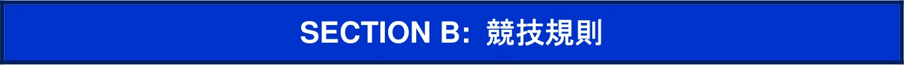

2026年競技規則(SectionB)_日本語版
JAF の公式サイトではありません。JAF が公開する PDF を自動変換した非公式の検索用アーカイブです。記載内容は必ず JAF の原本 PDF で出典をご確認ください。 検索と AI 質問つきのビューアで開く
P.12026 FIA FORMULA ONE WORLD CHAMPIONSHIP
SECTION B:競 技 規 則
（2025 年12 月10 日付発行 第４版仮訳）

目次: ARTICLE B1: 競技の運営4 B1.1一般原則および規定4 B1.2 ＦＩＡデリゲート4 B1.3オフィシャル5 B1.4保険6 B1.5公式ミーティング6 B1.6一般安全規定6 B1.7ピット入口ロード、ピットレーンおよびピット出口ロード8 B1.8ドライバーの変更11 B1.9ドライビング11 B1.10インシデント、違反、およびペナルティ13 ARTICLE B2: 競技フォーマット16 B2.1フリープラクティスセッション16 B2.2スプリント予選セッション16 B2.3スプリントセッション18 B2.4レース予選セッション20 B2.5決勝レースセッション21 ARTICLE B3: 競技中の手順23 B3.1車両検査23 B3.2ウェイング25 B3.3コンポーネントの覆い26 B3.4車両の封印26 B3.5スプリント前および決勝前のパルクフェルメ27 B3.6スプリント後および決勝レース後のパルクフェルメ29
P.3ARTICLE B4: ラップタイム順位認定セッション (LTCS) 29 B4.1 LTCSに関する一般規定29 B4.2フリープラクティスセッションに関する特別規定30 B4.3スプリント予選および予選セッションに関する特別規定31 ARTICLE B5: トータルタイム順位認定セッション (TTCS) 31 B5.1 TTCSに関する一般規定31 B5.2レコノサンスラップ32 B5.3ピットレーンスタート33 B5.4スタート遅延33 B5.5グリッド手順33 B5.6フォーメーションラップ35 B5.7スタート手順35 B5.8スタート中断36 B5.9追加のフォーメーションラップ37 B5.10セーフティカー先導によるフォーメーションラップ38 B5.11不正スタート40 B5.12バーチャルセーフティカー（ＶＳＣ）40 B5.13セーフティカー（SC）42 B5.14中断手順45 B5.15再開手順47 B5.16フィニッシュ手順51 ARTICLE B6: タイヤ制限52 B6.1タイヤの供給51 B6.2タイヤの管理および割当53 B6.3タイヤの使用および返却54 B6.4タイヤの返却58 B6.5 ICTEに関する特別規定58 B6.6 ICTTに関する特別規定58
P.4ARTICLE B7: ドライバーが調節可能なボディワークおよびエネルギー使用制限59 B7.1ドライバーが調整可能なボディワーク59 B7.2エネルギー使用制限60 ARTICLE B8: 車両およびコンポーネントの制限62 B8.1車両の制限および使用62 B8.2パワーユニットの制限および使用62 ARTICLE B9: 要員の制限65 B9.1一般規定65 B9.2運用人員65 B9.3研修生65 B9.4人員の申告65 B9.5制限期間66 ARTICLE B10: メディア活動および公式式典67 B10.1メディア活動67 B10.2表彰式70 ARTICLE B11: 競技以外におけるサーキット走行70 B11.1競技以外におけるサーキット走行に関する一般規定70 B11.2 ＴＣＣ（現行車両のテスト）に関する規定71 B11.3 ＴＰＣ（以前の車両のテスト）に関する規定73 B11.4 ＴＭＣ（ミュールカーのテスト）に関する規定74 B11.5 ＴＨＣ（履歴車両のテスト）に関する規定76 B11.6 ＰＥ（プロモーションイベント）に関する規定76 B11.7 ＤＥ（デモンストレーションイベント）に関する規定76 B11.8安全要件、技術要件および車両制限77 APPENDIX B1: 定義79 APPENDIX B2: パルクフェルメで許可される作業81 APPENDIX B3: 規則関連提出手続き84 APPENDIX B4: 競技の９０日前に必要とされる情報85 APPENDIX B5: 表彰式86 APPENDIX B6: 以降の年度に適用されるセクションBの承認済み変更89
P.5ARTICLE B1：競技の運営
諮問委員会：SAC統括機関：F1委員会 / WMSC B1.1一般原則および規定B1.1.1競技は、技術規則に定義されたフォーミュラ1車両のみによって実施される。B1.1.2各競技は、制限付国際競技の格式を有するものとする。B1.1.3競技に参加可能な車両が１２台未満である場合、当該競技は中止されることがある。B1.1.4競技は、フリー走行１回目（FP1）の開始予定時刻の４時間前に開始され、国際競技規則に基づく抗議提出の最終時刻、または同規則に基づく技術または競技の確認証明が行われた時刻のいずれか遅い時刻をもって終了する。B1.1.5競技参加者への指示および連絡a.競技審査委員会またはレースディレクターは、国際競技規則に従い、特別な通知によって競技参加者に指示を与えることがある。これらの通知はすべての競技参加者に配布され、受領確認がなされなければならない。b.フリープラクティス、スプリント予選セッション、スプリントセッション、予選セッションおよび決勝レースのすべての順位と結果、ならびに競技役員によるすべての決定事項は、書類管理システムを通じて公示される。特定の競技参加者に関する決定または通知は、当該決定から２５分以内に当該競技参加者へ通知されなければならず、受領確認がなされなければならない。B1.1.6 ＦＩＡから書面による特別な許可がある場合を除き、競技以外の目的でサーキットを使用できるのは、各プラクティス走行日の最終プラクティスセッション終了後、スプリント後（予定される場合に）、および決勝日にレコノサンスラップ走行を行う車両のためにピットレーン出口が開放される１時間以上前にのみ、使用することができる。B1.1.7本コースを走行したことによる場合を除き、競技参加者は本コース路面のいかなる部分のグリップも改変するよう試みてはならない。B1.1.8レースディレクター、医師団長（CMO）、あるいはメディカルデリゲートは、競技期間中のいかなる時にもドライバーに対し身体検査を受けるよう要求することができる。インシデント後に衝撃警告灯が作動した場合、レースディレクター、チーフメディカルオフィサー（CMO）、またはメディカルデリゲートの裁量により、ドライバーは遅滞なく競技のメディカルサービスによる検査を受けることが要求される場合がある。メディカルデリゲートはこの検査のために最も適切な時間と場所を決定する。B1.2 ＦＩＡデリゲートB1.2.1 ＦＩＡは各競技に下記のデリゲートを任命する。a.セーフティデリゲートb.メディカルデリゲートc.テクニカルデリゲートd.メディアデリゲートさらに、下記の者を任命することができる。e. ＦＩＡ会長代行
P.6f.レースディレクター代行g.メディカルデリゲート代行h.オブザーバーi.セーフティカーのドライバーj.メディカルカーのドライバーB1.2.2 ＦＩＡデリゲートの責務は、競技オフィシャルの職務を補佐することであり、また選手権を統括するすべての規則が遵守されているかを自身の権限の範囲内で確認し、必要ならば自らの判断による意見を述べ、競技に関する必要な報告書すべてを作成することである。B1.2.3 ＦＩＡによって任命されたテクニカルデリゲートは車両検査に責任を持つ。この点において、そのデリゲートは競技に参加する車両の適合性を立証するための如何なる検査をも、競技の終了時までいつでも、競技審査委員会や競技長の事前の要請がなくとも、自身の裁量で実施することができ、あるいは車両検査員により実施させることができる。テクニカルデリゲートの権限は当該国の車両検査員に対して完全な権限を有する。B1.3オフィシャルB1.3.1 ＦＩＡは、ＦＩＡスーパーライセンス所持者の中から、以下のオフィシャルを指名する。a.最低3名、最大4名の競技審査委員。そのうち１名は委員長に任命される。b.レースディレクターc.パーマネントスターターB1.3.2 ＦＩＡスーパーライセンス所持者の中から、下記のオフィシャルがＡＳＮにより任命され、その氏名は競技の開催申請と同時にＦＩＡに送付されなければならない。a. ＡＳＮの国籍を有する１名の審査委員b.競技長B1.3.3競技長はレースディレクターと常時協議しながらその役務を遂行する。以下の事項については、レースディレクターが最終的な権限を有し、競技長はその明示的な同意がある場合にのみ命令を出すことができる。a.フリープラクティス、予選セッション、スプリント予選セッション、スプリントセッションおよび決勝レースの管理、タイムテーブルの遵守、および必要と判断される場合、国際競技規則または本競技規則に基づくタイムテーブル変更の競技審査委員会への提案b.国際競技規則または競技規則に従って、どのような車両をも停止させること。c.継続することが安全ではないと判断した場合、本競技規則に従ってフリープラクティス、予選セッションまたはスプリント予選セッションの停止、スプリントセッションの中断、またはレースの中断を行い、正しい再スタート手順が実行されることを確実にしなければならない。d.スタート手順e.セーフティカーの使用B1.3.4競技審査委員会、レースディレクター、競技長およびテクニカルデリゲートは、競技開始時に現地に立ち会わなければならない。
P.7B1.3.5例外的な状況において、競技開始時にいずれかの競技審査委員が不在の場合、当該競技審査委員は、その任務を遂行するために、いつでも対応可能であり、連絡可能でなければならない。B1.3.6レースディレクターは、車両が本コース上の走行を許されている間は、常時競技長および競技審査委員長と無線で連絡がとれる状態になければならない。これに加え、この間、競技長はレースコントロールに居て、全マーシャルポストと無線連絡をとれる状態になければならない。B1.3.7競技審査委員会は、裁定のための補助としてビデオやその他の電子機器を使用することができる。競技審査委員会は審判員の判定をくつがえすことができる。B1.4保険B1.4.1競技のプロモーターは、すべての競技参加者、その関係者およびドライバーに、ＦＩＡの要求に従い第三者保険を付保しなければならない。B1.4.2競技の９０日前までに、プロモーターは保険契約によって保証されている内容の詳細をＦ ＩＡに送付しなければならない。その保険契約は、ＦＩＡの要求事項と同様に開催国の国内法にも準じていなければならない。保険証券は競技参加者の要求に応じて閲覧できなければならない。B1.4.3プロモーターにより加入される第三者保険は、競技参加者やその他の競技関係者がすでに加入している個別の保険に加えて付保されるもので、既得権を侵害するものであってはならない。B1.4.4競技に参加するドライバーは互いに第三者とはならない。【注記：本項（B1.4）は、将来的にセクションAへ移管される予定であり、同セクションへの追加作業が完了次第削除される】B1.5公式ミーティングB1.5.1スプリントセッションが予定されている各競技ではレースディレクターが議長を務めるミーティングが、ＦＰ１開始の３時間前、ＦＰ１終了の１時間後、スプリント予選セッション終了の１時間半後に開催される。最初のミーティングにはすべてのチームマネージャーが出席しなければならず、第２回目のミーティングにはすべてのドライバーおよびチームマネージャーが出席しなければならない。B1.5.2スプリントセッションが予定されていない各競技では、レースディレクターを議長とするミーティングはＦＰ１の開始３時間前とＦＰ２終了の１時間３０分後に行われる。最初のミーティングにはすべてのチームマネージャーが出席しなければならず、第２回目のミーティングにはすべてのドライバーおよびチームマネージャーが出席しなければならない。B1.5.3レースディレクターがそれ以外にもミーティングを行うことが必要であると判断した場合、レーススタートの３時間前に開催されるものとし、その旨、決勝レーススタートの５時間前までに競技参加者に通知される。すべてのドライバーおよびチームマネージャーが出席しなければならない。B1.6一般安全規定
P.8B1.6.1本競技規則で別途規定される場合を除き、すべてのフリープラクティスセッション、予選セッション、スプリント予選セッションおよびスプリントセッションにおけるピットレーンおよび本コース上で適用される規則ならびに安全規定は、決勝レースと同一とする。B1.6.2車両が本コース上に停止した場合、その車両が他の競技参加者の危険または妨げとならないようできる限り早急に取り除くことは、マーシャルの責務である。いかなる状況であっても、ドライバーは正当な理由なく本コース上に車両を止めてはならない。B1.6.3国際競技規則または本競技規則で特に認められている場合を除き、パドック、競技参加者指定のガレージエリア、ピットレーンまたはスターティンググリッド以外で、停止している車両にドライバー以外の者が触れてはならない。B1.6.4各フリープラクティスセッション、予選セッション、スプリント予選セッションの１５分前から５分後に至るまでの時間、およびスプリントセッションと決勝レース直前のフォーメーションラップ開始後から最後の車両がパルクフェルメに進入するまでの間は、以下を除き、いかなる者も本コース、ピット入口あるいはピット出口へ立ち入ってはならない。a.業務を遂行中のマーシャルおよびその他許可を受けた者。b.運転中あるいはマーシャルの許可を受けた歩行中のドライバー。c.フォーメーションラップのためグリッドを離れることのできる車両すべてが出発した後に、車両を押すか、またはグリッドから機材を片付けるチーム員。d. TTCS（Total Time Classified Session：総時間で順位付けされるセッション）が開始された後、グリッドから車両を取り除くため、マーシャルを手伝うチーム員。B1.6.5車両セーフティライトa.リアライト：インターミディエイトあるいはウェット天候用タイヤで走行する場合は、C14.3項に記されるリアライトを常に点灯していなければならない。いかなるLTCS （Lap Time Classified Session：ラップタイムで順位付けされるセッション）またはTTCSにおいても、車両が最初にピットレーンを離れる際に、すべてのリアライトが正常に作動していなければならない。C14.3.2項に記載の中央リアライト、およびC14.3.3項に記載のサイドライトの少なくとも１つが正常に作動していない場合、当該ドライバーを停止させるか否かを判断するのは、レースディレクターの裁量に任される。その結果その車両が停止させられた場合、ドライバーは当該不具合が解消された後に復帰することができる。b.ラテラルライト：C14.7項に規定されるラテラルライトは、いかなるLTCSまたはTTCSにおいても、車両が最初にピットレーンを離れる際に正常に作動していなければならない。B1.6.6主催者は容量が５ｋｇの消火器を最低２個、各競技参加者に対して利用可能とし、それらが正しく機能することを確実にしなければならない。B1.6.7警備目的としてＦＩＡが特別に許可した場合を除き、ピットレーン、本コース、パドックあるいは観客エリアへの動物の持ち込みを禁じる。B1.6.8各競技参加者につき１２名のチームメンバーのみが、各フリープラクティスセッション、予選セッション、スプリント予選セッション、スプリントセッションおよび決勝レース中、シグナリングエリアへの立ち入りを許される。B1.6.9燃料補給
P.9a.燃料補給は、競技参加者に割り当てられた指定ガレージ内でのみ許可される。b.いかなる車両も、０.８リットル／秒を超える流速で給油も、また燃料を除去することもできない。c.燃料補給中、ドライバーは車両に留まることができるが、エンジンは停止していなければならない。d.燃料補給または燃料取扱い作業中は、以下を遵守しなければならない。i.担当要員は、ＦＩＡ基準８８６７－２０１６、ＦＩＡ基準８８５６－２０００あるいはＦＩＡ基準８８５６－２０１８のいずれかに合致する外衣類を着用していなければならない。ii.適切な容量のある、適した消火器を持った１名の補助要員が配備されなければならない。その要員はＦＩＡ基準８８６７－２０１６、ＦＩＡ基準８８５６－２００ ０あるいはＦＩＡ基準８８５６－２０１８のいずれかに合致する外衣類を着用していなければならない。iii. すべての車両、給油器材および容器は、必要である場合には、適切にアースされていなければならない。iv. 燃料の移し替えに使用される動力付きポンプ装置は、ノンラッチ型スイッチによ
って操作されるか、操作員が離れた場合に自動的に止まらなければならない。B1.6.10ヒートハザード（Heat Hazard）公式気象サービスが、競技のスプリントセッションまたはレース中に熱指数が31.0℃を超えると予測した場合、またはレースディレクターの独自の裁量によって、競技予定開始時刻の２４時間前にヒートハザードが宣言される場合がある。ヒートハザードが宣言された場合、競技期間中、その宣言は有効に維持される。すべての競技参加者には、公式メッセージシステムを通じて通知される。ヒートハザードが宣言されると、次の措置が取られる： a.冷却媒体および冷却システムの一部を構成するドライバー個人装備品を除き、ドライバー冷却システムのすべての構成要素を装着しなければならない。b.ヒートハザードが宣言された競技のスプリントセッションまたは決勝レースのスタート時には、ドライバー冷却システムのすべての構成要素が装着されなければならない。そのシステムは、機能可能な状態であり、ドライバーの利用が可能で、当該セッションにおいて技術規則C14.6.1項に規定される要件を満たしていなければならない。c.技術規則C4.1項およびC4.6項に従い、ヒートハザード質量増加が適用されること。B1.7ピット入口ロード、ピットレーンおよびピット出口ロードB1.7.1指定のガレージエリアの割り当てFIAは、各競技参加者が作業できるガレージとピットレーン内のエリアを平等に割り当てる。また、これらの「指定ガレージエリア」内には、セッション中にピットストップを行うことができる位置が1か所設けられる。競技参加者は以下の行為を行ってはならない： a.ピットレーンのいかなる部分にも線を塗装して引くこと。
P.10b.車両がピットストップ位置を離れる際、タイヤゴムをぬぐって乾かす、あるいは掃き掃除する、または横たえること以外、競技参加者がピットレーン路面のグリップ力を高める試みを行うこと。問題が明確に確認され、その解決策がレースディレクターにより合意されている場合を除く。c. B5.3項にて特別に規定されている場合を除き、ファストレーンに機材を残すこと。d.ピットレーンで車両のいかなる部分を持ち上げるための動力装置を使用すること。e. B5.3項およびB5.14項に従いピットレーン終点に車両がいる場合を除き、車両への作業は、インナーレーンにおいてのみ行うことができる。しかしながら、他の車両がピットレーンを離れようとするのを妨害することになりそうな場合、ファストレーンでは、いかなる作業も実施できない。B1.7.2ピットレーンの安全本条項に詳述されているすべての場合において、車両は、指定されたガレージエリアから運転して走り出したとき（ガレージから離れるとき）、またはピットストップ後にそのピットストップ位置を完全に離れた後は、競技参加者の指定のガレージエリアから離れたものとみなされる。競技参加者は、車両の上方および前方の両方から見たときに、車両がいつ離れたかを明確に確認できる手段を提供しなければならない。a.いかなる場合であっても、ピットレーンに居る人員、またはその他ドライバーを危険にさらす可能性のある方法で、または他の車両を損傷する可能性のあるような方法で、ガレージまたはピットストップ位置から車両を出してはならない。b.車両を安全でない状態でガレージまたはピットストップ位置から出してはならない。i. LTCS中、車両が安全ではない条件下で出されたとみなされた場合には競技審査委員会は当該ドライバーを適切と判断する数だけグリッドポジションを下げる処置をとることができる。このようなペナルティは決勝レースに適用され、スプリント予選セッション中での違反はスプリントセッションに適用される。ii. TTCS中、車両が安全ではない条件下で出されたとみなされた場合には、当該ドライバーにはストップアンドゴーのペナルティが科される。しかし、安全でない状態でクルマが出された結果、ドライバーがTTCSからリタイアした場合、当該競技参加者に対して罰金が科される場合がある。iii. 競技審査委員会の判断で、安全でない状態で出されたことを認識しながら運転を続行するドライバーには、追加のペナルティが科される。c.チーム員がピットレーンに入ることが許されるのは、車両への作業が必要とされる直前からであり、作業が終了次第、退去しなければならない。d.予選セッション、スプリント予選セッション、またはTTCS中に、ピットストップ位置にある車両に対し、コンポーネントの調整または交換、あるいはペナルティに服する目的で、ピットレーンで車両に対する作業を行うすべてのチーム員は、ＥＣＥ２２.０５ － ヨーロッパモーターサイクルロードヘルメット、ＤＯＴ－ＵＳＡモーターサイクルロードヘルメット、あるいはＪＩＳ Ｔ８１３３：２０１５乗車用２種－ＪＰＮ保護ヘルメットの要件に適合した、またはそれを上回るヘルメットを着用していなければならない。適切な保護眼鏡（ゴーグル）の使用が義務付けられる。e. ＦＩＡによって許可されない限り、以下の時間帯の１６歳未満の者のピットレーンへの立ち入りを禁じる：
P.11i.各フリー走行セッション、予選セッション、スプリント予選セッションの１５分前から終了後５分までの間。ii.車両がレコノサンスラップを行うためにピット出口が開く１５分前からTTCSが終了して最後の車両がパルクフェルメに入るまでの時間。B1.7.3ピット入口ロード、ピットレーンおよびピット出口ロードの走行a. ピットレーンでは、競技期間中８０km/hの速度制限が適用される。ただし、競技の安全と秩序を守るために、レースディレクターは、この制限を変更することができる。i.フリープラクティスセッション、予選セッション、スプリント予選セッション中にドライバーが制限速度を超過した競技参加者には、制限速度超過１km/hごとに１ ００ユーロ、最高１０００ユーロまでの罰金が科される。ii. B1.10.2d項に従い、競技審査委員会は、ドライバーが何らかの利益を得るためにスピード違反をしたと疑われる場合、追加ペナルティを科すことができる。iii. TTCS中、競技審査委員会は制限速度を超過したドライバーに対し、５秒タイムペナルティ、１０秒タイムペナルティ、ドライブスルーペナルティ、またはストップアンドゴー・タイムペナルティのいずれかのペナルティを科すことができる。b.ピットレーンにおいては、いかなる時にも、車両が自己の動力で後進することは許されない。c. 以下の場合を除き、いかなる時もピットストップ位置から車両を運転してはならない。i. 本コースからピットレーンに入った直後にピットストップ位置に最初に運転され、そしてii.ピットストップ位置から直ちに本コースに戻る場合。d.スタート進行中、いつであっても車両がグリッドから押し出されない限り、競技参加者指定のガレージエリアからピットレーン出口まで、車両を運転してのみ移動させることができる。LTCSのスタートあるいは再スタートの前にピットレーン出口に運転して移動した車両はすべて、ファストレーンに１列になって整列し、その他の車両を不当に遅らせることがない限り、そこに到着した順に出ていかなければならない。e.ピットレーン出口でグリーンライトおよびレッドライトが点灯される。車両は、ピットレーン出口でグリーンライトが点灯している時のみピットレーンを出ることができる。さらに本コース上の車両が接近してくる場合には、青旗および／あるいは青色の点滅灯がピット出口ロードで示され、ピットレーンを離れるドライバーに警告を与える。B1.7.4ピットレーンの閉鎖例外的な状況において、レースディレクターは安全上の理由からピット入口の閉鎖を要求することができる。a.そのような場合、ドライバーは車両の必要不可欠かつ完全に明白な修理を行うためにのみピットレーンに進入することができる。b.ピットレーンが閉鎖されている間に、競技審査委員の判断により、いかなる他の理由でピットレーンに進入したドライバーには、ストップアンドゴーペナルティが科される。
P.12B1.8ドライバーの変更B1.8.1選手権期間中、各競技参加者は決勝レースにおいて最大４名のドライバーを使用することが認められ、いかなる新しいドライバーも当該選手権のポイントを獲得することができる。B1.8.2第一次車検終了後に提案された変更が審査委員会の承認を得た場合、ドライバーの変更は、次の場合に行うことができる： a.スプリントセッションが予定されていない各競技では予選セッションの開始前であればいつでも。b.スプリントセッションが予定されている各競技では、スプリントセッションに参加するドライバーの場合はスプリント予選セッションの開始前であればいつでも、決勝レースに参加するドライバーの場合は予選セッションの開始前であればいつでも。不可抗力による追加変更については別途検討される。B1.8.3 B1.8.1項の規定に加え、各競技参加者は以下の条件でＦＰ１とＦＰ２において追加ドライバーを起用することが認められる: a. ＦＰ１開始の予定時刻の２４時間前までに各セッションで各競技参加者が使用する予定の車両とドライバーについてＦＩＡが通知を受けていること。ＦＰ１開始の２時間前を切る変更は競技審査委員会の了解を得てのみ可能となる。b. １つのセッションに最大２名までのドライバーが起用されること。c. 選手権期間中、選手権にエントリーされた各車両について、各競技参加者は、選手権において２回を超えて選手権決勝レースに出場したことのないドライバーを２回起用しなければならない。各競技参加者は、使用するドライバーの詳細を、該当する競技開始の７日前までに書面にてＦＩＡに通知しなければならない。d. 起用されたドライバーは、割り当てられた競技番号を用いること。e. それらのドライバーは、指名されたドライバーに割り当てられたパワーユニット、およびタイヤを使用すること。f. それらのドライバーは、スーパーライセンスあるいはフリープラクティススーパーライセンスを所持していること。B1.8.4競技参加者が指名したドライバーの１名が第一次車検終了後のある段階で運転できなくなった場合で、ドライバー変更について競技審査委員会の同意があれば、代替のドライバーは当初のドライバーに割り当てられたエンジン、ギアボックスとタイヤを使用しなければならない（B8.2項、B8.3項、およびB6.1項）。B1.9ドライビングB1.9.1ドライバーは、１人で援助なしに運転しなければならない。B1.9.2いかなるセッションに参加するドライバーも、国際競技規則に指定された耐火性の衣服、ヘルメット、および前頭頭部拘束装置 (FHR) を常に着用しなければならない。B1.9.3ドライバーは、常にサーキットにおけるドライビングマナーに関する国際競技規則の規定を遵守しなければならない。B1.9.4ドライバーに対する公式な指示は、国際競技規則に定められたシグナルによって与えられる。競技参加者は、これらと類似する旗あるいはライトを一切使用してはならない。国際競
P.13技規則の付則Ｈ項に従い、本コース脇のライトパネルに表示される光信号は旗信号と同じ意味を持つ。国際競技規則の付則Ｈ項の第2.5.5b条に従い、これを補足する： a. １本の黄旗の振動表示：黄旗が振動表示されるマーシャリングセクターを通過するドライバーは、減速し、進路変更の準備をしなければならない。競技審査委員会がこれらのドライバーがこれらの要件を遵守したと判断するためには、当該マーシャリングセクターにおいて、ドライバーは通常より早めにブレーキをかけ、かつ／または明確に減速することが求められる。b. ２本の黄旗の振動表示：２本の黄旗の振動表示のマーシャリングセクターを通過するドライバーは、速度を大幅に減速し、進路変更または停止の準備をしなければならない。競技審査委員会がこれらのドライバーがこれらの要件を遵守したと判断するには、当該ドライバーが当該ラップで意味あるラップタイムを記録しようとしていないことが明らかでなければならない。さらに、スプリント予選または予選セッション中、２本の黄旗の振動表示のマーシャリングセクターを通過したドライバーのラップタイムは抹消される。c.セーフティカーまたはバーチャルセーフティカー期間中の２本の黄旗の振動表示：セーフティカーまたはバーチャルセーフティカー期間中に２本の黄旗の振動表示がされているマーシャリングセクターを通過するドライバーは、b.の要件に加えて、関係する各マーシャリングセクターにおいてFIA ECUによって設定された最低タイムを上回って走行しなければならない。B1.9.5車両はいかなる時にも、不必要に速度を落とし不安定な走行、あるいは他のドライバーまたはそれ以外の人に危険を及ぼす可能性があるとみなされる方法で運転してはならない。B1.9.6ドライバーは、常に本コースを使用するあらゆる合理的努力をしなければならず、正当な理由なくして本コースを外れることはできない。車両のいかなる部分も本コースと接していない状態である場合、ドライバーは本コースを外れたと判断される。疑義を避けるため、本コース端部を画定している白線は本コースの一部と見なされるが、縁石は本コースと見なされない。本コースを外れた車両のドライバーは再度復帰することができるが、それが安全であることが確認され、それにより持続的なアドバンテージを得ることが一切ない場合にのみ行うことができる。レースディレクターの絶対裁量により、ドライバーは本コースを外れることによって得られた、いかなるアドバンテージのすべてを返す機会を与えられる場合がある。B1.9.7車両の構造部品に重大かつ明らかな損傷があり、その結果、ドライバー自身または他者に危険を及ぼす可能性のある状態にあるドライバー、または重大な故障や不具合があり、他の競技参加者の妨げになることなくピットレーンに戻ることができないドライバーは、安全が確保され次第、速やかに本コースから外れなければならない。レースディレクターの独自の裁量により、車両の構造部品に重大かつ明らかな損傷、または重大な故障や不具合があると判断された場合、競技参加者は安全が確保され次第、直ちに本コースから外れるよう指示される場合がある。B1.9.8車両を本コース上に放置するドライバーは、ギアをニュートラルに入れるか、またはクラッチを切り、ＥＲＳを停止し、車両にはステアリングホイールを装着しておかなければならない。B1.9.9 TTCS中断中を除き、ドライバーによってサーキット上に放置された車両は、一時的であってもそのセッションから離脱したとみなされるものとする。例外的に、TTCS中断中にサー
P.14キット上に放置された車両は、セッション再開時に参加を許可されることがあるが、その理由は機械的問題、車両の損傷または優位性を得るための放棄でない場合に限られる。B1.10インシデント、違反、およびペナルティB1.10.1インシデントの報告レースディレクターは本コース上のインシデントすべて、本競技規則あるいは国際競技規則の違反の疑い（"インシデント"）の報告を競技審査委員会に対し行うことができる。B1.10.2インシデントの調査a.調査の実施に進むか否かを決めるのは競技審査委員会の裁量に委ねられる。競技審査委員会は、委員会自身が気づいたインシデントをも調査することができる。b.競技審査委員会がインシデントを調査中である場合は、インシデントに関与したドライバー（複数含む）を明示したメッセージが、すべての競技参加者に送られる。i.そのようなメッセージがTTCS終了後６０分以内に告示されることを条件に、当該ドライバーが競技審査委員会の同意を得ずにサーキットを離れることは禁止される。c.インシデントに関係しているドライバーにペナルティを科すかどうかの決定は、競技審査委員会の裁量に任される。当該ドライバーが完全にあるいは圧倒的にそのインシデントについて責任があることが競技審査委員会に明白でない限り、いかなるペナルティも科されないものとする。d.競技審査委員会は、国際競技規則に基づき科すことのできるペナルティに加え、もしくはその代わりとして本競技規則に定められているペナルティを特別に科すことができる。B1.10.3 LTCS中のインシデントに対するペナルティLTCS中にインシデントがあった場合、競技審査委員会は当該ドライバーのラップタイム（含複数）を削除、あるいはグリッドポジションを適切と判断する数だけ下げることができる。a.ドライバーが運転違反をしたことが完全に明白でないならば、そのようなインシデントについて、通常当該セッション終了後に調査が実施される。b.このようなグリッドポジションペナルティは決勝レースに適用され、スプリント予選中での違反はスプリントのグリッドに適用される。c.適切な場合には、B1.10.2d項の規定も考慮される。B1.10.4 TTCS中のインシデントに対するペナルティTTCS中のインシデントの場合、競技審査委員会は、インシデントに関与したドライバーすべてに、以下のペナルティうち１つを科すことができる： a. ５秒ペナルティ：ドライバーはピットレーンに進入し、自己のピットの停止位置に最低でも５秒間停止した後、TTCSに復帰しなければならない。b. １０秒ペナルティ：ドライバーはピットレーンに進入し、自己のピットの停止位置に最低でも１０秒間停止した後、TTCSに復帰しなければならない。
P.15c.ドライブスルーペナルティ：ドライバーはピットレーンに進入し、停止せずに、TTCSに復帰しなければならない。d. １０秒ストップアンドゴーペナルティ：ドライバーはピットレーンに進入し、自己のピットの停止位置に最低でも１０秒間停止した後、TTCSに復帰しなければならない。e.タイムペナルティf.ドライバー戒告同一の選手権の中で戒告処分を５回受け、そのうち少なくとも４回が、運転に関する違反であったドライバーは、５回目の処分決定により、その競技の決勝レースにて１０グリッド降格のペナルティを受ける。その５回目の戒告が、決勝レース中のインシデントに続いて科された場合は、１０グリッド降格のペナルティは、当該ドライバーの次の競技のレースに適用される。g.競技参加者（チーム）戒告h.当該ドライバーがその後の１２ヶ月間に参加する次のスプリントまたはレースにて、グリッドポジションをいくつか下げる。i.競技失格
j.当該ドライバーの次の競技から出場停止B1.10.5ペナルティの執行手順
競技審査委員会が5秒ペナルティ、10秒ペナルティ、ドライブスルーペナルティ、またはストップアンドゴーペナルティを科す場合、以下の手順に従わなければならない： a.競技審査委員会は、科されたペナルティの通告書を競技参加者に通知し、その情報が公式メッセージ送信システム（OMS）を使用し、すべての競技参加者に通知される。b. 5秒ペナルティまたは10秒ペナルティの場合： i.セーフティカーの追従のみを目的としてピットレーンに進入する場合を除き（B5.13.3項）、当該ドライバーは次回ピットレーンに進入した際に当該ペナルティを履行しなければならない。疑義を避けるため、VSCまたはセーフティカー出動中に指定されたガレージエリアに停止することを選択した場合、セーフティカーに追従してピットレーンを走行している場合を含め、当該ドライバーはペナルティを履行しなければならない。ii.当該ドライバーは、TTCS終了前に更なるピットストップを行わない場合に限り、TTCS中に当該ペナルティを消化しないことを選択できる。この場合、5秒ペナルティの場合は当該ドライバーの経過時間に5秒が加算され、10秒ペナルティの場合は当該ドライバーの経過時間に10秒が加算される。iii. 5秒ペナルティまたは10秒ペナルティを受けて車両がピットレーンに止まってい
る間は、ペナルティ停止時間を終えるまでは当該車両に対していかなる作業も行うことは禁止される。これに関して車両またはドライバーに、手で触れたり工具または装備に触れる行為は、すべて作業とみなされる。c.ドライブスルーペナルティまたはストップアンドゴーペナルティの場合：
P.16i.競技審査委員会の決定が当該競技参加者に通告された時刻から、当該ドライバーはピットレーンへ進入する前に２回まで本コース上のラインを通過でき、またストップアンドゴーペナルティの場合は自己のガレージ向かい、タイムペナルティとして科せられた時間の間、自己のピットストップ位置に停止しなければならない。ii.当該ドライバーがペナルティを受ける目的で、すでにピット入口ロードまたはピットレーンに居ない限り、ＶＳＣ手順が使用されている場合あるいはセーフティカーが出動した後にペナルティを消化することはできない。セーフティカーの後方でまたはＶＳＣ手順の間で本コース上でラインを通過した回数は、上記に定義された本コース上でラインを通過できる最大数に追加される。iii. これら２種類のペナルティの何れかが最後の３周回の間に科せられることになった場合には、当該ドライバーは本コース上でラインを３回通過でき、ドライブスルーペナルティの場合は当該ドライバーの経過時間に２０秒加算され、ストップアンドゴーペナルティの場合は当該ドライバーの経過時間に３０秒加算される。iv. ストップアンドゴーペナルティを受け車両がピットレーンに停止している間は、車両に作業を行うことは禁止される。ただし、エンジンが停止し、手助け無しにはドライバーが再スタートできず、再スタートに何らかの作業が必要な場合は、ペナルティの時間が経過した後に実施することができる。競技参加者がエンジンを始動できない場合、当該車両はそのドライバーのガレージでのみ作業を行うことができる。d.上述の４種類のペナルティの何れかがTTCS終了後に科せられることになった場合には、５秒ペナルティの場合は５秒が当該ドライバーの経過時間に加算され、１０秒ペナルティの場合は１０秒加算され、ドライブスルーペナルティの場合は２０秒加算され、ストップアンドゴーペナルティの場合は３０秒加算される。e.上述の４種類のペナルティの何れかがドライバーに科され、５秒ペナルティまたは１ ０秒ペナルティの場合でTTCSで順位認定されなかったために、あるいはドライブスルーペナルティまたはストップアンドゴーペナルティの場合でTTCSからリタイアしたためにペナルティを消化できない場合、競技審査委員会はそのドライバーの次回レースでグリッドポジションを下げるペナルティを科すことができる。f. B1.10.5b項またはB1.10.5c項に違反し、不履行があった場合には、追加のペナルティが
科される可能性があり、そのペナルティは違反または不履行があった場合のペナルティに優先しそれに置き換えられる。B1.10.6罰則に対する控訴A7.5.1項およびA7.5.6項に基づき、以下に関する決定に対し、控訴することはできない： a.最後の３周回の間、あるいはTTCS終了後に科されることになったものを含め、B1.10.4 a.からh.のもとに科されたペナルティ。b. B8.2項のもとに科されたグリッドポジションを下げるペナルティ。c. B1.10.3項のもとに科されたペナルティ。d. B2.3.4項またはB2.5.4項に関連して競技審査委員会が決定した事項。e. B5.5.3項またはB5.14.4項のもとに科されたペナルティ。f.競技審査委員会によりA3.3.1項のもとになされた決定すべて。
P.17ARTICLE B2：競技フォーマット
諮問委員会：SAC統括機関：F1委員会 / WMSC B2.1フリープラクティスセッションB2.1.1標準フォーマットの競技
各標準フォーマットの競技において： a.コース走行初日に、２回のフリープラクティスセッション（「フリープラクティス１」または「ＦＰ１」、および「フリープラクティス２」または「ＦＰ２」）がそれぞれ１時間行われ、間隔は２時間以上３時間以下とする。
i. ICTTに追加のタイヤ仕様が提供される場合（またはICTTが予定されていたがその後に延期またはキャンセルされた場合）、ＦＰ２の時間は１.５時間に延長される。b.コース走行２日目に、ＦＰ２終了から１８時間以上経過してから開始される追加のフリープラクティスセッション（「フリープラクティス３」または「ＦＰ３」）が１時間行われる。i. ICTTに追加のタイヤ仕様が提供された場合（またはICTTが予定されていたがその後に延期または中止された場合）、ＦＰ３はＦＰ２終了から１７.５時間以上後に開始される。B2.1.2代替フォーマットの競技各代替フォーマットの競技において： a.コース走行初日に、１時間のフリープラクティスセッション（「フリープラクティス１」または「ＦＰ１」）を１回実施する。B2.1.3フリープラクティスセッションの順位すべてのフリープラクティスセッションの順位は、セッション中に各ドライバーが記録した最速ラップタイムに基づいて決定される。最速ラップタイムを記録したドライバーが、１位、２番目に速いラップタイムを記録したドライバーが２位、というように順位が決定される。B2.2スプリント予選セッションB2.2.1各代替フォーマットの競技では、スプリントのスターティンググリッドは、コース走行初日に行われ、ＦＰ１終了後２.５時間以上３.５時間以内に開始されるスプリント予選セッション（「スプリント予選」または「ＳＱ」）の結果によって決定される。B2.2.2スプリント予選フォーマットスプリント予選は、次の通り実施される： a.セッション（ＳＱ１）の最初の１２分間は、すべての車両がコース上に出ることが許可され、この時間終了時に、最も遅い６台の車両は、それ以降のセッションへの参加が禁止される。残りの１６台の車両のラップタイムは、その時点で削除される。
P.18b. ７分間の休憩の後、セッションは１０分間再開され（ＳＱ２）、残りの１６台がコース上に出ることが許可される。この時間終了時に、最も遅い６台は、それ以降のセッションへの参加が禁止される。残りの１０台のラップタイムは、その時点で削除される。c. ７分間の休憩の後、セッションは８分間再開され（ＳＱ３）、残りの１０台の車両がコース上に許可される。B2.2.3スプリント予選順位スプリント予選順位は、以下の方法で決定される： a.順位認定されるドライバーは以下の手順で順位付けされる： i. ＳＱ３に参加したドライバーに対し、ＳＱ３で各ドライバーが達成した最速ラップタイムに基づき、上位１０位が割り当てられ、最速ラップタイムのドライバーが１位となる。ii.次の６つのポジションは、ＳＱ２で各ドライバーが達成した最速ラップタイムに基づいて、ＳＱ２で敗退したドライバーに割り当てられ、最速のドライバーは１１位となる。iii. 次の６つのポジションは、ＳＱ１で敗退したドライバーに割り当てられ、最速のドライバーは１７位となる。iv. スプリント予選、ＳＱ１、ＳＱ２、またはＳＱ３の期間中に２人以上のドライバーが同一のラップタイムを記録した場合、最初にラップタイムを記録したドライバーが優先される。v. ＳＱ２またはＳＱ３において、複数のドライバーがラップタイムを記録できなかった場合、以下の順序で順位付けされる： a.フライングラップを開始してラップタイムを記録しようとしたドライバー。b.フライングラップを開始できなかったドライバー。c.当該予選ピリオド中にピットアウトできなかったドライバー。上記a、b、またはcの各分類におけるドライバーの相対的な順位は、前回のスプリント予選における順位に基づいて決定されるものとする。b.以下の状況において、ドライバーは「順位未認定」とみなされる。i. ＳＱ１で敗退し、ＳＱ１でのベストラップがＳＱ１中に記録された最速ラップタイムの１０７％を超えた場合（ただし、レースディレクターによって路面がウェットと宣言された場合を除く）。ii. ＳＱ１でラップタイムを記録できなかった場合、またはすべてのラップタイムが抹消された場合。iii. スプリント予選において、競技審査委員会によって失格とされた場合。これらのドライバーの相対的な順位は、以下のように決定される：
a.条件 i.または ii.により順位が認定されないドライバーには、ＦＰ１での順位に従って上位の順位が割り当てられる。
P.19b.条件 iii.により順位が確定しないドライバーには、ＦＰ１での順位に従って下位の順位が割り当てられる。残りの競技への順位未認定ドライバーの参加は、各事案ごとに競技審査委員会によって決定される。競技審査委員会は、例外的に、別のプラクティスセッションで適切なラップタイムが記録されたこと、過去の選手権競技における当該ドライバーの全体的なパフォーマンス、または当該ドライバーの失格の原因となった違反の重大性などの要素が考慮される場合がある。B2.2.2項およびB2.2.3項に詳述されている手順は、２２台の車両が競技に参加できることを前提としている。参加資格のある車両が２０台の場合、ＳＱ１およびＳＱ２の後に５台が脱落する。参加資格のある車両が２４台の場合、ＳＱ１およびＳＱ２の後に７台が脱落し、参加資格のある車両がさらに多い場合は、同様に脱落する。スプリント予選終了時に、各ドライバーが達成したタイムが公式に発表される。B2.3スプリントセッションB2.3.1各代替フォーマットの競技では、コース走行の２日目にスプリントセッション（「スプリント」または「ＳＰ」）が行われる。B2.3.2スプリントセッションの距離各スプリントの距離は、B5.7.1項に規定するスタート合図からB5.16.1項に規定するセッション終了合図まで、100kmを超える距離となる最小の完全な周回数と同一とする。ただし、以下の状況は除く： a.フォーメーションラップがセーフティカー先導で開始される場合（B5.10項）、スプリントの周回数は、セーフティカー先導による走行周回数から１周を引いた周回数だけ減算される。B2.3.3スプリントセッションの継続時間セッション終了合図に関するB5.15.1項の規定は、以下の状況において例外となる： a.スタート合図から１時間経過しても予定のスプリント距離が完走しない場合、先頭車両は、１時間経過したラップの次のラップの終了時にコントロールライン（以下「ライン」）を通過した時点でセッション終了合図を受ける。ただし、これにより予定周回数が超過しないことを条件とする。b.スプリントが中断された場合（B5.14.2項）、その中断時間がこの１時間に加算され、スプリントの最大合計時間は１.５時間までとする。これらの時間の合計が終了したラップの次のラップの終わりにラインを通過した時点で、先頭車両にセッション終了合図が提示される。ただし、これにより予定周回数が超過しないことを条件とする。スプリントのフォーメーションラップがセーフティカー先導で開始される場合（B5.10項）、B5.10.2項に従ってセーフティカーがグリッドを離れることを知らせる「スタートガントリー」（スタートシグナルブリッヂ）のグリーンライトが点灯した時点で、スプリントの最大合計時間１.５時間が開始される。B2.3.4スプリントセッションのグリッドa.スプリントのグリッドは、予定されている場合、スプリント予選（B2.2.2項）、スプリント予選の順位決定プロセス（B2.2.3項）、および本条に定める手順に従って構成され
P.20る。スプリントで科されたペナルティは、本条に定める手順に従って加算され、適用される。競技においてスプリント予選が実施されず、かつ競技審査委員会が当該セッションが実施できないことを承認した場合、スプリントのグリッドはドライバー選手権の順位に基づいて決定される。この場合、各ドライバーのスプリント予選順位の代わりにドライバー選手権の順位を用いて、B2.3.4b項に定められた手順が適用され、すべてのドライバーは順位認定されているものとみなされる。上記のスプリントのグリッドを形成するいずれの方法も適用できない場合、スプリントのグリッドの形成は、競技審査委員会の独自の裁量により決定される。b.名目上、空きグリッドから始め、ドライバーには次の一連の手順でグリッドポジションが配置される： i.累積グリッドペナルティが１５回以下の順位認定されたドライバーは、予選またはスプリント予選セッションの順位にグリッドペナルティの合計を加えたものに等しい暫定グリッドポジションに配置される。２名以上のドライバーが暫定グリッドポジションが同じとなった場合、相対的な順位はスプリント予選セッションの順位に従って決定され、最も遅いドライバーが割り当てられた暫定グリッドポジションを維持し、他のドライバーは彼らのすぐ前の暫定グリッドポジションを得る。ii.ペナルティを受けたドライバーにa.に従って暫定グリッドポジションが配置された後、ペナルティを受けていない順位認定されたドライバーには、予選またはスプリント予選セッションの順位順に空いているグリッドポジションに配置される。iii. ペナルティを受けていない順位認定されたドライバーにグリッドポジションを割り当てた後、a.で定義されている暫定グリッドポジションを持つペナルティを受けたドライバーは、空いているグリッドポジションを埋めるために繰り上げられる。iv. 累積グリッドポジションペナルティが１５を超えたドライバーは、他の順位認定されたドライバーの後方からスタートする。それらの相対的な位置は、スプリント予選セッションの順位に従って決定される。v.競技審査委員会によって参加が許可された順位認定されていないドライバーは、他のすべてのドライバーの後方のグリッドポジションに配置され、その相対的な位置は、B2.2.3b項に従って決定される。c.暫定スターティンググリッドがスプリントのフォーメーションラップ開始予定時刻の２時間前までに発表される。いかなる理由であれ、車両がスタートできない（または、車両がスタートできないと確信する正当な理由がある）競技参加者はすべて、できるだけ早く競技審査委員会にその旨を通知しなければならず、いずれにしても、それはスプリントのフォーメーションラップ開始予定時刻の１時間１５分前までに通知しなければならない。i. １台以上の車両が取り消した場合、グリッドはそれに応じて詰められる。ii.最終スターティンググリッドは、スプリントのフォーメーションラップ開始予定時刻の１時間前までに発表される。iii. B2.3.4c項に定められた時間後に取り消し、またはスタートできない車両（複数含）
のグリッドポジションは、空きのままとなる。
P.21B2.3.5スプリントセッションの順位
a.第１位となる車両は、所定の距離を最短時間で走破した車両、または適切な場合、１時間が終了した時点（またはB2.3.3b項の下ではそれ以上）に先頭でラインを通過した車両とする。すべての車両の順位認定は、完了した周回数の順に決定されるが、同一周回の場合はラインを通過した順序とする。b.走行周回数が、優勝車両の周回数の９０％（端数切捨）に達しない車両は順位認定を受けられない。c.スプリント終了後に暫定順位が発表される。この発表のみが、国際競技規則および本競技規則に基づいてなされる修正の対象となりうる有効な結果である。B2.4レース予選セッションB2.4.1レースのスターティンググリッドは、レース予選セッション（「予選」または「Q」）の結果によって決定される。予選セッションは、以下の方法で行われる： a.各標準フォーマットの競技において、コース上の走行２日目に、ＦＰ３終了後２時間以上３時間以内に開始される。b.各代替フォーマットの競技において、コース上の走行２日目に、スプリント終了後３時間以上４時間以内に開始される。B2.4.2レース予選フォーマット予選は以下のように実施される： a.セッション（Ｑ１）の最初の１８分間は、すべての車両がコース上に出走できる。この時間帯終了時に、最も遅い６台の車両は、それ以降のセッションへの参加が禁止される。残りの１６台の車両が記録したラップタイムは、その時点でクリアされる。b. ７分間のインターバルの後、セッションは１５分間で再開され（Ｑ２）、残りの１６台がコースに入ることが許可される。この時間帯終了時に、最も遅い６台の車両は、それ以降のセッションへの参加が禁止される。残りの１０台の車両が記録したラップタイムは、その時点でクリアされる。c. ８分間のインターバルの後、セッションは１２分間で再開され（Ｑ３）、残りの１０台がコースに入ることが許可される。B2.4.3レース予選順位予選順位は、以下の方法で決定される： a.順位認定されたドライバーの順位は、以下の手順で決定される： i.上位１０位は、Ｑ３に参加したドライバーに、各ドライバーのＱ３における最速ラップタイムの順に従って配列され、最速ドライバーが１位となる。ii.次の６位は、Ｑ２で敗退したドライバーに割り当てられ、各ドライバーのＱ２における最速ラップタイムに従って配列され、最速ドライバーが１１位となる。iii. 次の６位は、Ｑ１で敗退したドライバーに割り当てられ、各ドライバーのＱ１での最速ラップタイムの順に従って配列され、最速ドライバーが１７位となる。
P.22iv. 予選、Ｑ１、Ｑ２、またはＱ３の期間中に２名以上のドライバーが同一タイムを記録した場合、最初にタイムを記録したドライバーが優先される。v. Ｑ２またはＱ３で複数のドライバーがラップタイムを記録できなかった場合、以下の順序で順位付けさる：
a.フライングラップを開始してラップタイムを記録しようとしたドライバー。b.フライングラップを開始できなかったドライバー。c.当該予選ピリオド中にピットアウトできなかったドライバー。上記a、b、またはcの各分類におけるドライバーの相対的な順位は、前回の予選における順位に基づいて決定される。b.以下の状況では、ドライバーは「順位未認定」とみなされる。i. Ｑ１で敗退し、Ｑ１でのベストラップがＱ１中に記録された最速ラップタイムの１０７％を超えた場合（ただし、レースディレクターによって路面がウェットと宣言された場合を除く）。ii. Ｑ１でラップタイムを記録できなかった場合、またはすべてのラップタイムが抹消された場合。iii. スプリント予選において、競技審査委員会によって失格とされた場合。これらのドライバーの相対的な順位は、以下のように決定される： a.条件 i)または ii)により順位が確定しないドライバーには、ＦＰ３での順位に従って上位の順位が割り当てられる。b.条件 iii)により順位が確定しないドライバーには、ＦＰ３での順位に従って下位の順位が割り当てられる。順位が認定されないドライバーの残りの競技への参加は、その都度競技審査委員会によって決定される。競技審査委員会は、例外的に、別のプラクティスセッションで適切なラップタイムが記録されたこと、当該ドライバーの過去の選手権競技における全体的なパフォーマンス、またはドライバーの失格の原因となった違反の重大性などの要素を考慮する場合がある。B2.4.2項およびB2.4.3項に詳述されている手順は、２２台の車両が競技に参加できることを前提としている。参加資格のある車両が２０台の場合、Ｑ１およびＱ２終了後に５台が脱落する。参加資格のある車両が２４台の場合、Ｑ１およびＱ２終了後に７台が脱落し、参加資格のある車両がさらに多い場合は、同様に脱落する。予選終了時に、各ドライバーのタイムが公式に発表される。B2.5決勝レースセッションB2.5.1決勝レースセッション（「レース」または「Ｒ」）は、すべての競技においてコース走行の３日目に行われる。B2.5.2決勝レースセッションの距離
P.23決勝レースの距離は、B5.7.1項に規定するスタート合図からB5.16.1項に規定するセッション終了合図までとし、３０５kmを超える周回のうち最も少ない周回数とする。ただし、以下の２つの状況を除く： a.フォーメーションラップがセーフティカーの先導で開始された場合（B5.10項）、決勝レース周回数はセーフティカーの走行周回数から１を引いた数だけ短縮される。b.モナコでのレース距離は、２６０kmを超える周回のうち最も短い周回数と等しいものとする。B2.5.3決勝レースセッションの継続時間B5.16.1項のセッション終了合図に関する規定は、以下の状況において例外となる： a.スタート合図から２時間経過しても予定のレース距離が完走しない場合、２時間が終了したラップの次のラップの終了時に、先頭車両がコントロールライン（以下「ライン」）を通過した時点でセッション終了合図が提示される。ただし、これにより予定周回数が超過しないことを条件とする。b.決勝レースが中断された場合（B5.14.2項）、中断時間がこの２時間に加算され、レースの最大継続時間は３時間となり、これらの時間の合計が終了したラップの次のラップの終了時に、先頭車がラインを通過した時点でセッション終了の合図が提示される。ただし、これにより予定周回数を超えないことを条件とする。レースのフォーメーションラップがセーフティカー先導で開始される場合（B5.10項）、B5.10.2項に従ってセーフティカーがグリッドを離れることを知らせる「スタートガントリー」（スタートシグナルブリッヂ）のグリーンライトが点灯した時点で、最大経過時間３時間が開始される。B2.5.4決勝レースセッションのグリッドa.レースのグリッドは、予選結果（B2.4.2項）、予選順位決定プロセス（B2.4.3項）、および本条に定める手順に従って決定される。レースで科されたペナルティは、本条に定める手順に従って加算され、適用される。競技において予選が行われず、かつ競技会審査委員会が予選セッションの実施ができないことを承認した場合、決勝レースのグリッドはドライバー選手権の順位に基づいて決定される。このような状況においては、各ドライバーの予選順位ではなくドライバー選手権の順位を用いて、B2.5.4b項に定める手順が適用され、すべてのドライバーが順位認定されているものとみなされる。上記のいずれの決勝レースグリッドを形成するいずれの方法も適用できない場合、決勝レースのグリッドの形成は、競技審査委員会の独自の裁量により決定される。b.名目上、空きグリッドから始め、ドライバーには次の一連の手順でグリッドポジションが配置される： i.累積グリッドペナルティが１５回以下の順位認定されたドライバーは、予選セッションの順位にグリッドペナルティの合計を加えたものに等しい暫定グリッドポジションに配置される。２名以上のドライバーが暫定グリッドポジションが同じとなった場合、相対的な順位は予選セッションの順位に従って決定され、最も遅いドライバーが割り当てられた暫定グリッドポジションを維持し、他のドライバーは彼らのすぐ前の暫定グリッドポジションを得る。
P.24ii.ペナルティを受けたドライバーにa.に従って暫定グリッドポジションが配置された後、ペナルティを受けていない順位認定されたドライバーには、予選またはスプリント予選セッションの順位順に空いているグリッドポジションに配置される。iii. ペナルティを受けていない順位認定されたドライバーにグリッドポジションを割り当てた後、a.で定義されている暫定グリッドポジションを持つペナルティを受けたドライバーは、空いているグリッドポジションを埋めるために繰り上げられる。iv. 累積グリッドポジションペナルティが１５を超えたドライバーは、他の順位認定
されたドライバーの後方からスタートする。それらの相対的な位置は、予選セッションの順位に従って決定される。v.競技審査委員会によって参加が許可された順位認定されていないドライバーは、他のすべてのドライバーの後方のグリッドポジションに配置され、その相対的な位置は、B2.4.3b項に従って決定される。c.暫定スターティンググリッドが決勝レースのフォーメーションラップ開始予定時刻の２時間前までに発表される。いかなる理由であれ、車両がスタートできない（または、車両がスタートできないと確信する正当な理由がある）競技参加者はすべて、できるだけ早く競技審査委員会にその旨を通知しなければならず、いずれにしても、それは決勝レースのフォーメーションラップ開始予定時刻の１時間１５分前までに通知しなければならない。i. １台以上の車両が取り消した場合、グリッドはそれに応じて詰められる。ii.最終スターティンググリッドは、決勝レースのフォーメーションラップ開始予定時刻の１時間前までに発表される。iii. B2.5.4c項に定められた時間後に取り消し、またはスタートできない車両（複数含）のグリッドポジションは、空きのままとなる。B2.5.5決勝レースセッションの順位a.第１位となる車両は、所定の距離を最短時間で走破した車両、または適切な場合、２時間が終了した時点（またはB2.5.3項の下ではそれ以上）に先頭でラインを通過した車両とする。すべての車両の順位認定は、完了した周回数の順に決定されるが、同一周回数の場合はラインを通過した順序とする。b.走行周回数が、優勝車両の周回数の９０％（端数切捨）に達しない車両は順位認定を受けられない。c.決勝レース終了後に暫定順位が発表される。この発表のみが、国際競技規則および本競技規則に基づいてなされる修正の対象となりうる有効な結果である。ARTICLE B3：競技中の手順諮問委員会：SAC統括機関：F1委員会 / WMSC B3.1車両検査B3.1.1各競技参加者はＦＰ１開始の４時間前に開始される第一次車検を自身の車両に実施し、テクニカルデリゲートによる事前の書面による許可がない限り、正当に記入完成された申告
P.25書をＦＰ１開始前２時間までに提出しなければならない。申告書の様式（テンプレート）はＦＩＡにより提供される。B3.1.2上記B3.1.1項に記載の申告書が提出され、テクニカルデリゲートがその申告書が完全に正しく記入完成されていることを納得したことを当該競技参加者に確認するまで、車両は競技への出場は認められない。B3.1.3第一次車検（上記B3.1.1項参照）の終了後にサバイバルセルを変更した、いかなる競技参加者も、テクニカルデリゲートの承認を求めるための新たな申告書を完成させなければならない。ただし、次のとおりとする： a.各標準フォーマットの競技では、ＦＰ１の開始後に車検を受けたそのような車両はＰ ３の開始まで使用できず、Ｐ３の開始後に車検を受けたそのような車両は、レース前にピット出口が開くまで使用できない（B5.2項）。b.各代替フォーマットの競技では、ＦＰ１の開始後に車検を受けたそのような車両は、スプリントセッション前にピット出口が開くまで使用できない（B5.2項）。B3.1.4車両検査員は、a.競技期間中、いつでも競技参加者および車両の参加資格について検査することができる。これには、B3.4.2項に基づくスプリント予選またはB3.4.3項に基づく予選の後にカバーを装着した後、およびB3.4.2項に従うスプリントあるいはB3.4.3項に基づく決勝レースのフォーメーションラップの開始予定前にカバーを取り外した後、およびレース直後の１時間以内を含むが、これに限定されない。b.参加資格条件あるいは適合性が十分満たされているかを確認するため、競技参加者に車両の分解を要求することができる。c.本条項に述べられている権限を行使するのに伴う相応の費用の支払いを、競技参加者に要求することができる。d. ＦＩＡの規制活動に使用されるものを含み、必要とみなされる部品やサンプルのをＦ ＩＡが指定する場所に提出することを競技参加者に要求することができる。この場合、以下の条件が適用される： i.競技参加者は輸送中の損傷を防ぐため、かかる部品またはサンプルの適切な梱包、およびＦＩＡが指定した場所への部品の発送（保険を含む）に責任を負う。競技参加者は、これらに関連するすべての費用を負担するものとする。ii.梱包は、ＦＩＡが不正開封防止機能または封印を施せるように設計されていなければならない。テクニカルデリゲートまたはその指定する代理人の書面による明示的な同意がない限り、いかなる時点においても不正開封防止機能または封印を破ったり、取り外したりしてはならない。iii. ＦＩＡと競技参加者は、ＦＩＡが決定した場所への当該部品の配送スケジュールについて合意する。iv. 最終的な梱包、不正開封防止機能または封印、および配送スケジュールは、ＦＩＡが決定した場所への出荷前に、テクニカルデリゲートまたはその指定代理人によって書面で承認されなければならない。
P.26B3.1.5レースディレクターは、事故に遭遇した車両を停止させ、検査を受けるよう要求することができる。B3.1.6参加資格検査、および車両検査は、正式に指名されたオフィシャルによって行われ、そのオフィシャルはパルクフェルメにおける運営に対しても責任を持ち、また唯一、競技参加者に対して指示を下すことのできる権限を有する。B3.1.7競技開始の２４時間前から、競技参加者はテクニカルデリゲートの要請に応じて、車検の実施を容易にするために規則の付則で定義され要求されるアダプタ、固定具、吊り上げ装置、工具、配線器、あるいはコネクターなどのチーム固有のアイテムを遅滞なく提供する責任を単独で負う。B3.1.8競技審査委員会は競技期間中、車両が検査されたら、その都度車両検査の結果を公表する。その結果にはその車両が技術規則違反とされた場合を除き、特定の数字を含まない。B3.2ウェイングB3.2.1すべてのLTCSの終了後あるいは予選またはスプリント予選中、次のとおり車両重量の検査を行う。a.ドライバーは指示を受けたなら直接ＦＩＡガレージへと進みエンジンを停止する。b.停止するよう求められた時に停止せず、その後ＦＩＡガレージに進まず、あるいはＦＩ Ａガレージに進む前に車両に作業がなされた場合、当該ドライバーは競技審査委員会に報告される。c.各ドライバーは、彼らが参加した予選またはスプリント予選セッションの最後のピリオドが終わった時点で、テクニカルデリゲートによって重量測定を行わなければならない。d.予選またはスプリント予選終了時、Ｑ３（またはＳＱ３）に参加したすべての車両が重量測定を受ける。ドライバーが車両の重量測定前に車両から離れたい場合、後で車両重量にドライバー自身の重量を加算することができるよう、テクニカルデリゲートに自身の体重測定を依頼しなければならない。e.予選またはスプリント予選中、車両が本コース上で停止し、ドライバーが車両から離れている場合には、ピットレーンへ戻った後、直ちにＦＩＡガレージへ行きドライバー自身の体重を確定しておかなければならない。B3.2.2 TTCS終了後、順位認定されたすべての車両は、重量測定を受ける場合がある。ドライバーが車両の重量測定前に車両から離れたい場合は、後で車両重量にドライバー自身の重量を加算することができるよう、テクニカルデリゲートに自身の体重測定を依頼しなければならない。B3.2.3 B3.2.1項あるいはB3.2.2項に従う計量時にC4.1項に規定された重量を下回った場合は、当該車両はその競技会から失格となる場合がある。ただし、その計量結果における重量不足が、車両部品の偶発的損失によるものである場合を除く。B3.2.4重量測定に選出された後、またはTTCS終了後、または測定中、いかなる物質も車両に加えたり、置いたり、または車両から取り外してはならない（車両検査員が役務の権限内で行う作業の場合を除く）。B3.2.5これら重量測定に関わる規則に違反した場合、競技審査委員会は当該ドライバーに適切と判断するだけグリッドポジションを下げるか、あるいはTTCS失格とする場合がある。
P.27B3.3コンポーネントの覆いB3.3.1 ＦＰ１開始予定時刻の２９時間前から、車両のいかなる部分であっても隠すようなスクリーン、カバーあるいはその他のいかなる方法の遮蔽物も、パドック／ガレージ／ピットレーンあるいはグリッドにおいて、いかなる時も許されない。ただし、例えば火炎より防護する目的などを含め、機械的な理由でそういったカバー類が明らかに必要とされる場合は除く。B3.3.2 B3.4.1項に詳述される制限に加え、以下のことが特に禁止されている： a.ガレージ周りでエンジンを交換あるいは移動している際の、エンジン、ギアボックスあるいはラジエターにカバーを使用すること。b.ピットレーンにてスタンド上の使用されていないスペアウイングにカバーを使用すること。c.スペアフロアなどの部品、燃料装置あるいは工具台車（それらに限らず）を遮蔽物として使用すること。B3.3.3以下は認められる： a.破損した車両あるいは部品を覆うためのカバー。b.深さが５０mm以下の透明な工具トレイをリアウイングの上に置くこと。c.グリッド上でエンジンおよびギアボックスに使用する加熱用あるいは保温用カバー。d.車両をスタートさせるメカニックを火炎から保護するために特別に製作されたリアウイングカバー。e.タイヤ製造者コード番号（ＦＩＡバーコード番号ではない）を覆うカバー。f.夜間パルクフェルメにある車両に使用するカバー。g.雨天の際にピットレーンあるいはグリッド上の車両に使用するカバー。h.タイヤ加熱ブランケット（技術規則10.8.4 d.項および10.8.5項に記載）。B3.4車両の封印B3.4.1標準フォーマットの競技各標準フォーマットの競技において： a.競技参加者が制限ピリオド３（B9.5.3項）の例外措置のいずれかを利用している場合を除き、ＦＰ２終了から３時間以内に、セッション中に使用されたすべての車両（あるいは使用されようとしていたがピットレーンを出ることができなかった車両）はカバーで覆われ、ＦＩＡの封印実施の準備が整っていなければならない。本項の目的のためにのみ、車両は、（技術規則3.5項、3.6.1項、3.9項、3.10項にそれぞれ詳述されている）フロア、ノーズ、フロントウイング、リアウイングを除く、技術規則に準拠するために必要なすべての部品から成るものと定義される。コンポーネントは、競技で既に使用されている仕様であるか、競技でのオプションとして意図されたものでなければならない。旧式のコンポーネントやダミーのコンポーネントは認められない。車両がスタンドで支持されている場合、すべての車両部品はカバーの下になければならない。本条に記載された例外を除き、装着されていない部品も含め、車両全体が
P.28常にオーバーヘッドカメラの視野内に収まっていなければならない。許可されるブリーザー、ヒーター、冷却装置の装着は許可される。この要件に従わない場合は、制限ピリオド３（B9.5.1c.i項）の違反と同等となり、両方の条項に従わない場合、単一の違反とみなされる。
b. ＦＰ３開始の３時間前からＦＩＡ封印とカバーを取り外すことができる。B3.4.2代替フォーマットの競技各代替フォーマットの競技において： a.スプリント予選の終了後２時間以内に、その各セッションに使用された（あるいは使用されようとしていたがピットレーンを出ることができなかった）すべての車両は、覆いをかけられ、ＦＩＡの封印実施に備えなければならない。マーケティング目的のため、この期限はテクニカルデリゲートに事前に書面による合意をもって、各競技参加者の車両１台について最大２時間延長できる。本条に違反した場合、競技参加者は、B3.5.7項にも違反したものとみなされる。当該ドライバーは、両方の違反行為を合わせて１つのペナルティを受けることになる。b.スプリントのフォーメーションラップ開始予定時刻の３時間前に封印とカバーを取り外すことができるが、スプリント開始まで車両はパルクフェルメ条件が適用される。B3.4.3すべての競技各競技において： a.予選の終了後２時間以内に、そのセッションに使用された（あるいは使用されようとしていたがピットレーンを出ることができなかった）すべての車両は、覆いをかけられ、ＦＩＡの封印実施に備えなければならない。マーケティング目的のため、この期限はテクニカルデリゲートに事前に書面による合意をもって、各競技参加者の車両１台について最大２時間延長できる。本条に違反した場合、競技者はB3.5.7項にも違反したものとみなされる。当該ドライバーは、両方の違反行為を合わせて１つのペナルティを受けることになる。b.レースのフォーメーションラップ開始予定時刻の５時間前に封印とカバーを取り外すことができるが、レース開始まで車両はパルクフェルメ条件が適用される。B3.4.4車両がカバーで覆われ封印されている間、暖めておくための装置を取り付けることができる。B3.5スプリント前および決勝前のパルクフェルメB3.5.1各車両は、以下の時間にパルクフェルメにあるものとみなされる： a.スプリント予選中に最初にピットレーンを出た時からスプリントのスタートまで、また、b.予選中に最初にピットレーンを出た時からレースのスタートまで。スプリント予選セッションまたは予選セッション中にピットレーンを出られなかった車両はすべて、ＳＱ１またはＱ１それぞれの終了時点でパルクフェルメにあるものとみなされる。
P.29B3.5.2各競技参加者は、スプリント予選セッションおよび予選セッション中に競技参加者の両方の車両それぞれが最初にピットレーンを離れる前に、当該車両についてのサスペンション・セットアップシートをテクニカルデリゲートに提出しなければならない。B3.5.3車両がパルクフェルメ内にあるとみなされる場合、B3.4.2項または B3.4.3項に従って封印されている場合を除き、付則B2に記載されている作業のみ実施できる。B3.5.4 B3.5.3項で特に許される作業を行うために、車両から取り外されたすべての部品あるいは必須の安全検査を実施するために取り除かれたすべての部品は、車両の近くに置かれ、常に当該車両の担当車両検査員が見えるようになっていなければならない。さらに、そのような作業を行うために、車両から取り外されたすべての部品は、当該車両がピットレーンを離れる前に再度取り付けられなければならない。B3.5.3項に挙げられていない作業については、当該競技参加者が書面による要請を行い、テクニカルデリゲートの承認を得られる場合にのみ着手することができる。競技参加者が装着を望むすべての交換部品は、設計がオリジナルと同一であり、集合体として、慣性および機能がオリジナルと類似していることが明らかでなければならない。取り外された部品は、すべてＦＩＡにより保持される。競技参加者がスプリント予選セッションまたは予選セッション中、スプリント開始前のグリッド上、およびレコノサンス周回中、および／あるいは決勝スタート前のグリッド上で、部品交換を希望する場合には、テクニカルデリゲートにまず許可を求めることなく交換作業を行うことができる。ただし、当該競技参加者にとって、許可を求める時間があるならば許可が得られることを確実にするのが適切であり、破損あるいは損傷したパーツが当該車両担当の車両検査員に常に完全に視認できる状態であることを条件とする。B3.5.5例外的に、各代替フォーマットの競技では、B3.5.4項に基づいて行われた設計の異なる交換部品の要求は、競技参加者が部品の不足を証明でき、交換部品がスプリント予選セッション、予選セッションまたはTTCSで以前に使用された仕様のものであることを条件として承認の対象となる。この場合、競技参加者はスプリントの開始前に書面でＦＩＡにその必要性を知らせなければならない。B3.5.6各スプリント予選または予選の終了時点で、ＦＩＡはさらに検査を実施する特定の車両を選択する。選ばれたことが伝えられたなら、当該競技参加者は車両を直ちにパルクフェルメへ移動しなければならない。B3.5.7競技参加者はパルクフェルメ条件下にある車両の一部を改造すること、あるいはサスペンションのセットアップの変更を行うことはできない。本条に違反した場合、a.各標準フォーマットの競技において、当該ドライバーは、ピットレーンからスタートしなければならない。b.各代替フォーマットの競技において、スプリントのスタート前にパルクフェルメ条件に違反した場合、当該ドライバーは、ピットレーンからスプリントをスタートしなければならない。予選開始後にパルクフェルメ条件に違反した場合、当該ドライバーはピットレーンからレースをスタートしなければならない。決勝レース前のパルクフェルメにて、車両のサスペンションシステムあるいは空力仕様（フロントウイングを除く）について、何らの変更も行われていないことを、車両検査員が完全に納得できるよう、物理的査察によって、工具無しでは変更を行うことが不可能であることが明確でなければならない。B3.5.8パルクフェルメ条件が適用中の車両に、許されていない作業が行われないことを確実にする目的で、各車両につき１名の車両検査委員が割り当てられる。
P.30B3.5.9テクニカルデリゲートの特別合意があれば車両がパルクフェルメ条件下にある間でも取り替えることのできる部品のリストが決勝レース前に公開され、すべての競技参加者に配布される。B3.6スプリント後および決勝レース後のパルクフェルメB3.6.1パルクフェルメには、担当オフィシャルのみが立ち入りを許される。当該オフィシャルの許可を得ない限り、いかなる介入も許されない。B3.6.2パルクフェルメを使用する場合は、パルクフェルメ規則が、ラインからパルクフェルメ入口までの間における範囲で適用される。B3.6.3パルクフェルメは、許可を得ていない、いかなる者も立ち入らないように保たれていなければならない。冷却ファンの取り付けおよびパルクフェルメの担当オフィシャルが要求する作業を行う目的でのみ、車両 １台につき最大３名のチーム員がパルクフェルメエリアへの立ち入りを許可される。B3.6.4各ドライバーは、体重を測定するまで完全に装備品を着用していなければならない（例：ヘルメット、グローブなど）。B3.6.5ドライバーは、どんな形であれパルクフェルメ手順に干渉してはならない。ARTICLE B4：ラップタイム順位認定セッション（Lap Time Classified Sessions）（LTCS）諮問委員会：SAC統括機関：F1委員会 / WMSC B4.1 LTCSに関する一般規定B4.1.1ドライバーがLTCSに参加した際、サーキットで不必要な停車をした、あるいは他のドライバーの妨げとなる不必要な行為を行ったと競技審査委員会に判断されたドライバーはすべて、B1.10.3項にあるペナルティが科される。B4.1.2 LTCSを中断する必要が生じた場合、レースディレクターは赤旗をすべてのマーシャルポストで表示することを命じ、スタートガントリーのオレンジライトをライン上において表示することを命ずる。a.中断の合図が出された場合は、すべての車両は直ちに減速してピットレーンにゆっくり戻らなればならない。「"RED FLAG"（赤旗）」メッセージが送られてからピットレーンに入る際に各車両が第１セーフティカーラインを横断するまでの間、ドライバーがスピードを十分に低下させるためには、ドライバーは マーシャリングセクターごとに最低１回（マーシャリングセクターは、ＦＩＡライトパネルのそれぞれの間の本コース区間と定義される）、ＦＩＡ ＥＣＵが設定する最低タイムを上回って走行しなければならない。b.本コース上に放置されたすべての車両は、安全な場所へ移動される。c.各LTCS、各予選のピリオド（Ｑ１、Ｑ２、Ｑ３）、または各スプリント予選のピリオド（ＳＱ１、ＳＱ２、ＳＱ３）終了時点に、すべてのドライバーは２度以上ラインを通過することはできない。
P.31B4.1.3レースディレクターは競技の安全と秩序ある運営を確保するために必要と判断した場合には、何回でも、必要な時間だけLTCSを中断させることができる。１回もしくは数回の走行セッションがこのように中断され、その結果、TTCSのスタートを認められるドライバーの資格に影響を及ぼしたとしても、それに対する抗議は受け付けられない。B4.1.4レースディレクターの指示により、LTCSを中立化するためにＶＳＣ手順が開始される場合がある。ＶＳＣ手順開始の指令が出されると、「"VSC DEPLOYED"」のメッセージがすべての競技参加者に送信され、ＦＩＡのすべてのライトパネルに"VSC"と表示される。ＶＳＣ手順が使用されている間： a.車両はすべて、不要に遅くあるいは不規則な動きで、またはその他のドライバーもしくは一切の他者を危険に晒すような方法で運転されてはならない。これは、そのような車両すべてが、本コース、ピット入口ロードあるいはピットレーンのいずれで運転されている場合にも適用される。b.すべての競技車両は減速し、各マーシャルセクターについて少なくとも１回、および第１と第２両方のセーフティカーライン上は（マーシャルセクターは各ＦＩＡライトパネルの間の本コースの区画と定義される）、ＦＩＡ ＥＣＵが設定した最低タイムを上回って走行しなければならない。ＦＩＡライトパネルがグリーンに変わった時も、すべての車両はこの最低タイムを上回ってなければならない。c.下記i.～iv.に挙げられる場合を除き、いかなるドライバーも他車両を本コース上で追い越すことはできない。例外は： i.ピットへ入ろうとしている時、第１セーフティカーラインに到達した後、本コースに残っているその他の車両を追い越すことができる。ii.ピットを出ようとしている時、第２セーフティカーラインに到達する前で、ドライバーは本コースにいるその他の車両を追い越すことあるいは追い越されることができる。iii. ピット入口ロード、ピットレーンあるいはピット出口ロードにいる場合、ドライバーはその３箇所のうちの１箇所にいるその他の車両を追い越すことができる。iv. 明らかな問題が発生して低速で走行する一切の車両がある場合。レースディレクターがＶＳＣ手順を終了させることが安全であると判断した場合、「"VSC ENDING"」のメッセージがすべての競技参加者に送られ、その後１０秒から１５秒後の任意の時にＦＩＡライトパネルに表示されている「"VSC"」がグリーンに変わり、ドライバーは即時セッションあるいはレース継続をすることができる。３０秒後、グリーンライトが消される。B4.2フリープラクティスセッションに関する特別規定B4.2.1 B2.2.1項の規定に従い、代替フォーマットの競技におけるフリープラクティス１が、セッション開始から４５分経過する前にB4.1.3項に従って中断された場合、このセッションは、B2.1.2項に従って、このセッション中に車両がコース上にいることが許される時間を維持するように延長することができる。B4.2.2グリッド上での練習スタート各フリー走行セッション終了後、B2.1.1項およびB2.1.2項に定義されるように、セッション終了のシグナルが示された時点でコース上にいるドライバーは、グリッド上で練習スター
P.32トを行うことができる。練習スタートを希望するドライバーは、次のことを行わなければならない： a.セッション終了のシグナルが示された後にラインを越え、さらに１周走行してグリッドに進む。b. マークされたグリッド位置からスタートし、グリッド上で可能な限り前方に移動する。c.同じ側のグリッドで別の車両が前方に停止している場合は、いかなる状況でも練習スタートを行ってはならない。
レースディレクターが練習スタートの実施を中止する必要があると判断した場合、赤旗が掲示され、ライン上でスタートガントリーのオレンジライトが点灯される。赤旗が掲示された場合、グリッド上に残っているドライバーはゆっくりと移動し、コース上に残っている車両はすべてピットレーンにゆっくりと進まなければならない。B4.3スプリント予選および予選セッションに関する特別規定B4.3.1スプリント予選または予選セッションのいずれかのピリオドがB4.1.3項に従って中断された場合： a.下記b.を条件として、中断された期間は、該当する場合、B2.2.2項またはB2.4.2項に従って、その期間中に車両がコース上に存在することが許される時間を維持するように延長される。b.レースディレクターが、当該期間の終了までにピットレーンを離れ、計測ラップを開始できる車両がないと判断した時点で期間が中断された場合、レースディレクターの独自の裁量により、中断された期間は再開されない場合があり、競技のその部分は中止される。B4.3.2予選またはスプリント予選中、車両をピットレーン以外のエリアに停止し、物理的支援を受けたドライバーは、そのセッションのそれ以降に参加することは認められない。B4.3.3技術規則に定義されている補助オイルタンク（ＡＯＴ）は、すべての予選セッションまたはスプリント予選中、空にしておかなければならない。ARTICLE B5：トータルタイム順位認定セッション（Total Time Classified Sessions）（TTCS）諮問委員会：SAC統括機関：F1委員会 / WMSC B5.1 TTCSに関する一般規定B5.1.1いかなるドライバーも少なくとも１回のLTCSに参加せずにTTCSをスタートすることはできない。B5.1.2グリッドは、１×１のスタッガードフォーメーションとし、グリッドの列は１６ｍごとに区切られる。B5.1.3強制空気流（またはその他のガス流）を使用してグリッド上の車両を冷却するために使用されるすべての機器は、電気のみで駆動されなければならない。
P.33B5.1.4 B5.2項に従い許されているレコノサンスラップを行うためにピットレーンを離れた後、B5.16項に従いセッション終了の合図が出されるまで、車両に燃料を追加することも取り除くこともできない。B5.1.5 TTCSの中断中、B5.14項で許可された場合を除き、タイヤブランケットはTTCS中いかなる時もピットレーンには持ち込めず、タイヤがピットストップエリアに運ばれる前に取り外されなければならない。B5.1.6 B1.6.4d項またはB5.14項に記載されている状況を除き、TTCS中にピットレーン以外のエリアで車両が停止し、物理的な援助を受けて車両が再参加することになったドライバーは、そのTTCSから失格となる場合がある。B5.1.7 ＦＩＡセーフティカーを、ＦＩＡ指名のセーフティカードライバーが運転し、すべての競技車両を認識できるＦＩＡセーフティカーオブザーバーが同乗する。セーフティカーオブザーバーはレースコントロールと常時無線連絡が取れる状態になっている。B5.1.8各オイルタンクに含まれるオイルの量は、主タンクを除き、いかなるTTCSの開始予定時刻１時間前にＦＩＡに申告しなければならない。B5.1.9いかなるTTCSのスタート中、レースディレクターに特に許可を得ていない限り、ピットウォールは、B1.6.8項で認められるチーム員、オフィシャル、および消火マーシャル以外は一切立ち入り禁止とする。B5.2レコノサンスラップB5.2.1レコノサンスラップ開始のためにピットレーンが開放される前に、セーフティカーがピットレーンを離れグリッドの前方の位置につき、５分前シグナルが提示されるまでその位置に留まる。この時点で（B5.10項の場合を除く）、セーフティカーは本コースを１周し、所定の位置につく。B5.2.2各TTCSのフォーメーションラップ開始予定時刻前にピット出口は開放され、ピットレーンからTTCSをスタートする必要のある車両を含めたすべての車両は、レコノサンスラップのためにピットレーンを離れることが認められる。この時、ピット出口に向かうすべてのドライバーは、一定の速度と一定のスロットルで進まなければならない。これは、ドライバーが自己のガレージからピット出口へ進もうとしている、あるいはレコノサンスラップ中にピットレーンを通過する場合のいずれであっても、ピットレーン全域に適用される。a.各スプリントについて、フォーメーションラップ開始予定時刻の３０分前にピット出口が開放され、５分間そのままとなる。各ドライバーは１周のレコノサンスラップを完了することができる。b.各決勝レースについて、フォーメーションラップ開始予定時刻４０分前にピット出口は開放され、１０分間そのままとなる。レコノサンスラップを２周以上行うことを希望するドライバーは、各ラップとラップの間にピット入口ロードとピットレーンを十分減速しながら通過しなければならない。レコノサンスラップ中に指定のガレージエリアでストップしたドライバーの車両は、当該ドライバーのガレージから出た場合にのみ本コースに復帰でき、ピットストップ位置からはそれを行うことはできない。B5.2.3これらの周回後、グリッドからTTCSをスタートするすべての車両は、エンジンを停止した状態でスタート順にグリッドに停止しなければならない。TTCSをピットレーンからスタートすることを求められる、すべての車両はピットレーンに入らなければならない。
P.34B5.2.4レコノサンスラップを完了せず自力でグリッドに到着しない車両はすべて、グリッドからTTCSをスタートすることは認められない。B5.2.5レコノサンスラップの後にピット出口が閉鎖されたときにまだピットレーン内にいる車両は、自力でピットレーンに到達した場合に限り、ピットレーンの終点からTTCSをスタートすることができる。B5.3ピットレーンスタートB5.3.1レコノサンスラップを除き（B5.2項）、ピットレーンからTTCSをスタートすることを求められたドライバーはすべて、フォーメーションラップ（B5.6項）開始予定時刻前にピットレーン出口が閉鎖されるまで競技参加者指定のガレージから運転して出ることはできず、ファストレーン内のライン内側に停止しなければならない。B5.3.2 ２台以上の車両がTTCSをピットレーンからスタートすることとなった場合には、スプリントについてはB2.3.4項に、レースについてはB2.5.4項に基づき確立された順に整列しなければならない。ただし、５分前シグナル後にピットレーン終点に到着した車両はすべて、すでにピット出口に並んでいるすべての車両の後方からスタートしなければならない。B5.3.3この場合、ファストレーン内での作業はフォーメーションラップの開始前１５秒に終了する間については認められるが、その後はすべての人員と機材がファストレーンから出されなければならない。そのような作業は以下に限られる： a.エンジンを始動させること、および直接的に関係する準備作業。b.許された冷却および加熱装置の取り付けおよび取り外し作業。c.ドライバーの居住性のための変更。d. B5.5.3項に従うことを条件にホイールおよびタイヤ交換。e.フロントウイングの空力設定は、既存の部品を使用して調整できる。部品の追加、削除、交換はできない。ドライバーは常に、マーシャルの指示に従わなければならない。B5.4スタート遅延B5.4.1グリッド手順（B5.5項）中のいずれかの時点で、レースディレクターがTTCSのスタートを遅延させることを決定し、フォーメーションラップが開始されていない場合、スタートガントリーのオレンジライトが点灯し、「"DELAYED START"（スタート遅延）」と表示されたボードが提示され、すべての競技者に「DELAYED START（遅延スタート）」というメッセージが送信される。B5.4.2スタート手順は１０分前の合図から再開される。B5.5グリッド手順B5.5.1 TTCSスタートの接近は、フォーメーションラップの開始１０分前、５分前、３分前、１分前、および１５秒前に、警告音を伴うシグナルによりアナウンスされる。B5.5.2 １０分前シグナルが提示された時：
P.35a.ドライバー、オフィシャル、チームの技術スタッフ以外の者はすべて、グリッドから退出しなければならない。b. TTCSスタート予定時刻に本コースの状態がレーススタートに適していないと判断される場合、フォーメーションラップをセーフティカーの先導によりスタートする場合がある（B5.10項）。この場合：
i.セーフティカーのオレンジライトが点灯される。これは、セーフティカーの先導によりフォーメーションラップがスタートすることをドライバーに知らせる合図である。同時に公式メッセージ送信システムを使用し、すべての競技参加者にこれが確認される。ii. B6.3.7項に規定されているウェット天候用タイヤの使用が義務付けられる。B5.5.3 ５分前シグナルが提示された時： a.グリッド上およびピットレーン・ファストレーンのすべての車両はホイールを装着していなければならない。このシグナル以降のホイールの取り外しはインナーレーンでのみ許される。５分前シグナル提示時にすべてのホイール装着がされていない車両のドライバーにはすべて、ストップアンドゴーペナルティが科される。b.ホイールに取り付けられたタイヤ加熱ブランケットは、一切の電源から切り離さなければならず、スタート手順中は、遅延スタートあるいはスタート中断シグナルがその後表示されない限り、再接続してはならない。c.チーム関係者と機材台車は、グリッドから離れ始めなければならない。B5.5.4 ３分前シグナルが提示された時： a.各競技参加者のチーム人員は１６名を超えてグリッド上にいることはできない。B5.5.5 １分前シグナルが提示された時： a.エンジンを始動させ、すべてのチーム人員は１５秒前シグナルが提示される前にすべての機材を持ってグリッドから、またB5.3.3項に従い作業を行っている場合はピットレーン・ファストレーンから退去しなければならない。i. １５秒前シグナルが提示された後で、グリッド上にていかなるチーム員が車両に触れている場合、あるいはチーム器材が車両につなげられている場合、当該車両のドライバーは、ピットレーンからTTCSをスタートしなければならない。ピットレーンからTTCSをスタートできなかったドライバーにはストップアンドゴーペナルティが科される。１５秒前シグナルが提示された後で、ピットレーン・ファストレーン上にていかなるチーム員が車両に触れている場合も、そのドライバーにはドライブスルーペナルティ（B1.10.4d項）が科される。ii. １５秒前シグナルが提示された後で援助が必要となったドライバーはすべて、直ちに頭上に手を上げて知らせなければならない。グリッドを離れることのできる残りの車両が出発した後に、マーシャルはB5.6.3項に従いピットレーン・インナーレーンにその車両を押し戻すよう指示される。
P.36上述のいずれの場合も、イエローフラッグを持ったマーシャルが当該車両のそばに立ち、後方のドライバーに警告を与える。B5.5.6 B5.2.3項に従ってグリッド上に停止した車両が、フォーメーションラップ開始前にグリッドからピットレーン・インナーレーンまたは競技参加者指定ガレージエリアに移動された場合、TTCS開始前にグリッドに戻ることはできない。このような車両で、可能な場合は、ピットレーンからTTCSをスタートすることが求められる。ピットレーンからスタートする車両の順序は、グリッドから移動された車両も含め、B5.3.2項に従って決定される。B5.6フォーメーションラップB5.6.1スタートガントリーでグリーンライトが点灯されたら、グリッド上にいるすべての車両で可能なものはグリッドを離れ、ポールポジションのドライバーを先頭にフォーメーションラップを開始する。フォーメーションラップでコース上のすべての車両がピットレーンの終点を通過すると、ピット出口が開かれ、ピットレーンからスタートする全車両で可能なものはピットレーンを離れ、フォーメーションラップに合流しなければならない。そのような車両がピットレーンを離れることが許可された場合、他の車両が過度に遅延していない限り、B5.3.2項で定められた順序に従って出なければならない。かかる全車両がピットレーンを離れると、ピット出口は閉鎖される。フォーメーションラップ終了時に、かかる車両すべてピットレーンに進入しなければならない。B5.6.2グリッドを離れる際すべてのドライバーは、ポールポジションの位置を通過するまで、ピットレーンの速度制限を遵守しなければならない。B5.6.3フォーメーションラップ中はスタート練習をすることが禁止され、フォーメーションは可能な限り整然と保たなければならない。B5.6.4フォーメーションラップ中の追い越しは、遅れてしまった車両があり、その後方の車両がその車両を追い越さないと隊列の残りを不当に遅らせることになってしまう場合にのみ許される。この場合、ドライバーは元のスタートポジションを取り戻す場合においてのみ追い越しが許される。このようにして遅れたドライバーで、第１セーフティカーラインに到達する前に自己の当初のスタート順を取り戻すことができないドライバーは、ピットレーンに進入し、ピットレーン終点よりTTCSをスタートしなければならない。ピットレーンに進入することができなかったドライバーが、第１セーフティカーラインに到達する前に当初のスタート順を取り戻せていなかった場合、当該ドライバーにはストップアンドゴーペナルティが科される。B5.7スタート手順B5.7.1フォーメーションラップの開始後、TTCSのスタート前までのいずれの時点においても、次の場合には： a.スターティンググリッド上で車両が動かなくなった場合： i.ドライバーは問題があることを示すため、直ちに両手を頭上に上げなければならない。ii.グリッドに並んだその列に責任を負うマーシャルは、グリッドに車両が停止して動けない状態にあることを知らせるため、黄旗を振って、および／または黄色のグリッドライトパネルを作動させること。
P.37iii. レースディレクターが安全であると判断した場合、動けなくなった当該車両を最短距離でピットレーン・インナーレーンに押し込むのはマーシャルの義務である。グリッドから押し出され始めたドライバーは、車両をスタートさせようとしてはならない。iv. ピットレーン・インナーレーンに入った車両は、当該競技参加者が始動を試みるこ
とができ、始動が成功すればTTCSがスタートした後にのみ車両はファストレーンに入ることができ、TTCSに再び参加することができる。ドライバーとメカニックは、このような処置中、常にマーシャルの指示に従わなければならない。b.レースディレクターがスタートを中断すべきだと決定した場合、B5.8項に定められた手順に従う。c.レースディレクターが追加のフォーメーションラップが必要であると決定した場合、B5.9項に定められた手順に従う。B5.7.2グリッドからスタートした車両は、フォーメーションラップ（複数含む）の終了時にグリッドへ戻った際、それぞれのスターティンググリッド位置内で停止しなければならず、その際エンジンは作動させたままにしておかなければならない。a.スタート方式はスタンディングスタートとし、常任スターターが操作するガントリーの５つのレッドライトによりTTCSスタートの合図が出される。b.一旦すべての車両が停止すると、最初のレッドライトが点灯し、続いて２番目、３番目、４番目、５番目のレッドライトが順に点灯する。５番目の赤色ライトが点灯した後の直後、スタートガントリーのすべてのレッドライトが消えるとTTCSスタートとなる。i.上記の順序における５つのレッドライトの点灯間隔は、それぞれ１秒とする。ii. ５番目のレッドライトの点灯からTTCSのスタートを知らせる、すべてのレッドライトの消灯までの時間間隔は、常任スターターの裁量に委ねられる。B5.7.3ピットレーンからスタートする必要のある車両が、フォーメーションラップの終了時にピットレーンに戻るときは、一定の速度と一定のスロットルでピット出口に進み、エンジンをかけたまま、到着した順にファストレーンに一列になって停止しなければならない。コース上のすべての車両がスタート後に初めてピットレーン終点を通過し終えた後で、ピット出口が開放されピットレーンからスタートするすべての車両がTTCSに合流することができる。B5.8スタート中断B5.8.1フォーメーションラップがすでに開始されており、TTCSのスタート前にスタートを危険にさらす可能性のある問題が発生し、レースディレクターがスタートを遅らせることを決定した場合、次の手順が適用される： a.すべての車両がフォーメーションラップを完了し、グリッド上の割り当てられた位置に戻ったら、スタートガントリーでオレンジライトが点灯し、「"ABORTED START" （スタート中断）」と表示されたボードが提示され、「"ABORTED START"（スタート中断）」のメッセージがすべての競技参加者に送られる。b.グリッドからスタートするすべての車両は、割り当てられたグリッドポジションへ戻り、ピットレーンからスタートするすべての車両は、ファストレーンの各々の位置に留
P.38まる。チーム関係者と機材台車はグリッドへの立ち入りが許可される。すべての競技参加者は公式メッセージ送信システムを使用し遅延が生じる可能性を通知される。c.新しいスタート時刻が判明すると、すべての競技参加者は公式メッセージ送信システムを使用し通知される。スタート手順は１０分前の合図から再開され、B5.5項、B5.6項、およびB5.7項に従って実施される。B5.8.2スタート中止の原因となったドライバーで、その後TTCSをスタートすることが可能となったドライバーは、B5.3項に定める通りにピットレーン終点からスタートしなければならない。複数の車両が関与している場合、スタート順はピットレーンの終点に到着した順で決定される。ピットレーンからTTCSをスタートしなかった、いかなるドライバーも、ストップアンドゴーペナルティが科される。B5.8.3スタート中断手順が完了するたびに、TTCSは１ラップずつ短縮される。B5.9追加のフォーメーションラップB5.9.1フォーメーションラップ開始後、TTCSスタート前までに、スタートを危うくする可能性のある問題が発生した場合（B5.8項参照）、スタートを中断する必要はないものの、レースディレクターは追加のフォーメーションラップが必要であると判断することができる。このような状況では、以下の手順が適用される： a.グリッドからスタートするすべての車両で可能なものがフォーメーションラップを完了し、グリッド上の割り当てられたスタート位置に戻ると、スタートガントリーのオレンジライトが点灯し、「"EXTRA FORMATION LAP"（追加のフォーメーションラップ）」と表示されたボードが提示され、すべての競技参加者に「"EXTRA FORMATION LAP"」のメッセージが伝えられる。2秒後、スタートガントリーのグリーンライトが点灯し、追加となったフォーメーションラップを走行できるすべての車両はグリッドを離れそれを完了しなければならない。b.追加のフォーメーションラップを完了するためにグリッドを離れた際に、すべてのドライバーは、ポールポジションの位置を通過するまで、ピットレーンの速度制限を遵守しなければならない。c.ピットレーンからTTCSをスタートする車両は、B5.6.1項に従ってフォーメーションラップ終了時にピットレーンに進入し、B5.7.2項に従ってピット出口に進み、追加のフォーメーションラップでコース上のすべての車両が最初にピットレーンの終点を通過した後、追加のフォーメーションラップに合流しなければならない。これらの車両は、追加のフォーメーションラップ終了時にピットレーンに進入し、ピットレーンの終点に到着した順にTTCSをスタートしなければならない。B5.9.2 B5.6.3項に従ってグリッド上で動かなくなり押し出された車両によって追加のフォーメーションラップが発生した場合、車両がピットレーンに進入した時点でチーム員はその後、問題解決を試みることができ、解決することができたならば、その車両はピットレーン終点からスタートすることができる。このようにしてピットレーン終点からスタートする車両が２台以上ある場合、そのスタート順はピットレーン終点に到着した順により決定される。B5.9.3スタートを中断する必要のない別の問題が発生した場合（B5.8項を参照）、レースディレクターは追加のフォーメーションラップが必要であると判断することがある。その場合、ドラ
P.39イバーは B5.9.1項に記載されているように追加のフォーメーションラップをもう１周実行しなければならない。B5.9.4追加のフォーメーションラップの原因となり、その追加のフォーメーションラップまたはそれに続く追加のフォーメーションラップを行うことができるドライバーは、周回終了時点でピットレーンに進入し、B5.3項に定める通りにTTCSをスタートしなければならない。ピットレーンからTTCSをスタートしなかった、いかなるドライバーも、ストップアンドゴーペナルティが科される。B5.9.5追加のフォーメーションラップ手順が完了するたびに、TTCSは１ラップずつ短縮される。B5.9.6 B5.9項が適用され、TTCSは、その手順が何度も繰り返されようと、その結果どれだけTTCSが短縮されようとも、選手権の１戦とみなされる。B5.10セーフティカー先導によるフォーメーションラップB5.10.1予定時刻に本コースの状態がTTCSスタートに適していないと判断される場合、フォーメーションラップをセーフティカーの先導によりスタートする場合がある。この場合： a.レースディレクターがウェット天候用タイヤの使用を義務付ける必要があると判断した場合、１０分前シグナルの時点でセーフティカーのオレンジライトが点灯され、「"FORMATION LAP(S) BEHIND SAFETY CAR"（セーフティカー先導でフォーメーションラップ）」というメッセージがすべての競技参加者に送られる。これは、フォーメーションラップがセーフティカー先導で行われ、B6.3.7項に規定されているウェット天候用タイヤの使用が義務付けられていることをドライバーに知らせる合図となる。b.レースディレクターがウェット天候用タイヤの使用を義務付ける必要がないと判断した場合、５分前シグナルの時点でセーフティカーのオレンジライトが点灯され、「"FORMATION LAP(S) BEHIND SAFETY CAR - WET WEATHER TYRES MUST BE USED"（セーフティカー先導でフォーメーションラップ - 必ずウェット天候用タイヤを使用）」というメッセージがすべての競技参加者に送られる。B5.10.2スタートガントリーでグリーンライトが点灯したら、セーフティカーはグリッドを離れ、すべてのドライバーはグリッド順位に従い最大許容間隔車両１０台分以内の車間距離で走行しなければならない。レースディレクターの独自の裁量により、視界不良の状況下では、先頭車両とセーフティカーの間を含む車両間の最大許容間隔が２０台分まで拡大される場合がある。この場合、「 "LOW VISIBILITY – MAXIMUM GAP TWENTY CAR LENGTHS" （視界不良 － 最大間隔２０台分）」というメッセージがすべての競技参加者に送信される。セーフティカーはレースに適した状況となるまで導入を続ける。B5.10.3グリッドを離れる際、すべてのドライバーはポールポジションを通過するまでピットレーンの速度制限を遵守しなければならない。B5.10.4ピットレーンからTTCSをスタートする車両はすべて、コース上の全車がセーフティカー先導のフォーメーションラップ中ピットレーン終点を最初に通過し終えた後で、フォーメーションラップに合流しなければならない。そのような車両はすべて、このフォーメーションラップをすべて完了しなければならず、セーフティカーがピットに戻った後にピットレーンに進入し、TTCSをピットレーン終点に到着した順でそこからスタートしなければならない。B5.10.5セーフティカーに続いてピットレーンに入る場合を除き、セーフティカーがB5.13.3項に従ってピットレーンを使用する場合、このフォーメーションラップ中にピットレーンに入ったそれ以外の車両は、本コースに合流することはできるが、セーフティカーがピットレーン
P.40に戻った後にピットレーンに進入し、TTCSをピットレーン終点に到着した順でそこからスタートしなければならない。B5.10.6セーフティカー先導でフォーメーションラップ周回中、追い越しは、以下の状況でのみ許される： a.グリッドを離れる際に遅れてしまった車両があり、その車両を追い越さないと、後続の車両が隊列の残りを不当に遅らせることになってしまう場合。あるいは、b.ピットレーンスタートとなる車両が２台以上あり、そのうちの１台が不当に遅れる場合。c.明らかな問題により速度が低下した車両がある場合、またはd.セーフティカー先導のフォーメーションラップ中に車両が遅れた場合。e.上記a.～d.に詳述されている何れの場合にも、ドライバーは元のスタート位置、あるいはフォーメーションラップがスタートしたときにピット出口に並んだ順序を取り戻す場合においてのみ追い越しが許される。i. B5.10.8に詳述されている「スタンディングスタート」中、遅れた車両のドライバーは、当初のポジションを取り戻すために追い越しができるが、セーフティカーがピットに戻る周回で第１セーフティカーラインを通過する前にそうすることが条件となる。それができなかった場合、当該ドライバーは、ピットレーンに再進入しなければならず、すべての隊列がTTCSスタート後ピットレーン終点を通過し終えた後でのみ、TTCSに合流することができる。
第１セーフティカーラインに到達する前に当初のスタート位置を取り戻すことができない場合に、ピットレーンに再進入しないドライバーには、ストップアンドゴーペナルティが科される。
ii. B5.10.9項に詳述されているローリングスタート中に、遅れた車両のドライバーは、「"ROLLING START"（ローリングスタート）」というメッセージがすべての競技参加者に送信される前であれば、追い越しをして元のスタート順序を取り戻すことができる。それができなかった場合、その車両はその時点の位置からTTCSをスタートしなければならない。B5.10.7フォーメーションラップがセーフティカーの先導で開始された場合、TTCSは、スプリントの場合はB2.3.2a項に規定されているとおり、レースの場合はB2.5.2a項に規定されているとおり、セーフティカーによって実施された周回数から１を引いた数だけ削減される。B5.10.8スタンディングスタートa.セーフティカー先導のフォーメーションラップが開始された後、本コースの状態がTTCSをスタンディングスタートによりスタートするのに適していると判断された場合、すべての競技参加者に「"STANDING START"（スタンディングスタート）」というメッセージが送られ、すべてのＦＩＡライトパネルに「ＳＳ」と表示され、ピットレーン出口が閉鎖され、セーフティカーのオレンジライトが消される。これはセーフティカーがその周回が終了した時点でピットレーンに入ることの競技参加者およびドライバーへの合図となる。この時点でセーフティカー後方に位置する先頭車両が走行ペースを決めることができ、セーフティカーから後退し、B5.10.2項で定義された先頭車両とセーフティカーとの最大許容間隔を超えても構わない。
P.41b.セーフティカーが一旦ピットレーンに入ったならば、ピットレーンからスタートを求められる車両を除くすべての車両はグリッドに戻ることができ、各自のグリッドポジションにつき、B5.7項に記されている手順に従う。
B5.10.4項に従い、TTCSをピットレーンから開始することが求められる車両は、ピットレーンに再度進入しなければならず、スタート後にピット出口が開いたらTTCSをスタートすることができる。TTCSをピットレーンから開始しなかったドライバーには、ストップアンドゴーペナルティが科される。B5.10.9ローリングスタートa.セーフティカー先導でフォーメーションラップが開始された後、本コースの状態がTTCSのスタンディングスタートに適していないと判断された場合、すべての競技参加者にメッセージ「"ROLLING START"（ローリングスタート）」が送られ、すべてのＦ ＩＡライトパネルに「ＲＳ」と表示され、ピットレーンが閉鎖され、セーフティカーのオレンジライトが消される。これはセーフティカーがその周回が終了した時点でピットレーンに入ることの競技参加者およびドライバーへの合図となる。この時点でセーフティカー後方に位置する先頭車両が走行ペースを決めることができ、セーフティカーから後退し、B5.10.2項で定義された先頭車両とセーフティカーとの最大許容間隔を超えても構わない。b.セーフティカーがピット入口ロードに近づくにつれて、ＦＩＡライトパネルは消灯し、グリーンフラッグおよび／あるいはグリーンライトパネルがライン上にて表示される。いかなるドライバーも、セーフティカーがピットに戻った後、最初にコントロールラインを通過するまで他の車両を追い越してはならない。TTCSはセーフティカーがピットに戻った後、先頭車両がラインを通過した時にスタートしたものと見なされる。B5.10.4項に従い、TTCSをピットレーンからスタートすることが求められる車両は、ピットレーンに再度進入しなければならず、スタート後にピット出口が開いたらTTCSをスタートすることができる。TTCSをピットレーンからスタートしなかったドライバーには、ストップアンドゴーペナルティが科される。B5.11不正スタートB5.11.1以下を犯したと判定されるドライバーはすべて、５秒ペナルティ、１０秒ペナルティ、ドライブスルーペナルティ、あるいはストップアンドゴーペナルティのいずれかのペナルティが科される： a.第２番目のレッドライトが点灯した後、B5.7.1b項に定義されるすべてのレッドライトを消灯してスタート合図が与えられる前に動き出した場合、あるいは； b.スタート合図が与えられた後に、最初にグリッド位置から動いた瞬間をトランスポンダーが検出できないように、スタートグリッドに自分の車両を配置した、あるいは； c.スタート合図の時に、ライン（前方と側面）の外側に、そのフロントタイヤの接地面の一部がある。B5.12バーチャルセーフティカー（ＶＳＣ）
P.42ＶＳＣが使われるのは、本コースのいずれかの区間で二重の黄旗の振動表示が必要とされ競技参加者あるいはオフィシャルが危険に晒されている可能性があるが、セーフティカーを出動させることが正当化されるほどの状態ではない場合である。B5.12.1 ＶＳＣの導入レースディレクターの指示により、TTCSを非競技化するためにＶＳＣ手順が開始される場合がある。ＶＳＣ手順開始の指令が出されると、「"VSC DEPLOYED"」のメッセージがすべての競技参加者に送信され、すべてのＦＩＡライトパネルに"VSC"と表示される。B5.12.2 ＶＳＣの導入中ＶＳＣ手順の導入中のいかなる時点においても、次の事項が適用される： a.車両はすべて、不要に遅くあるいは不規則な動きで、またはその他のドライバーもしくは一切の他者を危険に晒すような方法で運転されてはならない。これは、そのような一切の車両が、本コース、ピット入口ロードあるいはピットレーンのいずれで運転されている場合にも適用される。b.すべての競技車両は減速し、各マーシャルセクターについて少なくとも１回、および第１と第２両方のセーフティカーライン上は（マーシャルセクターは各ＦＩＡライトパネルの間の本コースの区画と定義される）、ＦＩＡ ＥＣＵが設定した最低タイムを上回って走行しなければならない。ＦＩＡライトパネルがグリーンに変わった時も、すべての車両はこの最低タイムを上回ってなければならない。TTCS中に開始された場合、競技審査委員会は、上記の最低タイム以上での走行をしなかった一切のドライバーに、５秒ペナルティ、１０秒ペナルティ、ドライブスルーペナルティ、あるいはストップアンドゴーペナルティのいずれのペナルティを科すことができる。c.下記i.～iv.に挙げられる場合を除き、ＶＳＣ手順が運用されている間は、いかなるドライバーも他車両を本コース上で追い越すことはできない。例外は： i.ピットへ入ろうとしている時、第１セーフティカーラインに到達した後、本コースに残っているその他の車両を追い越すことができる。ii.ピットを出ようとしている時、第２セーフティカーラインに到達する前で、ドライバーは本コースにいるその他の車両を追い越すことあるいは追い越されることができる。iii. ピット入口ロード、ピットレーンあるいはピット出口ロードにいる場合、ドライバーはその３箇所のうちの１箇所にいるその他の車両を追い越すことができる。iv. 明らかな問題が発生して低速で走行する一切の車両がある場合。B5.12.3 ＶＳＣ導入中のピットレーンの使用TTCS中にＶＳＣが導入された場合、タイヤ交換を目的とする場合を除き、ＶＳＣ導入中はいかなる車両もピットインすることはできない。B5.12.4 ＶＳＣの終了
P.43レースディレクターがＶＳＣ手順を終了させることが安全であると判断した場合、「"VSC ENDING"（VSC終了）」のメッセージが、すべての競技参加者に送られ、その後１０秒から１５秒後の任意の時にＦＩＡライトパネルに表示されている「"VSC"」がグリーンに変わり、ドライバーは即時セッションあるいはレース継続をすることができる。３０秒後、グリーンライトが消される。B5.12. ＶＳＣ手順が導入中に完了される各周回は、TTCS中の周回として数えられる。B5.13セーフティカー（SC）セーフティカーは、競技参加者またはオフィシャルがコース上またはコース付近で差し迫った身体的危険にさらされているが、TTCSの中断を必要とするような状況ではない場合にのみ使用される。B5.13.1セーフティカーの導入レースディレクターの指示により、TTCSを非競技化するためにセーフティカーが使用される場合がある。セーフティカー導入の命令が下された場合、「"SAFETY CAR DEPLOYED"（セーフティカー出動）」というメッセージがすべての競技参加者に送られ、すべてのＦＩＡライトパネルには"ＳＣ"が表示され、すべてのマーシャルのポストはイエローフラッグの振動表示と"Ｓ Ｃ"ボードを表示し、そして、先頭車両がどこにいるかに関係なく、セーフティカーはオレンジライトを点灯しながらコースに合流する。B5.13.2セーフティカー導入中セーフティカー導入中はいつでも： a.いかなる車両も、不必要に遅くまたは不安定な走行する、または他のドライバーあるいはそれ以外の者に対して危険を及ぼす可能性があるような方法で運転できない。これは、かかる車両が本コース上にいる場合にも、ピット入口ロードあるいはピットレーン走行中である場合にも適用される。b.すべての車両は減速し、セーフティカーの後方に最大許容間隔車両１０台分以下を保ち、整列しなければならない。「"SAFETY CAR DEPLOYED"」のメッセージがすべての競技参加者に送信された時点から各車両が第１セーフティカーラインを２回目に通過する時まで、ドライバーが充分に減速して走行することを確実とするため、ドライバーは、各マーシャルセクターについて少なくとも１回、および第１と第２両方のセーフティカーライン上は（マーシャルセクターは、各ＦＩＡライトパネルの間の本コースの区画と定義される）、ＦＩＡ ＥＣＵが設定した最低タイム以上をかけて走行しなければならない。競技審査委員会は、上記に求められる最低タイム以上で走行しなかった一切のドライバーに、５秒ペナルティ、１０秒ペナルティ、ドライブスルーペナルティ、あるいはストップアンドゴーペナルティのいずれかのペナルティを科すことができる。セーフティカーの後方についたならば、先頭車両は、B5.13.6項に規定されている場合を除き、セーフティカーの後ろの最大許容間隔である 10 台分以内に留まらなければならない。レースディレクターの独自の裁量により、視界不良の状況下では、先頭車両とセーフティカーの間を含む車両間の最大許容間隔が２０台分まで拡大される場合がある。この場合、「 "LOW VISIBILITY – MAXIMUM GAP TWENTY CAR LENGTHS" （視界不良- 最大間隔20台分）」というメッセージがすべての競技参加者に送信される。
P.44c.下記i.～viii.の場合を除いて、セーフティカーがピットレーンに戻った後、車両が最初にラインを通過するまで、ドライバーはセーフティカーを含め他車両の本コース上での追い越しが禁止される。以下は例外とする： i. ドライバーがセーフティカーのグリーンライト使用によりセーフティカーから追い越しを指示された場合。ii. B5.10.6項、 B5.10.8項、 B5.13.4c項およびB5.15.3項の場合。iii. ピットに入ろうとしている時に、ドライバーは第１セーフティカーラインに到達した後で、セーフティカーを含めた本コースに残っているその他の車両を追い越すことができる場合。iv. ピットを出ようとしている時に、ドライバーは第２セーフティカーラインに到達する前に、セーフティカーを含め、その他の本コース上の車両を追い越すまたは車両に追い越されることができる場合。v.セーフティカーがピットに戻ってくる時、第１セーフティカーラインに到達した後で、本コース上の車両に追い越される場合。vi. B5.13.3項に従うことを条件とし、ピット入口ロード、ピットレーンあるいはピット出口ロードにいる間に、ドライバーは同じくこの３つのエリアにいるその他の車両を追い越すことができる場合。vii. セーフティカーがピットレーンを使用中（B5.13.3項）に指定のガレージエリアに
停止している車両が追い越される場合。vii. 明らかに問題が発生して速度を落としている車両の場合。B5.13.3 SC導入中のピットレーンの使用
特定の状況下で、レースディレクターは競技車両およびセーフティカーにピットレーンを使用することを要請できる。この場合、ピットエントリー開始前にピットレーン使用の合図が表示され、すべての競技参加者は公式メッセージ送信システムを使用し、知らされる。すべての車両はその後ピットレーンに進入し、そこを通過し本コースに再合流しなければならない。このような状況では、ピット入口ロードまたはピット出口ロードにいる間、ドライバーは、明らかに問題のある車両が減速している場合を除き、これらのエリアにいる他の車両を追い越すことはできない。このような状況下でピットレーンに進入した車両は、指定されたガレージエリアに停止することができる。ピットレーンに入る要請があったにも関わらず、それをしなかったドライバーには、ドライブスルーペナルティ（B1.10.4c項）が科される。競技車両およびセーフティカーがピットレーンを使用するよう要請された場合を除き、セーフティカー導入中、タイヤ交換の目的でない限り、いかなる車両もピットへ進入することはできない。B5.13.4 SC後方の車両の順序a.レースディレクターの指示により、セーフティカーのグリーンライトが点灯し、セーフティカーと先頭車両の間にいる車両に追い越しの必要があることを知らせる。そのようなすべての車両がセーフティカーを追い越すと、セーフティカーのグリーンライト
P.45は消灯し、追い越しがもはや禁止されていることを知らせる。ただし、B5.13.2c項に記載されている場合を除く。
これらの車両は、セーフティカー後方の車両列に到達するまで、減速し、追い越しを行わずに走行する。b.レースディレクターが本コースの状況が追い越しに適さないと判断した場合、「"OVERTAKING WILL NOT BE PERMITTED"（追い越し不可）」のメッセージがすべての競技参加者に送られる。c.レースディレクターがそうすることが安全であると判断し、「"LAPPED CARS MAY NOW OVERTAKE"（周回遅れ車両は追い越し可）」のすべての競技参加者に送信された場合には、セーフティカーのグリーンライトが点灯し、先頭車両に周回遅れにされていたすべての車両に対し、先頭車両と同一周回（リードラップ）にいる車両およびセーフティカーを追い越すことが求められることを合図する。これは、セーフティカーが出動した後で、第１セーフティカーラインを２回目に超えた周回の終了時点でラインを越えた時に周回遅れとなっていた車両にのみ適用される。先頭車両と同一周回にいる車両とセーフティカーは、追い越されている間、レーシングラインを離れることが避けられない場合でない限り、常にレーシングラインにとどまっていなければならない。すべてのそのような車両がセーフティカーを追い越すと、セーフティカーのグリーンライトが消灯し、B5.13.2c項に記載されている場合を除き、追い越しが禁止されたことが知らされる。先頭車両と同一周回にいる車両およびセーフティカーを追い越した後、追い越しをすることなく適切な速度で本コースを進み、セーフティカー後方の車両隊列の最後尾につくようあらゆる努力をする。このような車両がセーフティカー後方の車両隊列に再び合流するためにトラックを周回している間、レースディレクターの独自の裁量により、セーフティカーとその後方の車両隊列がピットレーン出口に接近して通過しているときに、ピットレーン出口が閉鎖されることがある。B5.13.5セーフティカー（SC）期間の長さa. B5.13.4c項に規定されている場合を除き、セーフティカーは少なくとも先頭車両がセーフティカーの後方に並び、残りの車両がセーフティカーの後方に並ぶまで使用されるものとする。b.レースディレクターが、セーフティカーの存在が引き続き必要であると判断しない限り、「"LAPPED CARS MAY NOW OVERTAKE"（周回遅れ車両は追い越し可）」のメッセージがすべての競技参加者に送られたら、B5.13.4c項に従いセーフティカーは次の周回の終了時点でピットへ戻る。B5.13.6セーフティカーの退去レースディレクターがセーフティカーピリオドを終了しても安全であると判断した時は、「"SAFETY CAR IN THIS LAP"（セーフティカーはこの周回で入る）」のメッセージがすべての競技参加者に送られ、セーフティカーはすべてのオレンジライトを消す。これはセーフティカーがその周回が終了した時点でピットレーンに入ることの競技参加者およびドライバーへの合図となる。
P.46この時点でセーフティカー後方に並ぶする先頭車両が走行ペースを決めることができ、セーフティカーから後退し、B5.10.2項で定義された先頭車両とセーフティカーとの最大許容間隔を超えても構わない。セーフティカーがピットへ戻る前に事故を起こす可能性を避けるため、セーフティカーのオレンジライトが消された時点から、ドライバーは一貫性を欠く加速あるいはブレーキングのない、また、他のドライバーを危険にさらす、あるいは再スタートの妨げとなるようなその他一切の行為のない一定ペースで進まなければならない。セーフティカーがピット入口ロードにアプローチすると同時に、"ＳＣ"ボードが撤去され、TTCS最終周を除き、先頭車両がラインに近づくと同時にイエローフラッグが撤去され、グリーンフラッグおよび／あるいはグリーンライトパネルがライン上で提示される。B5.13.7セーフティカーが導入中の各周回は、TTCS周回として数えられる。ただし、B5.10項に規定される手順が実行される場合、B2.3.3a項または B2.5.3a項が必要に応じて適用される。B5.13.8セーフティカーが最終周の開始時点になってもまだ導入中である時、あるいは最終周で導入することになった時、レースディレクターがセッション終了の合図後もセーフティカーの継続が必要と判断した場合でない限り、最終周の終了時点でセーフティカーはピットレーンへ進入し、競技車両は追い越しをすることなくラインの手前でセッション終了合図を受ける。このような状況では、SCボードと黄旗は撤回されないが、セーフティカーがピット入口ロードに接近すると、セーフティカーのオレンジライトが消灯される。これは、セーフティカーがそのラップの終了時にピットレーンに進入することを、すべての競技参加者とドライバーに知らせる合図となる。チェッカーフラッグは、B5.16.1項に従って、ラインで提示される。レースディレクターがセッション終了の合図後もセーフティカーの継続が必要と判断した場合、セーフティカーのオレンジライトは点灯したままとなり、すべてのドライバーにセーフティカーに従わなければならないという合図となる。セーフティカーは、レースディレクターの指示に従い、コース上またはピットレーンですべての車両をラインを越して先導する。チェッカーフラッグは、B5.16.1項に従ってライン上で提示される。セーフティカーはその後、すべての車両をピットレーンに誘導し、次のラップ終了時に指定されたパルクフェルメエリアに誘導する。B5.14中断手順B5.14.1スタート手順の中断セーフティカー先導によるフォーメーションラップを行った後、本コースの状態がTTCSのスタートに適していないと判断された場合、すべての競技参加者に「"START PROCEDURE SUSPENDED"（スタート手順一時中断）」のメッセージが送られ、すべてのマーシャルポストおよびラインで赤旗が提示され、スタートガントリーのオレンジライトが点灯される。すべての車両はセーフティカーを先導にピットレーン進入しなければならない。ピットレーンに最初に到着した車両は、レースディレクターがピットレーン内の別の場所を指定しない限り、ピットレーン出口へ直接進むものとする。その他の車両は、スタート手順が中断された際にセーフティカーの後方でピットレーンに進入した順番に、先頭車両の後方に一列に整列すること。すべての車両はファストレーンに留まらなければならない。例外的な状況では、安全上の理由から、車両がピットレーンに戻る前にピット入口が閉鎖される場合がある。そのような状況では、すべての車両はスターティンググリッドまでゆっく
P.47りと進まなければならず、グリッドに最初に到着した車両がポールポジションを占め、他の車両は到着順に残りのグリッドポジションを占める。その後、B5.15項に規定されている手順に従わなければならない。B5.14.2 TTCSの中断レースディレクターがTTCSを中断することが必要と判断した場合、すべての競技参加者に「"SPRINT SUSPENDED"（スプリント一時中断）」または該当する場合「"RACE SUSPENDED"（レース一時中断）」のメッセージが送られ、すべてのマーシャルポストおよびラインで赤旗が提示され、スタートガントリーのオレンジライトが点灯される。その合図がなされたら： a.追い越しは禁止される。b.ピットレーン出口は閉鎖され、すべての車両はピットレーンにゆっくりと進入しなければならない。ピットレーンに最初に到着した車両はファストレーンを走行したままピット出口へ直進し、その他の車両は先頭車両の後方に一列に整列する。例外的な状況では、安全上の理由から、車両がピットレーンに戻る前にピット入口が閉鎖されることがある。このような状況では、すべての車両はゆっくりとスターティンググリッドまで進まなければならず、グリッドに最初に到着した車両がポールポジションを占め、他の車両は到着順に残りのグリッドポジションを占める。B5.14.4項、 B5.15.1項および B5.15.2項に詳述されている手順は変更されないが、ファストレーンではなくグリッド上で実施される。TTCSおよび計時システムは停止しない。ただし、B2.3.3b項に従いスプリント停止時間、またはB2.5.3b項に従いレース停止時間が最大時間に追加される。その後、B5.15項に定められた手順に従わなければならない。TTCSが再開できなかった場合は、TTCSは中断の合図が出された周回の１つ前の周回が終了した時点の結果が採用される。B5.14.3再開手順の中断再開時にセーフティカー先導による周回走行が開始された後、路面状況が競技再開に適さないと判断された場合、「"RESUMPTION PROCEDURE SUSPENDED"(再開手順中断)」のメッセージがすべての競技参加者に送信され、すべてのマーシャルポストとラインに赤旗が掲示され、スタートガントリーのオレンジライトが点灯される。すべての車両はピットレーンに進入しなければならない。ピットレーンに最初に到着した車両は、レースディレクターがピットレーン内の別の場所を指定しない限り、ピットレーン出口へ直接進むものとする。その他の車両は、ピットレーンに進入した順番に、先頭車両の後方に一列に整列すること。すべての車両はファストレーンに留まらなければならない。例外的な状況では、安全上の理由から、車両がピットレーンに戻る前にピット入口が閉鎖される場合がある。そのような状況では、すべての車両はスターティンググリッドまでゆっくりと進まなければならず、グリッドに最初に到着した車両がポールポジションを占め、他の車両は到着順に残りのグリッドポジションを占める。その後、B5.15項に規定されている手順に従わなければならない。B5.14.4中断中に適用される規定
P.48B5.14.1項に規定するスタート手順の中断、B5.14.2項に規定するTTCSの中断、またはB5.14.3項に規定する再開手順の中断後、再開時刻前までは、以下の規定が適用される： a.車両が一旦停止したならばファストレーン上で、作業を行うことができるが、この場合の作業は、下記i.からx.に制限され、それがTTCSの再開の妨げとなってはならない。i.エンジンをかけること、および準備に直接関連することのすべてii.圧縮ガスの追加（C4.5項参照）。iii. 許可される冷房および暖房装置の取付けあるいは取り外しiv. 前後のブレーキ周辺のエアダクトの変更v.ラジエターダクトの変更vi. ドライバーの快適性のための変更vii. ホイールおよびタイヤの変更viii. B3.5.3g項に規定されるとおり、純粋な事故損傷の修繕。そのような損傷を受けた部品を含んだ組み立て品の交換を含む。ix. フロントウイングの空力セットアップは既存の部品を使用して調整できる。いかなる部品も、追加、取り外し、あるいは交換できない。x. B1.6.10項に従って熱ハザードが宣言された場合、技術規則の14.6項に定義されているドライバー冷却システムで使用される冷却媒体を補充または交換することができる。b.ピットレーン上には、チーム員とオフィシャルおよび承認を受けたテレビカメラマンのみが立ち入りを認められる。
c. ＦＩＡにより要請されない限り、車両は中断中、ファストレーンから移動することはできない。車両がファストレーンからピットレーンのその他いずれかの部分に移動された、いかなるドライバーもファストレーンの車列の最後尾に到着順に配置される。B5.15再開手順B5.15.1車両の順序再開時の車両の順番が決定され、再開前にすべての車両がファストレーンでそれに従い順番に並べられる。a.スタート手順の中断後（B5.14.1項）： i.スタート手順が中断された際にセーフティカーの後方でピットレーンに進入した車両は、ピットレーンに入った順に並べられる。TTCSをピットレーンからスタートするようペナルティを受けた車両は、列の最後尾に配置される。ii.スタート手順が中断される前に、フォーメーションラップ中にセーフティカーの後方でピットレーンに進入した車両は、ファストレーンの車両列の最後尾に、到着順に並べられる。b. TTCSの中断後（B5.14.2項）：
P.49i.コースが封鎖されたためにピットレーンに戻ることができない車両は、コースが開通した時点で戻され、下記iii.に従ってTTCSの中断前の順番に並べられる。ii. TTCSが中断された時点でピットレーンまたはピット入口ロードにいた車両は、下記iii.に従い、TTCSが中断される前の順番に並べられる。iii. いずれの場合も、すべての車両の位置が確定できた最後の時点において、順番が決
められる。その後、該当車両はすべてTTCSを再開することが許可される。c.再開手順の中断後（B5.14.3項）： i.再開手順の中断時にセーフティカーの後ろでピットレーンに進入した車両は、ピットレーン進入順に並べられる。ii.再開手順の中断前にセーフティカーの後ろで周回中にピットレーンに進入した車両は、ファストレーンの車両列の最後尾に、到着順に並べられる。上記a.からc.までのすべての場合において、中断時にガレージ内にいた車両、または中断中にファストレーンから移動された車両は、ファストレーンの車両列の最後尾に、到着順に並べられる。疑義を避けるため、これらの車両はすべて、再開時にピットレーンを離れることが許可される。セーフティカーは、ファストレーンの車両隊列の先頭に配置される。B5.15.2再開再開の時刻がわかると直ちに、すべての競技参加者は公式メッセージ送信システムを通じて知らされる。いかなる場合にも、少なくとも１０分前の警告が知らされる。再開前に、１０分前、５分前、３分前、１分前、および１５秒前のシグナルが表示される。それらの何れのシグナルも警告音を伴うものとする。a. １０分前シグナルが提示された時点で、レースディレクターが必要と判断した場合、B6.3.7項に規定されているウェット天候用タイヤの使用が義務付けられる。この場合、セーフティカーのオレンジライトが点灯し、「"SAFETY CAR LIGHTS ON - WET WEATHER TYRES MUST BE USED"（セーフティカーライト点灯 – 必ずウェットタイヤを使用）」というメッセージがすべての競技参加者に送信される。b. ５分前シグナルが提示された時、B5.15.2 a.項に従ってすでに点灯されていない場合はセーフティカーのオレンジライトが点灯され、「"SAFETY CAR LIGHTS ON"（セーフティカーライト点灯）」というメッセージがすべての競技参加者に送信される。すべての車両はホイールを装着していなければならない。タイヤ加熱ブランケットは、この時点で一切の電源から切り離さなければならず、スタート手順中は、遅延スタートシグナルが表示されない限り、再接続してはならない。このシグナル以降のホイールの取り外しは車両がファストレーンから移動された場合、またスプリントセッションまたは決勝レースのさらなる中断中にのみ許される。５分前シグナル提示時にすべてのホイール装着がされていない車両、再開時刻後初めてピットレーンを離れる前にホイールのいずれかを交換した車両は、すべてストップアンドゴーペナルティが科される。c. TTCSの中断後に再開する場合（B5.14.2項）、再開２分前シグナルの時点で、TTCSが中断された時点で先頭車両に周回遅れとされていたすべての車両に加え、セーフティカーと先頭車両の間にいるすべての車両は、ピットレーンを出て、追い越しをすることなくもう１周を完了することが認められ、ピットレーンに進入し、ファストレーンで車両隊列に着く。
P.50d. １分前シグナルが提示されたら、セーフティカーはピットレーンを離れ、コース上の再開位置へ移動する。レースディレクターが別途定めない限り、再開位置は第１タイミングセクターの終了時のものとなる。e.チームのスタッフはすべて、１５秒シグナルが提示されるまでに、すべての機材を持ってファストレーンから退去しなければならない。
１５秒前シグナルが表示された後、チーム員が車両に触れたり、チーム機器がファストレーンに居る車両に接続されたりした場合、当該車両のドライバーは、B5.15.2(f)項に規定されるセーフティカーの後ろを周回した後にピットレーンに進入しなければならず、スタンディングスタートまたはローリングスタートの再開後にピットレーン出口が開かれると、ピットレーンの終点から TTCS に合流することができる。ピットレーンに入らなかった、またピットレーンから再開しなかったドライバーにはストップアンドゴーペナルティが科される。１５秒前シグナルが提示された後で援助が必要となったドライバーは、腕を挙げなければならない。ピットレーンを離れることができる残りの車両が出発すると、マーシャルが車両をインナーレーンに押すよう指示される。この場合、黄旗を持ったマーシャルが当該車両の脇に立ち、後方のドライバーに警告を与える。f.再開時刻にピット出口が開き、すべて車両はピットレーンを離れ、セーフティカーの再開位置までコースを周回して進まなければならない。ピットレーンを出てからセーフティカーの後方につくまでは、先頭車両がペースを指示することができる。セーフティカーの後方では、先頭車両はセーフティカーの後方最大許容間隔である１０台分以内の間隔を保たなければならない。また、すべての車両はセーフティカーの後方で、最大許容間隔である１０台分以内の間隔で整列しなければならない。レースディレクターの独自の裁量により、視界不良の状況下では、先頭車両とセーフティカーとの間の車間距離を含む車両間の最大許容距離が２０台分まで拡大される場合がある。このような状況では、「"LOW VISIBILITY – MAXIMUM GAP TWENTY CAR LENGTHS"（視界不良 - 最大車間距離２０台分）」というメッセージがすべての競技参加者に送信される。セーフティカーは、レースディレクターがスタンディングスタート再開（B5.15.4項）またはローリングスタート再開（B5.15.5項）を安全に実施できると判断するまで、コース上に留まる。g.スタート手順の中断（B5.14.1項）後の再開の場合、TTCSはピット出口が開いた時点で開始される。TTCSの中断（B5.14.2項）または再開手順の中断（B5.14.3項）後の再開の場合、TTCSはピット出口が開いた時点で再開されたものとみなされる。上記の手順で完了した各ラップは、TTCSの1ラップとしてカウントされる。h.セーフティカーに続いてピットレーンに進入する場合を除き、セーフティカーがB5.13.3項 に従ってピットレーンを使用する場合、再開時にセーフティカー後方の周回中にピットレーンに入った他の車両は、コースに再び合流できるが、セーフティカーがピットレーンに戻ったときにピットレーンに入らなければならず、スタンディングスタートまたはローリングスタートの再開手順後にピットレーン出口が開いたら、ピットレーンの終点から到着順にTTCSに合流できる。B5.15.3再開時にセーフティカー後方の周回中に追い越しを行うことは、以下の場合にのみ許可される：
P.51a.ドライバーは、ファストレーンの位置を離れるときに明らかな問題で遅れた車両すべてを追い越すために、ファストレーンを離れることができる。あるいはb.ピットレーンにいる間、ドライバーはこのエリアにある別の車両を追い越すことができる。あるいはc.明らかな問題で遅くなった車両すべて。あるいはd.セーフティカー先導での周回中に遅れてしまった場合。e.上記のa.からd.のいずれの場合も、ドライバーは再開時にピット出口での車両の順位を回復するために追い越しをすることができる。i. B5.15.4項に詳述されている「スタンディングスタート再開」中、セーフティカーがピットレーンに戻る周回で第１セーフティカーラインを通過する前に行われることを条件とする。これに失敗した場合はピットレーンに再度進入しなければならず、スタンディングスタート再開後、全車がピットレーンの終点を通過した後でのみTTCSに再度参加できる。第１セーフティカーラインに到達する前に元のスタート順に戻らずにピットレーンに入らなかったドライバーには、ストップアンドゴーペナルティが科される。ii. B5.15.5項に詳述する「ローリングスタート再開」中。ただし、「"ROLLING START"（ローリングスタート）」メッセージが全競技参加者に送信される前に行うものとする。もしそうできない場合は、現在いる場所からTTCSを再開しなければならない。競技審査委員会の判断により、周回（複数含）中に他の車を不必要に追い越したドライバーには、ドライブスルーペナルティまたはストップアンドゴーペナルティが科される。B5.15.4スタンディングスタート再開手順スタンディングスタート再開の場合、レースディレクターが再開が安全であると決定したら、すべての競技参加者に「"STANDING START"（スタンディングスタート）」というメッセージが送られ、すべてのＦＩＡライトパネルに「ＳＳ」と表示され、ピット出口が閉鎖され、セーフティカーのオレンジライトが消される。これはセーフティカーがその周回が終了した時点でピットレーンに入ること、およびこの時点から、セーフティカー後方の先頭車両がペースを決定し、セーフティカーから後退して、B5.15.2f項で定義された先頭車両とセーフティカー間の最大許容間隔を超えることができることの競技参加者およびドライバーへの合図となる。中断時にガレージにいた車両、または中断期間中にファストレーンから移動された車両は、ピットレーンに再進入しなければならず、スタンディングスタート再開後、ピットレーン出口が開放され次第、TTCSに合流することができる。加えて、以下の事項が適用される： a.スタート手順の中断後のスタンディングスタートの場合（B5.14.1 項）、スタート手順の中断前にピットレーンから本来のスタートを行うようペナルティを受けた車両、またはスタート手順の中断前にセーフティカーの後ろでフォーメーションラップ中にピットレーンに入った車両は、スタンディングスタート再開後にピットレーンに再進入しなければならず、ピットレーン出口が開いたら TTCS に参加することができる。b.再開手順の中断後のスタンディングスタートの場合（B5.14.3項）、再開手順が中断される前の周回中にセーフティカーの後方でピットレーンに入った車両は、ピットレー
P.52ンに再度進入しなければならず、スタンディングスタート再開後にピットレーン出口が開いたら、TTCSに参加することができる。ピットレーンからTTCSを再開することが求められたにもかかわらず再開しなかったドライバーには、ストップアンドゴーペナルティが科される。その他の車両はグリッドに戻り、グリッドポジションに着き、B5.7項に定められた手順に従わなければならない。B5.15.5ローリングスタート再開手順ローリングスタート再開の場合、レースディレクターが安全であると判断した時点で、すべての競技参加者に「"ROLLING START"（ローリングスタート）」のメッセージが送信され、すべてのＦＩＡライトパネルに「RS」が表示され、ピットレーン出口が閉鎖され、セーフティカーのオレンジライトが消灯する。これはセーフティカーがその周回が終了した時点でピットレーンに入ること、およびこの時点から、セーフティカー後方の先頭車両がペースを決定し、セーフティカーから後退して、B5.15.2f項で定義された先頭車両とセーフティカーの間の最大許容間隔を超えることができることの競技参加者およびドライバーへの合図となる。セーフティカーがピット入口ロードに接近すると、ＦＩＡライトパネルが消灯し、グリーンフラッグおよび／またはグリーンライトパネルがライン上に表示される。中断時にガレージにいた車両、または中断中にファストレーンから移動された車両は、ピットレーンに再進入しなければならず、再開後、ピットレーン出口が開いた時点で、TTCSに参加することができる。さらに、以下の事項が適用される： a.スタート手順の中断後のローリングスタート（B5.14.1 項）の場合、スタート手順の中断前にピットレーンから本来のスタートを行うようペナルティを受けた車両、またはスタート手順の中断前にセーフティカーの後方でフォーメーションラップ中にピットレーンに入った車両は、ピットレーンに再進入しなければならず、ローリングスタート再開後、ピットレーン出口が開いたら TTCS に参加することができる。b.再開手順の中断後のローリングスタート（B5.14.3条）の場合、再開手順が中断される前の周回中にセーフティカーの後方でピットレーンに進入した車両は、ピットレーンに再進入しなければならず、ローリングスタート再開後、ピットレーン出口が開いた時点でTTCSに参加することができる。ピットレーンからTTCSを再開することが求められたにもかかわらず再開しなかったドライバーには、ストップアンドゴーペナルティが科せられる。セーフティカーがピットレーンに戻った後、初めてラインを通過するまで、ドライバーはコース上で他の車を追い越すことはできない。B5.16フィニッシュ手順B5.16.1チェッカーフラッグはセッション終了の合図であり、スプリントの場合は第 B2.3.2項、レースの場合は第 B2.5.2項に従い、先頭車両が所定の距離を走破した時点で直ちにライン上で表示される。B5.16.2いかなる理由にせよ先頭車両が所定の周回数を完走する前、または規定の時間が経過する前にセッション終了の合図が出された場合は、その合図が出される前に先頭車両がコントロールラインを最後に横切った時点でTTCSは終了したものとみなされる。
P.53また、いかなる理由にしろ、スプリントセッションまたは決勝レース終了の合図が遅れて表示された場合には、TTCSはそれが終了すべきであった時点で終了したものとみなされる。B5.16.3セッション終了の合図を受けた後、すべての車両は、不必要な遅れを生じさせることなく、何か物を受取ったり、あるいは援助（マーシャルの援助が必要な場合を除く）を受けたりすることなく、定められた本コースを通って直接レース後のパルクフェルメに進むものとする。B1.6.2項および上記についての例外は、決勝レースの優勝ドライバーがパルクフェルメに到着する前に優勝を祝う行為を行う場合で、その行為は以下であることが条件とされる： a.安全に配慮し、その他ドライバーやオフィシャルを危険にさらすことなく行うこと。b.当該ドライバーの車両の合法性に疑義を生じないこと。c.表彰式典を遅延させないこと。自力でパルクフェルメへ到達できない完走車両は、マーシャルの管理のもと、パルクフェルメへ移動される。ARTICLE B6：タイヤ制限諮問委員会：SAC統括機関：F1委員会 / WMSC B6.1タイヤの供給B6.1.1 FIAに指名された１社のタイヤ製造者（以下、サプライヤー）は以下を提供することを請け負わなければならない： a.各競技において供給するドライ天候用タイヤの仕様を３種類まで、インターミディエイトタイヤの仕様を１種類、ウェット天候用タイヤの仕様を１種類とする。供給するタイヤは、それぞれ、車両が本コース上にある時に見分けが付くようでなければならない。b.特定の標準フォーマットの競技では、競技用評価を目的として、ドライ天候用タイヤの追加仕様ひとつがすべての競技参加者に利用可能となる場合がある。（"In-Competition Tyre Evaluation"「競技用タイヤ評価」または「ICTE」）。c.最大２つまでの標準フォーマットの競技において、すべての競技参加者が競技用タイヤテスト用に追加仕様のドライ天候用タイヤを使用することができる（"In-Competition Tyre Testing"「競技用タイヤテスト」または「ICTT」）。もし、どちらかの競技が天候などの問題で効果的な評価ができないと判断された場合は、３つ目の競技で追加のドライ天候用タイヤが使用できる場合がある。B6.1.2競技前の情報タイヤサプライヤーの同意がありＦＩＡにより別途決定された場合を除き、ＦＩＡはすべての競技者に対し、少なくとも以下の情報を提供する。： a. ICTTに追加のタイヤ仕様が割り当てられるかどうかについては当該競技の４週間以上前に、以下の情報を通知する： i.これらの追加タイヤについては、ドライバーごとおよび各競技参加者のタイヤの数量と、各競技参加者についての予想される走行計画。
P.54ii.これらの追加タイヤ以外のタイヤについては、タイヤの仕様と電子的な返却のタイミングの変更。iii. 競技が追加タイヤの評価に適さないと判断された場合に採用される手順、タイヤ
の数量、仕様。b.以下については各競技の２週間以上前に：
i.タイヤサプライヤーから当該競技にどのタイヤ仕様が入手できるか。ii.義務付けられるドライ天候用決勝レースタイヤ仕様（最大２つまで）。iii. 義務付けられるドライ天候用Ｑ３タイヤ仕様（これは常にその競技に利用できる
３つの仕様のうち一番やわらかいものとなる）。c.当該競技の１週間以上前に、ICTE用に追加のタイヤ仕様が提供されるかどうかについて。B6.1.3供給の条件a. すべてのタイヤは各競技前にＦＩＡおよびタイヤサプライヤーにより発行された規則および本競技規則の付則に定められた追加あるいは修正された手順のすべて、あるいはＦＩＡおよびタイヤサプライヤーから直接伝えられたものを含み、それらに従って運用されなければならない。b.各競技参加者が競技で、あるいは競技前にタイヤサプライヤーからの取付済みタイヤを受け取った時点から、これらはその取り付けが意図された車両以外の一切のリグ、シミュレータまたは車両には使用できない。c.いかなる競技参加者にどの時点で供給されたタイヤも、競技参加者所有のものであっても、賃借しているものであっても、[技術規則2.11.3項に定義されている]Ｚｗの１０°以内に作用する力、タイヤ横揺耐性および空力的抗力の測定を除き、回転するフルサイズのフォーミュラ１タイヤによって生み出される抗力および／あるいはモーメントの測定の場合には、一切の試験装置あるいは車両に使用できない（Ｆ１車両の使用がＦＩ Ａグレード１またはＦＩＡグレード１Ｔサーキットでフォーミュラ１車両が使用する場合を除くが、ロードシミュレーターはどのような種類も除外）。フォーミュラ１リム製造者による製品の保証試験の目的でのみ、その製造者の監視下で抗力制御を測定する場合に、試験装置にタイヤを使用することができる。B6.2タイヤの管理および割当B6.2.1不可抗力（競技審査委員会がそのように認める）の場合以外は、競技使用予定のタイヤすべてを、競技の開始前に割り当てるため、テクニカルデリゲートに提示しなければならない。B6.2.2タイヤの１コンプリートセットはフロント２本とリア２本で構成されるものとみなされ、それらすべてが同一の仕様のタイヤでなければならない。B6.2.3テクニカルデリゲートは、タイヤサプライヤーが競技用に用意したタイヤの在庫の中から各ドライバーにタイヤセットを割り当てる。B6.2.4タイヤサプライヤーの同意がありＦＩＡにより別途決定された場合を除き、各競技において、各ドライバーに割り当てられる各仕様およびタイヤタイプのセット数は、競技の形式に応じるものであり、以下の表に示される：
| 競技のフォーマット | |||
| 標準フォーマットの競技 | 代替フォーマットの競技 | ICTTを伴う | |
| 標準フォーマットの競技 | |||
| 各ドライバーに割り当てられる各仕様およびタイヤタイプのセット数： | |||
| ドライ天候用タイヤ： ハード仕様 | 2 | 2 | 2 |
| ドライ天候用タイヤ： ミディアム仕様 | 3 | 4 | 3 |
| ドライ天候用タイヤ： ソフト仕様 | 8 | 6 | 7 |
| インターミディエイトタイヤ | 5 | 6 | 5 |
| ウェット天候用タイヤ | 2* | 2* | 2* |
*モナコでの競技では、各ドライバーにウェット天候用タイヤ３セットが割り当てられる。B6.2.5競技で使用予定のすべてのタイヤの外側サイドウォールには、特殊な識別用のマーキングが施されなければならない。適切な識別のないタイヤの使用は、レースグリッドポジションのペナルティまたはレースからの失格につながる場合がある。B6.2.6競技中のいかなる時も、テクニカルデリゲートは、その絶対的裁量において、タイヤ供給者が当該競技において提供したタイヤのストックの中から、いかなる競技参加者あるいはドライバーが使用する代替のタイヤを選定することができる。B6.2.7 １本の未使用のタイヤを他の同一の未使用のタイヤに交換したい競技参加者は、両方のタイヤをテクニカルデリゲートに提出すること。B6.3タイヤの使用および返却B6.3.1競技中に使用できるタイヤセットは、B6.4項、B6.7項および B6.8項に定義されるタイヤのみである。各ドライバーは割り当てられた利用可能なタイヤのみを使用しなければならない。TTCS中に異なる仕様のタイヤセット、あるいは割り当てられた以外のタイヤを使用した、いかなるドライバーも、ピットに戻り、同じ仕様のタイヤセットに交換する前に、２回を超えて本コース上のラインを通過することはできない。上記の通りタイヤ交換を行わなかったドライバーには、ストップアンドゴーペナルティが科せられる。疑義を避けるために、異なる仕様のタイヤセットは、決勝レース中に使用された仕様数を算定する際には考慮されない。B6.3.2ピットレーンで取り付けられたタイヤは、当該タイヤを装着した状態でピットレーンを出たことをその車両のタイミングトランスポンダーが一旦示すことによってのみ、使用されたと見なされる。グリッド上で装着されたタイヤは、当該タイヤを装着した状態で車両が自力でグリッドポジションを離れた時点で使用済みとみなされる。B6.3.3すべてのタイヤは、FIAによって割り当てられたコンプリートセットとして使用しなければならない。ただし、予選後には、同じドライ天候用タイヤのセットを混在させることができる。B6.3.4各競技において、各ドライバーが使用できる各タイプのタイヤの最大セット数は、競技形式に応じて、以下の表に定められている：
| 競技のフォーマット | |||
| 標準フォーマットの競技 | 代替フォーマットの競技 | ICTTを伴う | |
| 標準フォーマットの競技 | |||
| 各ドライバーが使用できる各タイプのタイヤの最大セット数： | |||
| ドライ天候用タイヤ： （評価またはテスト仕様を除く） | 13 | 12 | 12 |
| インターミディエイトタイヤ | 5 | 5** | 5 |
| ウェット天候用タイヤ | 2* | 2* | 2* |
* モナコの競技では、各ドライバーはウェットタイヤを３セットまでしか使用できない。** B6.3.9b項を条件とする。
追加ドライバーが使用される場合（B1.8.3項およびB1.8.4項）、そのドライバーは、交代した指定ドライバーに割り当てられたタイヤを使用しなければならない。B6.3.5フリー走行セッション中に、インターミディエイトタイヤおよびウェット天候用タイヤは本コースがウェット状態であるとレースディレクターが宣言した場合にのみ使用することができ、その後は、セッションの残余部分において、インターミディエイト、ウェットあるいはドライ天候用タイヤを使用できる。B6.3.6モナコのレースを除き、決勝レース中にインターミディエイトあるいはウェット天候用のタイヤを使用していない限り、各ドライバーは決勝レース中に少なくとも２つの異なる仕様のドライ天候用タイヤを使用しなければならない。そのうちの１種類は義務付けのドライ天候用決勝レースタイヤ使用でなければならない（B6.1.2項）。モナコでのレースでは、各ドライバーはレース中にB6.1.1a項に記載されている仕様のタイヤを少なくとも３セット使用しなければならない。また、レース中にインターミディエイトタイヤまたはウェット天候用タイヤを使用していない限り、各ドライバーはレース中に少なくとも２つの異なる仕様のドライ天候用タイヤを使用しなければならず、そのうちの少なくとも１つは、必須のドライ天候用レース タイヤ仕様でなければならない (B6.1.2項)。決勝レースが中断されたり、再スタートできない場合を除き、本要件の違反は当該ドライバーの決勝レース失格を招く。モナコを除くすべてのレースにおいて、決勝レースが中断され、再スタートできない場合、決勝レース中に要求されたにもかかわらずドライ天候用タイヤの少なくとも２つの仕様を使用しなかったすべてのドライバーの経過時間に３０秒が追加される。モナコでのレースでは、レースが中断され、再開できない場合、レース中に要求されたにもかかわらず少なくとも２種類のドライ天候用タイヤを使用しなかったドライバー、またはレース中に任意の仕様のタイヤを少なくとも３セット使用しなかったドライバーの経過時間に３０秒が加算される。さらに、レース中に任意の仕様のタイヤを１セットのみしか使用しなかったドライバーの経過時間には、さらに３０秒が加算される。B6.3.7 B5.10項に従いフォーメーションラップがセーフティカー先導でスタートした場合、またはB5.14.4a項に従ってTTCSが再開される場合、ウェット天候用タイヤの使用が、セーフティカーのオレンジライトが消され、ピットレーンに戻るまで義務付けられる。このような状況でセーフティカーが本コース上に導入している時に、異なる仕様のタイヤに交換したドライバー、または他の仕様のタイヤを使用したドライバーには、ストップアンドゴーペナルティが科せられる。
P.57B6.3.8標準フォーマット競技中a.ドライ天候用タイヤICTT用に追加タイヤが用意されない標準フォーマットの競技において、B6.3.4項に定義される各ドライバーが使用できるドライ天候用タイヤセットについては： i.義務付けのＱ３タイヤ仕様１セット（B6.1.2b項）はＱ３の前に使用も返却もできず、Ｑ３で資格を得た車両の同一仕様の１セットのタイヤは、B3.4.3項に定めるカバーオンタイムまでに、電子的に返却しなければならない。ii.義務付けの決勝レース仕様タイヤ２セットは、決勝レースの前に返却することはできない。疑義を避けるために、決勝レースに義務付けられたタイヤ仕様が２種あった場合には、各仕様１セットを決勝レース前に返却 することができない。iii. ＦＰ１終了後２時間以内に、２セットのタイヤが電子的に返却されなければならない。iv. さらに２セットがＦＰ２終了後２時間以内に、電子的に返却されなければならない。ただしＦＰ１とＦＰ２の両方がウェット宣言されるかキャンセルされた場合は、各ドライバーがこれらのうち１セットずつ保持することができるが、ＦＰ３終了後２時間以内に電子的に返却されなければならない。v. ＦＰ３終了後２時間以内に、さらに２セットのタイヤが電子的に返却されなければならない。b.インターミディエイトタイヤおよびウェット天候用タイヤB6.3.4項に規定されている各ドライバーが使用できるインターミディエイトタイヤおよびウェットタイヤのセット数については、以下のとおりとする： i. ＦＰ１、ＦＰ２、またはＦＰ３がウェットと宣言された場合、ＦＰ３終了後２時間以内にインターミディエイトタイヤ１セットを電子的に返却しなければならない。B6.3.9代替フォーマットの競技中a.ドライ天候用タイヤ各代替フォーマット競技において、B6.3.4項に定義される各ドライバーが使用できるドライ天候用タイヤのセット数については、以下のとおりとする： i. ＦＰ１終了２時間以内に１セットを電子的に返却しなければならない。ii.スプリント終了２時間以内に１セットを電子的に返却しなければならない。スプリント中にセットを使用したドライバーは、そのスプリントで最も周回数が多いセットを返却しなければならない。iii. ３セットは、B3.4.3項に定義される予選後のカバーオンタイムまでに、電子的に返却しなければならない。iv. スプリント予選のＳＱ１およびＳＱ２ピリオドそれぞれにおいて、最大１セットまで使用できるが、これはミディアム仕様の新品セットに限られる。
P.58v.スプリント予選のＳＱ３ピリオドにおいて、最大１セットまで使用できるが、これはソフト仕様の新品セットに限られる。b.インターミディエイトタイヤおよびウェット天候用タイヤB6.3.4項に規定されている、各ドライバーが使用できるインターミディエイトタイヤおよびウェット天候用タイヤのセット数について： i.以下の状況下で、最大１セットのインターミディエイトタイヤが追加で提供され、各ドライバーが使用することができる：
a. ＦＰ１またはスプリント予選のいずれかがウェットと宣言された場合、いずれかのセッションでインターミディエイトタイヤを使用したドライバーには、１セットのインターミディエイトタイヤが追加で提供される。このような状況では、使用済みのインターミディエイトタイヤ1セットを、B3.4.2項に規定されるスプリント予選終了後のカバーオンタイムまでに電子的に返却しなければならない。b.スプリント中にインターミディエイトタイヤ１セットを使用し、かつ追加セットの割り当てを前もって受けていないドライバーには、追加のインターミディエイトタイヤ１セットが提供される。この場合、このセットはレース開始前にピット出口が開放されるまで使用できず、また、使用済みのインターミディエイトタイヤ１セットは、B3.4.3項に規定される予選後のタイヤカバーオンタイムまでに電子的に返却されなければならない。B6.3.10 ICTTを伴う標準フォーマットの競技中： a.ドライ天候用タイヤ各標準フォーマット競技において、ICTT用にB6.3.4項に定める各ドライバーが使用できるドライ天候用タイヤセット数に関して追加タイヤを利用できる場合： i.義務付けのＱ３タイヤ仕様の１セットは、Ｑ３前に使用も返却もしてはならず、Ｑ ３に出場した車両については、B3.4.3項に定めるカバーオンタイムまでに、同じ仕様の1セットを電子的に返却しなければならない。ii.レース前に義務付けのレース仕様２セットを返却することはできない。疑義を避けるため、義務付けのレース仕様が２つある場合、各仕様１セットをレース前に返却することはできない。iii. ＦＰ１終了２時間以内に、１セットを電子的に返却しなければならない。iv. ミディアム仕様タイヤ１セットは、ＦＰ２前に使用も返却もしてはならない。このセットとさらに１セット（計２セット）をＦＰ２終了２時間以内に電子的に返却しなければならない。ただし、ＦＰ１とＦＰ２の両方がウェットと宣言されるか中止された場合は、各ドライバーはこれらのセットのうち１セットを保持することができるが、ＦＰ３終了２時間以内に電子的に返却しなければならない。v.さらに２セットをＦＰ３終了２時間以内に電子的に返却しなければならない。b.インターミディエイトタイヤおよびウェット天候用タイヤB6.3.4項に規定されている各ドライバーが使用できるインターミディエイトタイヤおよびウェット天候用タイヤのセット数については、以下のとおり：
P.59i. ＦＰ１、ＦＰ２、またはＦＰ３がウェットと宣言された場合、ＦＰ３終了から２時
間以内にインターミディエイトタイヤ１セットを電子的に返却しなければならない。B6.4タイヤの返却B6.4.1正式なタイヤの返却は、ＦＩＡレースチームクライアントを使用して電子的に行われる。システムに問題があり、ＦＩＡから指示があった場合、各競技参加者はタイヤ返却データをＣ ＳＶファイル形式で電子メールにて提出するよう要求される。B6.4.2電子的に返却されたタイヤは、次のセッションの開始前にタイヤサプライヤーに物理的にも返却されなければならない。B6.4.3各日のコース上活動の終了後、すべてのタイヤが電子的に返却されると、タイヤサプライヤーは、各ドライバーが競技の残りの期間使用できるタイヤのリストを公開する。B6. ICTEに関する特別規定B6.5.1 B6.2.4項に基づいて割り当てられたドライ天候用タイヤの仕様に加えて、ICTE（B6.1.1b項）が予定されている標準フォーマットの競技では、各ドライバーに最大２セットの追加評価仕様のドライタイヤが割り当てられる。B6.5.2各ドライバーは、ＦＰ１およびＦＰ２でこれらのタイヤを使用することができる。B6.5.3 ICTEに割り当てられたすべての追加タイヤは、ＦＰ２終了後２時間以内に電子的に返却しなければならない。B6.6 ICTTに関する特別規定B6.6.1 B6.2.4項に基づいて割り当てられたドライ天候用タイヤの仕様に加えて、ICTT（B6.1.1c項）が予定されている標準フォーマット競技では、各ドライバーにテスト仕様のドライ天候用タイヤの追加セットが割り当てられる。B6.6.2 ICTT用に追加のテスト仕様のドライ天候用タイヤが提供される場合、各ドライバーはこれらのタイヤをＦＰ２で使用しなければならない。ＦＰ２がこれらのタイヤの評価に適さない場合（悪天候など）、これらのタイヤは提供されず、ＦＩＡの勧告に従ってバックアップ競技に持ち越される場合がある。B6.6.3 ICTT用の追加タイヤが利用可能とならたかった場合、またはセッションがウェットと宣言されている場合を除き、全ドライバーはタイヤサプライヤーが指定した走行計画に従ってＦＰ２中にこれらのタイヤを使用しなければならない。ＦＰ２中に使用できるドライ天候用タイヤはICTT用に割り当てられたもののみである。B6.6.4 ICTTに参加するドライバーは、フルスーパーライセンスの取得資格を有し、キャリアを通じて少なくとも１回のＦ１競技に出場していなければならない。B6.6.5テスト部品、テストソフトウェア、コンポーネントの変更、セットアップの変更テスト部品とテストソフトウェアは許可される。ただし、車両は固定された仕様、構成、セットアップのままでなければならない。機械的セットアップの変更、ドライバー制御の変更、ソフトウェアおよびコンポーネントの変更は、タイヤの正しい評価またはタイヤテストの完了に必要な場合にのみ許可される。セットアップの変更とドライバーの制御の変更については、タイヤサプライヤーと事前に合意しなければならない。コンポーネントとソフトウ
P.60ェアの変更はＦＩＡに承認されなければならない。交換用コンポーネントは、元のコンポーネントが損傷した場合などに承認される場合があり、同じ仕様であること。同じ仕様のコンポーネントが入手できない場合、例外的に、以前に競技またはＴＣＣで使用された異なる仕様のコンポーネントが承認される場合がる。B6.6.6追加のセンサーとロギングタイヤの状態や性能を測定するために、車両に追加のセンサーを装着することがあるが、事前にタイヤサプライヤーとＦＩＡの間で合意していなければならない。そのようなセンサーから収集されたデータは、テスト終了後、適切な時期にタイヤサプライヤーと共有されなければならず、チーム固有の情報を取り除いた後、処理データはタイヤサプライヤーによって他の競技参加者と共有される場合がある。B6.6.7 ICTT用に割り当てられたタイヤすべては、ＦＰ２終了後２時間以内に電子的に返却されなければならない。ARTICLE B7：ドライバーが調節可能なボディワークおよびエネルギー使用制限諮問委員会：SAC統括機関：F1委員会 / WMSC B7.1ドライバーが調整可能なボディワークB7.1.1一般原則a.許可される「ドライバーが調整可能なボディワーク」には、C3.10.10項に規定されているＦＩＡ標準ＥＣＵによって制御されるフロントウィングプロファイルの入射角調整、およびC3.11.6項に規定されているＦＩＡ標準ＥＣＵによって制御されるＲＷフラップの入射角調整が含まれる。b.フロントウィングプロファイルとＲＷフラップの両方が、C3.10.10 n. i.項およびC3.11.6 c. i.項で定義されているそれぞれのコーナーモード位置にある場合、ドライバーが調整可能なボディワークは非アクティブになっているとみなされる。c.ドライバーが調整可能なボディワークは、ドライバーからの指示に従って、フロントウィングプロファイルとＲＷフラップの両方が、C3.10.10 n. ii.項およびC3.11.6 c. ii.項で定義されるそれぞれのストレートラインモードの位置にあるときに、完全にアクティブであるとみなされる。d.ドライバーが調整可能なボディワークは、ドライバーからの指示に従って、フロントウィングプロファイルがストレートラインモードの位置にあり、ＲＷフラップがコーナーモードの位置にあるときに、部分的にアクティブであるとみなされる。e. ＦＩＡは、サーキットの定義されたアクティベーションゾーンに関する関連情報（ドライバーが調整可能なボディワークの完全なアクティベーションが有効な場合に使用されるアクティベーションゾーンの仕様、およびドライバーが調整可能なボディワークの部分的なアクティベーションのみが有効な場合に使用されるアクティベーションゾーンの仕様を含む）を、関連する競技の開始の４週間前までにすべての競技参加者に提供する。f.各定義されたアクティベーションゾーンの開始はサーキットの少なくとも片側に標識で示されなければならない。B7.1.2ドライバーが調節可能なボディワークの使用
P.61a.ドライバーは、コントロール電子機器（C8.3項）を介して有効であることが通知された場合にのみ、ドライバーの調整可能なボディワークを完全にまたは部分的に起動することができる。b.安全上の理由から、レースディレクターはその絶対的な裁量により、ドライバーの調整可能なボディワークの完全なアクティベーションを無効にし、当該アクティベーションゾーンにおける部分的な作動のみを許可する場合がある。さらに、
i.グリップが低い状況では、レースディレクターは状況が改善するまでドライバーの調節可能なボディワークの完全なアクティベーションを無効にする場合がある。このような状況において、スプリント予選（ＳＱ１、ＳＱ２、またはＳＱ３）または予選（Ｑ１、Ｑ２、またはＱ３）の３つのピリオドのいずれかの時点でドライバーの調節可能なボディワークの完全なアクティベーションの使用が無効になった場合、当該ピリオドの残りの期間中は無効のままとなる。B7.2エネルギー使用制限B7.2.1一般規定および原則a. ＥＲＳ－Ｋの車両推進に使用されるＤＣ電力の絶対限界はC5.2.8項に定義され、ＥＲＳ －Ｋによって収集される許容エネルギーの限界はC5.2.10項に定義される。b.競技開始の４週間前までに、ＦＩＡはすべての競技参加者に対し、競技に適用される以下の情報と制限事項を提供するものとし、競技中は常にこれを遵守しなければならない： i. C5.2.8 i.項に従い、かつ車両の最高速度が関連サーキットの設計および構造に適合を保つことを唯一の目的としてＦＩＡが必要と判断した場合のみ、オーバーライドモードがアクティブでない場合に車両を推進するために使用される可能性があるＥＲＳ－Ｋの最大ＤＣ電力について、車両速度に応じての調整。ii. C5.2.8 ii.項に従い、かつ車両の最高速度が関連サーキットの設計および構造に適合を保つことを唯一の目的としてＦＩＡが必要と判断した場合のみ、オーバーライド モードがアクティブなときに車両を推進するために使用される可能性があるＥＲＳ－Ｋの最大ＤＣ電力について、車両速度に応じての調整。iii. C5.2.10項に基づき、TTCS以外のコース走行セッション中にＥＲＳ－Ｋが１周で収集できる最大エネルギー。iv. C5.2.10 i.項に基づき、オーバーライドモードがアクティブでない場合に、ＥＲＳ －ＫがTTCSの1周で収集できる最大エネルギー。v. C5.2.10 iii.項に従い、オーバーライドモードが有効で、ドライバーがラップ開始時にラインを通過した際に起動する場合、ＥＲＳ－ＫがTTCSの1周で収集できる追加エネルギー。vi. C5.12.8項に従い、ドライバー最大出力要求の最大低減率。vii. 検知ギャップの値（時間）。viii. 検知ラインの位置（周回距離）。ix. アクティベーションラインの位置（周回距離）。
P.62c. C5.2.10 ii.項が適用される競技の数は、選手権ごとに最大８つに制限される。d.選手権については、B7.2.1 b.項に規定される暫定情報および制限事項を記載した文書が、前年の６月３０日までにすべての選手権競技について提供される。この暫定情報の修正変更は、前年の９月１５日までに確認される。選手権カレンダーが公表日までに判明しない場合は、前回の選手権大会の競技が使用される。この文書に対するその後の変更は、新しいサーキットの場合、または文書「FIA-F1-DOC-C034-A」に記載されている車両の基礎と競技中の観察結果と一致するためのＦＩＡ相関値との間に大きな差がある場合にのみ適用される。e.例外的に、競技の安全かつ秩序ある運営のため、ＦＩＡは競技開始前または競技中にいつでも、B7.2.1 b.項に記載されている情報または制限事項を修正する場合がある。f.検知ラインとアクティベーションラインの位置は、サーキットを横切る黄色の実線と、この線に隣接するサーキットの少なくとも片側に設置される標識によって示されなければならない。B7.2.2オーバーライドモードシステムの有効化と無効化a. TTCS開始前は、オーバーライドモードシステムは無効化され、TTCS中に先頭車両が初めて検知ラインを通過した時点で有効化される。b.セーフティカー導入時は、オーバーライドモードシステムは無効化され、セーフティカーがピットレーンに戻った後、各車両が検知ラインを通過した時点で有効化される。c.安全上の理由により、レースディレクターはその絶対的な裁量により、オーバーライドモードシステムの一部または全部を無効化することができる。さらに： i.グリップが低い、または視界が悪い状況では、レースディレクターは状況が改善するまで、これらのシステムをすべて無効にすることができる。このような状況において、スプリント予選（ＳＱ１、ＳＱ２、またはＳＱ３）または予選（Ｑ１、Ｑ２、またはＱ３）の３つのピリオドのいずれかの時点でオーバーライドモードシステムが無効になった場合、当該ピリオドの残りの期間中、システムは無効のままとなる。ii.セクターで黄旗または二重の黄旗が提示されている場合、レースディレクターは、黄旗または二重の黄旗提示が取り消されるまで、当該セクターでのオーバーライドモードの起動を無効にする場合がある。B7.2.3オーバーライドモードの起動と解除a. B7.2.4項に従い、ドライバーは、コントロール電子機器（C8.3項）を介してオーバーライドモードが有効かつ起動していることが通知された場合にのみ、オーバーライドモードを使用することができる。b. LTCS中： i.オーバーライドモードは、有効になっている間は常に起動されており、ドライバーはそれが有効でかつ起動されている時いつでも使用することができる。c. TTCS中： i.オーバーライドモードは、車両が検知ラインを越えた際に、他の前方車両との車間距離が検知ギャップよりも短かった場合に、アクティベーションラインで有効となり、ドライバーは使用することができる。
P.63ii.オーバーライドモードは、ドライバーがアクティベーションラインを通過すると解除される。一方、オーバーライドモードは、検知ラインにおいて、ドライバーの車両が他車の後方の検知ギャップよりも大きくなった場合に作動する。iii. セーフティカーが展開されてから、セーフティカーがピットレーンに戻った後、ド
ライバーがアクティベーションラインを通過するまでの間、ドライバーはオーバーライドモードを使用することはできない。B7.2.4フェイルモードの取り扱いa.オーバーライドモードが有効になっていること、または検知ラインにおいて他車との車間距離が検知ギャップ未満だったことをドライバーに通知するシステムに故障が発生した場合、当該競技参加者はレースディレクターにシステムを手動で操作する許可を求めることができる。この方法で許可が与えられた場合、当該競技参加者は、オーバーライドモードが有効になっている場合にのみ、かつ検知ラインにおいて他車との車間距離が検知ギャップ未満である場合にのみ、そのドライバーがオーバーライドモードを使用するように徹底する責任を負う。システムの故障が修復された場合、競技参加者はこのような手動検知を使用できなくなる。レースディレクターは、故障が修復された場合、その旨競技参加者に通知する。ARTICLE B8：車両およびコンポーネントの制限諮問委員会：SAC統括機関：F1委員会 / WMSC B8.1車両の制限および使用B8.1.1各競技参加者は、以下のすべての条件が満たされる場合を除き、競技中、一度に２台を超える車両を使用することはできない： a. B3.5.3 g.項に定める通り、その車両が正真の事故による実質的な損傷を受けた場合、またはテクニカルデリゲートに実証された重大な故障または不具合を受けた場合で、テクニカルデリゲートによりサバイバルセルの変更が必要と認められている。b.競技参加者はＦＩＡに対しサバイバルセルの変更を書面で申請し、それについてテクニカルデリゲートの承認を得ている。c.ドライバー１名につき同時に利用できる車両はいかなる時も２台までであり、このピリオドのみが車両変更を円滑に行うのに十分である。B8.1.2この条項の目的上、車両とは、サバイバルセル、パワーユニットまたはパワーユニットのコンポーネントが取り付けられているか、あるいは部分的に取り付けられているもの、（パワーユニットは、5.1.2項および付則Ｃ４の３項目（「5.1.2項定義」というタイトル）で定義されている通りである）および装着あるいは搭載されたその他の車両コンポーネントから構成される組み立て品として定義される。B8.2パワーユニットの制限および使用B8.2.1選手権中に競技で使用できるパワーユニットは、レース予備品に導入された時点で、付則C5に定義される最新の提出・承認された公認書類に適合する要素のみで構成されているもののみとする。B8.2.2各選手権において、複数競技参加者のドライバーをしていない限り（B8.2.7項）、また下記に記されている追加数を条件とし、各ドライバーは、以下を使用できる：
P.64a.最大３基のエンジン（ＩＣＥ）:本条の目的上、「エンジン」とは、付則Ｃ４の「ＰＵ要素」および「封印周囲」の欄にそれぞれ「ＩＣＥ」および「ＩＮＣ」として記載されているすべてのコンポーネントとみなされる。ただし、以下でＰＵ－ＡＮＣとみなされるコンポーネントは除く。b. ３つ以下のターボチャージャー（ＴＣ）：本条の目的上、「ターボチャージャー」とは、付則Ｃ４の「ＰＵ要素」および「封印周囲」の欄にそれぞれ「ＴＣ」および「ＩＮＣ」として記載されているすべてのコンポーネントとみなされる。c.排気装置３台（ＥＸＨ）まで：本条において、排気装置とは、付則Ｃ４の「ＰＵ要素」欄および「封印周囲」欄にそれぞれ「ＥＸＨ」と記載されているすべてのコンポーネントを指すものとし、以下でＰＵ－ＡＮＣとみなされるコンポーネントは除く。この条項の目的上、エンジン排気システムのセットは次の４つの要素で構成されるとみなされ、個別に考慮される：プライマリーＬＨＳ、プライマリーＲＨＳ、セカンダリーＬＨＳ、およびセカンダリーＲＨＳ。d. ２つまでのエネルギー貯蔵装置（ＥＳ）：本条の目的上、エネルギー貯蔵装置とは、付則Ｃ４の「ＰＵ要素」および「封印周囲」の欄に「ＥＳ」および「ＩＮＣ」として記載されているすべてのコンポーネントとみなされる。ｅ． 各２つまでのコントロール電子機器（ＰＵ－ＣＥ）： 本条の目的上、コントロール電子機器とは、付則Ｃ４の「ＰＵ要素」および「封印周囲」の列に「ＰＵ－ＣＥ」および「ＩＮＣ」として記載されているコンポーネントのいずれかとみなされる。ただし、以下でＰＵ－ＡＮＣとみなされるコンポーネントは除く。f. ２つ以下のモータージェネレーター運動ユニットＭＧＵ‐Ｋ：ＭＧＵ－Ｋは、この条項
の目的上、付則Ｃ４の「ＰＵ要素」および「封印周囲」の列にそれぞれ「ＭＧＵＫ」および「ＩＮＣ」として記載されているすべてのコンポーネントとみなされる。g.各５つまでのパワーユニット補助部品（ＰＵ－ＡＮＣ）：本条の目的上、パワーユニット補助部品とは、付則Ｃ４の「ＰＵ－ＡＮＣ」欄に「ＹＥＳ（はい）」と記載されているコンポーネントのいずれかとみなされる。B8.2.3各ドライバーは、以下の条件において、B8.2.2項a.からg.に記載されているパワーユニットの各要素について、追加ユニットを使用することが認められる： a. ２０２６年選手権においてb.使用するパワーユニットが、２０２６年にパワーユニットを供給しておらず、かつパワーユニット供給初年度であるＰＵ製造者から供給されている場合。B8.2.4 B8.2.2項に規定される封印された周囲に含まれるＰＵ－ＡＮＣコンポーネントは、ペナルティを科されることなく、各ドライバーの封印された要素間で移動させることができる。これらのコンポーネントを封印する方法、またはそれが実行不可能と判断される場合には、それらの識別方法に関する詳細は、ＰＵ公認ドシエ（付則Ｃ５）に記載され、ＦＩＡの承認を受けなければならない。B8.2.5 ＦＩＡは、安全性、警備、または信頼性上の理由から、B8.2.2項およびB8.2.4項で規定される要素のいずれかの境界内に含まれるＳＳＰＵＣコンポーネントの交換を承認または義務付けることができる。B8.2.6 ＦＩＡは、真の信頼性問題により、当初指定された数のコンポーネントで選手権シーズンをカバーできなくなった場合、独自の裁量により、B8.2.4項に規定されるＳＳＰＵＣコンポー
P.65ネントの許容コンポーネント数を増やすことができる。この措置を必要とする信頼性問題の重大性は、関係するＳＳＰＵＣサプライヤーおよびすべてのＰＵ製造者と協議した上で決定される。このようなコンポーネントの許容数の変更は、ＦＩＡからすべてのＰＵ製造者に通知され、現在の選手権終了まで有効となる。B8.2.7選手権期間中にドライバーが交代した場合、パワーユニット使用状況の評価においては、交代したドライバーが元のドライバーとみなされる。B8.2.8選手権中、パワーユニットの構成要素のいずれかB8.2.2項、B8.2.3項、およびB8.2.4項で規定される数を超えて使用する場合、当該ドライバーは追加の各要素を使用する最初の競技にて決勝レースのグリッドポジションペナルティを科される。ペナルティは以下の表に従って適用され、累積する： a.各タイプの構成要素のいずれか追加のものを初めて使用：決勝レースのグリッドを１ ０下げるペナルティ。b.以降、次に各タイプの追加の構成要素を使用：決勝レースのグリッドを５つ下げるペナルティ。一旦車両のタイムトランスポンダーがピットレーンを離れたことを示したならば、本B8.2項に記載されているいずれかは使用されたものとみなされる。いずれの１つの競技期間中でも、ペナルティの対象となる同一のパワーユニット２つ以上をドライバーが使用した場合、最後に装着された要素のみが、ペナルティを受けることなく次の競技で使用できる。B8.2.9当該パワーユニット製造者と相談の上、ＦＩＡは、競技にてそれらが最初に使用される前に、重要な部品がリビルトされたり置き換えられたりすることのないようパワーユニット内の関連要素の各々に封印を取り付ける。競技と競技との間にパワーユニット要素が使用あるいは分解できないことを確実にするため、決勝レース後のパルクフェルメ終了後２時間以内に、使用されたすべてのＩＣＥ， Ｔ Ｃ および ＭＧＵ－Ｋ要素に、追加の封印が取り付けられる。封印方法はテクニカルデリゲートの合意を得なければならない。ＦＩＡへの要請により、これらの追加の封印はそのパワーユニット要素が必要とされる次の競技でＦＰ１予定開始時刻の５０時間前に取り外される。このようなすべてのパワーユニット要素は、車両に搭載されていない間は競技参加者の指定されたガレージエリアになければならない。これらの追加封印を取り外した後は、ＦＰ１の予定開始時刻の２６時間前までは、パワーユニットを手動以外でクランクしたり始動したりすることはできない。競技に参加する資格のある車両にパワーユニットが取り付けられていない場合、競技中はパワーユニットを手動以外でクランクしたり始動したりすることはできない。安全上の理由から、ＤＣ電力の絶対値が５ｋＷ未満であれば、コミット済みのＥＳおよびＰ Ｕ－ＣＥは競技間で使用することができる。例外的に、かつ安全上の理由のみに基づき、Ｆ ＩＡは独自の裁量により、競技参加者に対し、使用済みユニットを制限条件なしに使用することを許可する場合がある。許可された場合、ＦＩＡは他のＰＵ製造者に通知する。パワーユニット内の関連コンポーネントが最初に使用された後、ＦＩＡの封印が損傷あるいは取り除かれている場合には、それらの部品は封印がＦＩＡの監督下にて取り除かれない限り再び使用することはできない。
P.66B8.2.10付則Ｃ４の第５欄に「ＥＸＣ」として記載されている部品は、本競技規則B8.2.8項に基づくペナルティを負うことなく変更することができる。これらの部品の交換に封印の破れを伴う場合は、変更してもよいが、ＦＩＡの監督下で実施しなければならない。交換された部品は、付則Ｃ５に従って公認された部品とのみ交換することができる。B8.2.11付則Ｃ４に記載され、公認書類（付則Ｃ５）の一部としてＦＩＡによって承認されたマイナーパーツは、B8.2.8項に基づくペナルティを負うことなく変更することができる。ただし、これらの部品の交換に封印の破損を伴ってはならない。ARTICLE B9：要員の制限諮問委員会：SAC統括機関：F1委員会 / WMSC B9.1一般規定B9.1.1競技に関わるすべての関係者は、パドック、ピットレーン、または本コース上に入る時に、適切なパス（クレデンシャル）を競技中常に身につけていなければならない。ＦＩＡの合意なく、いかなるパスも発行あるいは使用されない。パスは発行された者によってのみ用いられ、発行された目的のためにのみ用いられる。B9.2運用人員B9.2.1各競技参加者は、各競技にて、ＦＰ１開始予定時刻の２９時間前から決勝レース開始の２時間後までの間にサーキットの制限域内で車両の運用にどのようにであっても関係する運用人員を、合計６０名を超えて有することはできない。しかしながら、最初のフォーメーションラップ開始４５分前から決勝レーススタート予定時刻後１５分までの間のこのような運用人員数は無制限である。B9.2.2疑義を避けるため、ドライバーと、ホスピタリティ（接遇）、マーケティング、メディア、保安あるいは競技場を往復するトラック運転のみを役務とする人員は、運用人員とはみなされない。B9.3研修生B9.3.1 B9.2.1項の上述の６０名に加えて、各競技参加者は研修生となる１６名を選手権中に個人的例外として受け入れることが認められる。ただし、個人的研修生はその立場で３つを超える競技に出席することはできない。B9.4人員の申告B9.4.1すべての運用人員、研修生、共有要員および従業員ゲスト要員のリストが、ＤＭＳとＦＩＡにより提供される公式書式を使用して制限期間１の開始前にＦＩＡに提出されなければならない。制限期間１の開始後に提出されたすべての運用人員、研修生、共有要員、および従業員ゲスト要員のリストへの修正は、ＦＩＡの独自の裁量により許可されるものとする。競技期間中にサーキットの制限区域内で競技参加者のために作業を行った、B9.2項またはB9.3項の規定の適用除外となるすべての要員のリストは、ＤＭＳおよびＦＩＡが提供する公式書式を使用して、競技終了前にＦＩＡに提出しなければならない。疑義を回避するために、サーキットの制限区域には、パドック、競技者指定ガレージエリア、ピットレーン、またはシグナリングエリアが含まれるものとする。
P.67B9.5制限期間B9.5.1各競技において、B9.2.1 項および B9.3.1項に定義される運用人員および研修生員は、B9.5.2項の規定を除き、制限時間内はサーキット制限域内に入ることを許されない。制限期間の時期と期間は以下のように定義される： a.制限期間１：ＦＰ１開始予定時刻の４２時間前に開始し、ＦＰ１開始予定時刻の２９時間前に終了。b.制限期間２：ＦＰ１開始予定時刻の１８時間前に開始し、ＦＰ１開始予定時刻の４時間前に終了。c.制限期間３： i.各標準フォーマットの競技において、ＦＰ３開始予定時刻の１４時間前に開始し、ＦＰ３開始予定時刻の３時間前に終了する。ＦＰ２の終了から第３制限期間の開始までの無制限時間が４時間を超える場合、超過分は第３制限期間の開始時に加算される。ii.各代替フォーマットの競技において、スプリントのフォーメーションラップの予定開始時刻の１４時間前に開始し、スプリントのフォーメーションラップの予定開始時刻の３時間前に終了する。スプリント予選セッションの終了から制限期間３の開始までの無制限時間が３時間を超える場合、超過分は制限期間３の開始時間に加算される。B9.5.2 B9.2.1項およびB9.3.1項に定義される運用人員および研修生員は、以下が許可される： a.回転バーゲートの混雑緩和のみを目的として、各制限期間終了の３０分前にパドックに入場すること。b.サーキットでの運動、食事、および交流のみを目的として、制限期間１および制限期間２の開始後最大１時間、サーキット内に留まること。c.制限期間３の開始後、最大３０分間、サーキット内での運動、食事、交流のみを目的としてサーキット内に留まること。この期間中、これらの人員は運用活動を行ってはならない。これには、車両の操作に必要な車両への作業または車両部品の作業、およびエンジニアによるコンピューター作業などが含まれるが、これらに限定されない。これに従わない場合は、当該制限期間の違反とみなされる。B9.5.3各競技参加者は、選手権期間中、B9.5項の要件に対して、以下の例外が認められる。a.制限期間１：６回の例外が認められる。b.制限期間２：５回の例外が認められる。c.制限期間３：４回の例外が認められる。疑義を避けるために、これらの例外は１つの競技中に連続して使用することはできない。本条に違反した場合、両ドライバーはピットレーンから決勝レースを開始し、B5.3項に定める手続きに従わなければならない。
P.68B9.5.4疑義を避けるため、ドライバーと、ホスピタリティ（接遇）、マーケティング、メディア、保安あるいは競技場を往復するトラック運転のみを役務とする人員は、本要件から免除される。さらに、各制限期間中、非運用要員は以下のことが許可される： a.貨物の積み下ろし（ただし、梱包、開梱は不可）。b.他のレースシリーズのサポートのみを目的とした機器を用意すること。c.展示のためのガレージのプレゼンテーション準備B9.5.5パドックに入ろうとする者には、制限期間が実施されていることを警告するボードが、適切な時間帯にパドック入口の回転バーゲートの直前に設置される。B9.5.6公式サプライヤーが競技準備に必要なサービスを適時に提供できなかった場合、制限期間１の開始１２時間前までに、レースディレクターの独自の裁量により、すべての競技者に対し制限期間１の例外が認められる場合がある。この場合、この例外はB9.5.3項に規定されている例外には含まれない。ARTICLE B10：メディア活動および公式式典諮問委員会：SAC統括機関：F1委員会 / WMSC B10.1メディア活動B10.1.1走行前日a.最大６名のドライバーは、ＦＰ１開始予定時刻の２３時間前から２時間の間に、最大１時間、公式メディアおよびプロモーション活動（メディアデリゲートにより定義される）に参加するために選出される。i. ＦＩＡ公式記者会見（メディアデリゲートが指定する）に参加しないドライバーは所属チームが主催する別のメディアセッションおよび放映セッションに参加しなければならない。ii.これらの別のメディアセッションは、メディアデリゲートによって定められた時間枠内で行われ、いかなるＦＩＡ公式記者会見と同時に開催することはできない。b. ＦＰ１開始予定時刻の２０時間３０分前から１時間以内に、６名のドライバーがそれぞれ最大３０分（この時間にはファン対応活動への移動と帰路に要する時間を含む）、ファン対応活動に参加できなければならない。この期間は特定のイベントの要件に応じて変更される可能性があり、変更があった場合は遅くとも４週間前までに関係する競技参加者に通知される。c.各競技参加者は、以前の競技またはＴＣＣで走行しておらず、本競技で走行を予定しているすべての主要な空力およびボディワークコンポーネントとアセンブリの名称と簡単な説明を記載した概要文書をメディアデリゲートに提出しなければならない（要件および形式は、メディアデリゲートが商業権保有者とともに定義したとおり）。この概要文書は、ＦＰ１開始予定時刻の２３時間前までに提供されなければならない。この文書の内容は、ＦＩＡと商業権保有者に留保され、イベント前の車両展示開始の１時間前までメディアには提供されず、その時点で、ＤＭＳによって配信される。B10.1.2走行初日
P.69a.各競技参加者は、ＦＰ１開始の１時間半前までに開始される最大１時間の事前車両展示のために、指定されたガレージエリアの外で２台の車両を利用可能にしなければならない。i.各車両は、名目上完成しており、ＦＰ１で初めてピットレーンを離れる際に使用する予定の主要な空力およびボディワークコンポーネントをすべて装着していなければならない。ii.この期間中、各車両はメディアデリゲートの決定に従って配置されなければならず、１台はピットストップ練習または表面の電子／光学スキャンに使用することができる。過去の競技またはＴＣＣで走行しておらず、本競技での走行を予定している主要な空力およびボディワーク部品およびアセンブリを搭載する車両が１台のみの場合、この車両をメディア向けに展示しなければならない。iii. この期間中、３者の異なる競技参加者（メディアデリゲートおよびテクニカルデリゲートによって指定）からの１台の車両および競技参加者の上級技術代表者が、車両に加えられたすべての主要な空力およびボディワークコンポーネントのアップデートについてメディアに説明するために、少なくとも１０分間対応できなければならない。競技参加者のプレゼンテーション期間中は、ピットストップの練習は許可されない。iv. 競技参加者は、車両プレゼンテーション中にメディアが車両を撮影または撮影することを妨げてはならない。v.イベント前の車両展示の例外は、テクニカルデリゲートの書面による事前承認があれば許可される。b.登録された各パワーユニット製造者は、少なくとも３０分間のメディアプレゼンテーションを行うために、選手権中に１つの競技に参加できなければならない。当該パワーユニットの製造者は、遅くとも４週間前までに、メディアデリゲートによるプレゼンテーションを行わなければならないイベントについて通知される。c. ＦＰ１開始予定時刻の１時間半前までの１時間の間に、１０名のドライバーが、１名最大３０分（この時間には、ファン対応活動への移動と帰路に要する時間を含む）以内のファン対応活動に参加することができるようにしなければならない。d.各標準フォーマットの競技では、参加者すべてのドライバーは、ＦＰ２終了後１時間１ ５分以内に最低５分間、メディアデリゲートにより決められた形式でメディアの取材に応じなければならない。e.各代替フォーマットの競技では、スプリント予選に参加するドライバー全員が、敗退したピリオドの直後にメディア・インタビューに応じなければならない（スプリント予選セッション後、上位３名による記者会見は行われない）。f.最大６名のチーム代表者がメディアデリゲートによって選ばれ、ＦＰ１終了予定時刻の１時間後、１時間のメディア活動（メディアデリゲートの定義による）に参加する。i.メディアデリゲートの独自の判断により競技者代表は３名ずつの２つのグループに分けられ、異なるメディア活動の間で持ち回りになることがある。ii.各競技参加者は、選手権期間中、これらのメディア活動に参加するために、少なくとも４名のシニア競技者代表を用意しなければならない。参加可能なシニア競技者代表は、最低限、チームＣＥＯ（該当する場合）、チーム代表者、テクニカルディレクターで構成されなければならない。
P.70iii. これらシニア競技者代表が競技に出席しない場合は、当該競技開始の少なくとも１０日前までにメディアデリゲートに通知しなければならない。iv. メディア活動に参加していない３名のチーム代表者は、それぞれ最大３０分間（こ
の時間にはファン対応活動への移動と帰路に要する時間を含む）、メディア活動と同じ１時間の間にファン対応活動に参加するために、メディアデリゲートにより商業権保有者と協力して選ばれる。B10.1.3走行第２日目a. ＦＰ３開始予定時刻の１時間半前までに終了する（またはスプリントセッションが予定されている各競技のスプリントのフォーメーションラップの予定開始時刻の１時間半前までに終了する）１時間以内で、走行初日にファン活動に参加しなかった１０名のドライバーは、１時間以内に各最大３０分（この時間にはファン活動への移動と帰路に要する時間を含む）を限度として、ファン対応活動に参加できなければならない。b. Ｑ１およびＱ２で落とされたドライバー全員が、B3.2.1c項に従う重量計測直後、落とされたピリオド終了にメディア・インタビューに応じなければならない。さらに、Ｑ３に参加したドライバーで予選後記者会見の出席要請がされないドライバー全員も、B3.2.1c項に従う重量計測直後、Ｑ３終了後にメディア・インタビューに応じなければならない。c.予選終了後、B3.2.1c項に従う重量計測直後、予選順位上位３名のドライバーは、メディアデリゲートがセッション前に発行するノートに定められる予選後の手順に参加する。d. ＴＶ取材インタビューと予選後の記者会見の間、すべてのドライバーは各チームのユニフォームのみを着用しなければならない。e.各代替フォーマットの競技において： i.スプリント終了前にリタイアするドライバーは、パドックに戻った後、メディア・インタビューに応じなければならない。ii.スプリント後、B3.2.2項に従う重量計測直後、スプリントを終えた上位３位に入らなかったすべてのドライバーは、メディアのインタビューに応じなければならない。iii. スプリント終了後、B3.2.2項に従う重量計測直後に、そのスプリントの上位３名のドライバーはメディアセンターで最大１５分間の記者会見に出席し、その後最大１５分間ＴＶインタビューに応じることが義務付けられる。B10.1.4走行３日目a.すべてのドライバーは、フォーメーションラップ開始予定時刻の２時間前に始まる３ ０分間のドライバーズパレードあるいはプレゼンテーション（集合写真、ソーシャルメディア活動、著名人との交流、本コースサイドのファンとの交流などを含むが、これらに限定されない）に参加しなければならない。競技参加者はメディアデリゲートよりその活動の詳細を渡される。b.競技参加者はメディアデリゲートがセッション前に発行するノートに定められる決勝レース前の手順を渡される。
P.71この文書で義務付けられている場合、すべてのドライバーはフォーメーションラップの開始予定時刻の２２分以上前に定められた集合場所に集まり、その文書に記載されている手順に従わなければならない。フォーメーションラップ開始予定時刻の１６分以上前に、すべてのドライバーは国歌演奏のためグリッド前に居なければならない。c.決勝レース終了前にリタイアしたドライバーは全員、パドックに戻った後、メディア・インタビューに応じなければならない。d.決勝レース終了後、B3.2.2項に従う重量計測直後、上位３名のドライバーは、セッション前に発行されたメディアデリゲートのノートに記載された決勝レース後の手順に参加することになる。e.上位３名以外で決勝レースを終えたドライバーは、決勝レース終了後、B3.2.2項に従う重量計測直後、メディアの取材に応じなければならない。また、決勝レース終了後に所属チームによる書面でのメディアセッションが行われていないドライバーは、メディアデリゲートが定めるグループメディアセッションに出席しなければならない。f.決勝レース中、各競技参加者は正式に許可されたＴＶクルーによるインタビューに、少なくとも１名の上級スポークスマンを対応させなければならない。g.決勝レース終了後１時間から２時間後まで、各競技参加者は上級スポークスマン１名をチームホスピタリティで最低５分間はメディア対応させなければならない。B10.2表彰式B10.2.1 １位、２位、３位で決勝レースをフィニッシュしたドライバーおよび優勝したコンストラクターの代表者は、付則Ｂ４（モナコを除く）で定める表彰式次第に従って、ポディウムにおける表彰式に出席しなければならない。また、その直後、１時間３０分間にわたるテレビインタビューおよびメディアセンターでの記者会見に出席できるようにしなければならない。B10.2.2表彰式と決勝レース後の記者会見中、１位、２位、３位でレースを終えたドライバーは、腰まで下げずに首まできちんと着用したドライビングスーツのみを着用し続けなければならない。B10.2.3 ＴＶ取材インタビューと決勝レース後のＦＩＡプレスカンファレンス中、すべてのドライバーはそれぞれのチームのユニフォームのみを着用し続けなければならない。B10.2.4ポイントが授与されない場合、B10.2.1項に規定される表彰式は行われない。ただし、B10.2.1項に規定されるテレビインタビューは、表彰式が行われるはずの時間に行われる。ARTICLE B11：競技以外におけるサーキット走行諮問委員会：SAC統括機関：F1委員会 / WMSC B11.1競技以外におけるサーキット走行に関する一般規定B11.1.1競技参加者はＴＰＣ、ＰＥ、あるいはＤＥが予定されている場合、少なくとも開始の７日前までにＦＩＡおよび全ての他の競技参加者に通知しなければならない。この申告は開始７ ２時間前まで修正可能である。以下の情報を伝えなければならない。a.使用される車両の正確な仕様。
P.72b.ドライバーの名前。c.活動の種類。d.活動が行われる日付と予定時間。e.活動の目的。f. ＴＰＣ、ＰＥ、またはＤＥに該当する活動が行われるサーキットまたは会場。B11.1.2 ＦＩＡオブザーバーが任命され、ＴＰＣ、ＰＥ、またはＤＥのいずれにも出席することができる。ＦＩＡオブザーバーの出席が通知された場合、ＴＰＣ、ＰＥ、またはＤＥを主催する競技参加者は、サーキットまたは会場へのアクセスを円滑にするための適切な手配を行う必要がある。B11.2 ＴＣＣ（現行車両のテスト）に関する規定B11.2.1 ＴＣＣの走行は、以下の場合にのみ実施できる： a.午前9時から午後6時までの最長連続9時間まで。b.ヨーロッパ内のサーキットにおいて、競技参加者の過半数およびＦＩＡの合意した場合、または競技外タイヤテストB11.2.7d項）を除いて。c.選手権競技が開催されていない期間。B11.2.2競技外タイヤテスト（B11.1.7d項）を除き、現行車両以外のいかなる種類の車両もコース上には進入できない。競技外タイヤテスト（B11.1.7d項）の場合、現行車両、以前の車両、またはミュールカー以外のいかなる種類の車両もコース上には進入できない。B11.2.3スーパーライセンスの資格を持たないドライバーが運転する車両には、青色のメインリアライトを装備しなければならない。このライトは、車両がコース上にある間は常に点灯していなければならない。B11.2.4赤旗およびセッション終了手順を遵守しなければならない。B11.2.5燃料の取り扱いおよび給油に関する規定（B1.6.9項）を遵守しなければならない。B11.2.6国際競技規則付則Ｈ項補足１に記載されている緊急サービスに関する推奨事項が遵守されるよう、あらゆる合理的な努力を払うべきである。B11.2.7 ＴＣＣの機会ＴＣＣは、本条に詳述する以下の機会に限定されるものとする： a.シーズン前プライベート合同テスト： すべての競技参加者、商業権保有者、およびＦＩＡが主催し、すべての競技参加者に公開されるテストを１回実施する。期間は２０２６年１月５日から３１日までの５日間連続とし、各競技参加者はこのテスト期間中に３日間のコース走行を完了することができる。このテスト期間中、以下の事項が適用される： i.各競技参加者は、１日に１台の車両のみを使用できる。
P.73ii.競技参加者は、その日に初めて車両がピットレーンを離れた時点で、その日の走行を実施したものとみなされる。b.シーズン前公開合同テスト： すべての競技参加者、商業権保有者、およびＦＩＡが主催し、すべての競技参加者が参加できる２回のテスト。期間は３日間連続で、２月７日から選手権第１戦開始７日前までとする。テスト期間中は、以下のとおりとする： i.各競技参加者は、１日に１台の車両のみを使用することができる。ii. B11.2.1項に定める走行時間の間は、B3.3項の規定が適用されるが、以下の例外を除き、カバーを使用することができる： a.車両のフロアが装着されていないとき。b.サーキット走行中に損傷した車両の回収および修理中。iii. タイヤサプライヤーの要請があれば、ウェット天候用タイヤのテストのために１日を確保することができる。この日の調整は、すべての競技参加者、商業権保有者、およびＦＩＡと協議の上行われる。c.シーズン後テスト：選手権の最終競技が開催されたサーキットで１日間かけて実施される１回のテスト。このテストは、競技終了後３６時間以上経過してから開始される。i.各競技参加者は、このテストにおいて技術規則の規定を完全に遵守した２台の車両を使用しなければならない。ii. １台の車両は、スーパーライセンスを所持または取得資格を有するドライバーが運転しなければならず、競技参加者に翌シーズンに使用するタイヤ仕様をテストする機会を提供することのみを目的としていなければならない。この車両には、当該年または選手権開催年の前年に少なくとも１つのレースまたはＴＣＣで使用された仕様のコンポーネントおよびソフトウェアのみを使用しなければならない。この要件は、パワーユニットおよびそれに関連するソフトウェアには適用されない。iii. １台の車両は、若手ドライバーに現行のＦ１マシンをテストする機会を提供することのみを目的としていなければならない。この車両は、現行年または選手権開催年の前年に少なくとも１つのレースまたはＴＣＣで使用された仕様のコンポーネントおよびソフトウェアのみを使用していなければならない。この要件は、パワーユニットおよび関連ソフトウェアには適用されない。この目的に適格なドライバーは、以下の要件を満たしていなければならない： a. ＦＩＡ国際Ａ級ライセンスを所持していること。b.キャリアを通じて、Ｆ１世界選手権レースに２回を超えて出場していないこと。iv. ２台の車両は、公認仕様のパワーユニット要素および関連ソフトウェアを使用しなければならない。これには、現行年の競技で使用される要素のいずれにもそのような変更が含まれていない場合でも、付則Ｃ５の第５条に基づいてＦＩＡによってすでに承認されている変更を含むことができる。
P.74d.競技外タイヤテスト：ＦＩＡがすべての競技参加者およびタイヤサプライヤーと協議の上、タイヤサプライヤーにタイヤ設計の改良をテストする機会を提供することのみを目的として、最大４０台／日テストを実施する。i.これらのテストに参加するドライバーは、フルスーパーライセンスの取得資格を有し、かつ、キャリアを通じて少なくとも１回のＦ１競技に出場しているか、または現行のＦ１車両でレーシングスピードで５００ｋｍ以上の走行を完了していなければならない。ii.選手権の競技が開催されるサーキットで予定されているこのようなテストは、当該競技の開催後にのみ実施することができる。iii. タイヤサプライヤーが手配するテストは、選手権の最初の競技会終了から１２月３１日までの間に実施することができる。これらのテストに出場する車両は、以下の条件を満たしていなければならない： a.選手権の技術規則に準拠するように設計・製造され、現行年中に少なくとも１つのレースまたはＴＣＣで使用された仕様のコンポーネントおよびソフトウェアのみを使用していなければならない。これらの車両は、技術規則の規定に完全に準拠していなければならない。e.代替ドライバーテスト：競技参加者が、現在のレースドライバーの１名を、過去２カレンダー年にＦ１世界選手権レースに出場したことにないドライバーに交代することを宣言した場合、選手権の第２大会開始前の１０日間の開始から最終競技会までの間に実施される１日間。以下の事項を遵守しなければならない： i.当該テストは、新ドライバーのみが実施することができ、現在の選手権開催年にレースが開催されるサーキットでは実施できない。ii.当該テストは、交代前の１４日間と交代後の１４日間の間にのみ実施することができる。iii. 競技参加者がドライバー交代を申告し、テストを実施したにもかかわらず、新しい
ドライバーで競技に参加しなかった場合、当該競技参加者には翌年のプレシーズンＴＣＣ日数が１日減算されるペナルティが科される。iv. 使用できる車両は1台のみとする。B11.3 ＴＰＣ（以前の車両のテスト）に関する規定B11.3.1 ＴＰＣの実施は、午前９時から午後６時までの最長９時間連続でのみ行うことができる。B11.3.2 ＴＰＣはその期間当時の仕様に組み立てられた車両でのみ実施することができる。車両は、以前の車両の定義に使用されている期間中の選手権シーズンの少なくとも１つの競技またはＴＣＣで使用された仕様のコンポーネントおよびソフトウェアのみを使用しなければならない。B11.3.3例外的に、ＦＩＡの独自の裁量と事前承認により、コスト、信頼性、安全性、入手可能性の欠如、または本コース状態の理由により、B11.3.2項に合致しないＴＰＣにコンポーネントおよび／またはソフトウェアを取り付けることができる。このような場合、競技参加者は、そのようなコンポーネントやソフトウェアを取り付ける必要がある理由を詳述した正式な要請をＦＩＡに提出しなければならない。
P.75B11.3.4各競技参加者は、ＴＰＣの目的で１台を超える車両を所有することはできず、また、ＴＰＣの１日中、ＴＰＣの目的で１台を超える車両を使用することはできない。ＴＰＣの１日とは、B11.3.1項で定義され、B11.1.1項に基づいて宣言された０９：００から１９：００までの９時間の連続した時間とみなされる。B11.3.5 ＴＰＣは、ＦＩＡグレード１またはＦＩＡグレード１Ｔサーキットライセンスを保有するサーキットのみで開催でき、選手権の競技を開催するサーキットでは以下の通り開催できない。a. B1.1.4項で定義される選手権の関連競技の開始前６０日以内。b.サーキットが選手権の開催年の直前の年に選手権の競技会を開催しなかった場合。c.選手権の開催年の直前の年に行われた選手権の関連競技の後に、ＦＩＡの独自の裁量でサーキットに大幅な変更が加えられたとみなされた場合。B11.3.6各競技参加者は、カレンダー年ごとに最大２０日間のＴＰＣを完了できる。B11.3.7各競技参加者は、選手権にエントリーしたドライバー、または選手権にエントリーする予定のドライバーを使用して、カレンダー年ごとに最大１,０００ｋｍのＴＰＣを完了できる。この距離は、B11.3.6項で許可されている日数の最大４日間にわたって累積される。選手権中にドライバーが交代した場合、ＴＰＣ走行距離の計算では、交代したドライバーが元のドライバーとみなさる。B11.3.8タイヤサプライヤーによって、特にこの目的のために製造されたタイヤのみを使用することができる。B11.4 ＴＭＣ（ミュールカーのテスト）に関する規定B11.4.1車両には、ＦＩＡが決定する開発用タイヤのテスト、または将来の選手権シーズンに向けてＦＩＡに代わってコンポーネントやシステムをテストする目的で必要な最小限の変更が含まれなければならず、その改造に限定される。B11.4.2 ＴＭＣの走行は、０９：００～１９：００までの最長９時間の連続した時間にのみ行うことができる。B11.4.3赤旗およびセッション終了手順を遵守しなければならない。B11.4.4第３６条に規定されている燃料取扱手順を遵守しなければならない。B11.4.5いかなるＴＭＣ期間中も、ミュールカー、現行車両、または以前の車両以外のタイプの車両は、本コース上では許可されない。B11.4.6国際競技規則の付則Ｈ項の補足１に詳述されている緊急サービスに関する推奨事項が確実に遵守されるよう、あらゆる合理的な努力が払われること。B11.4.7すべてのＴＭＣは、ＦＩＡグレード１またはＦＩＡグレード１Ｔコースライセンスを現在保持している本コースでのみ実施できる。B11.4.8例外的に、ＦＩＡの独自の裁量と事前の承認により、コスト、信頼性、安全性、入手性の欠如、または本コースの状態の理由により、10.10.a.項に準拠していないＴＭＣ用のコンポーネントおよび／またはソフトウェアを取り付けることができる。このような場合、競技参加者は、そのようなコンポーネントおよび／またはソフトウェアを取り付ける必要がある理由を詳述した正式な要請書をＦＩＡに提出しなければならない。
P.76B11.4.9タイヤサプライヤーが将来の選手権シーズンに向けて開発するために特別に製造したタイヤ、またはＦＩＡが要求するテストのためにＦＩＡおよび指定タイヤサプライヤーが適切と判断するタイヤのみを使用できる。B11.4.10 １月１日から１２月３１日まで、ＦＩＡがすべての競技参加者と協議し組織する、テストの目的によって必要な場合はタイヤサプライヤーと協議して組織する、ＴＭＣのみの目的で最大１０台／日のテストが認められる。a.これらのテストに参加するドライバーは、フルスーパーライセンスの資格を持ち、そのキャリアにおいて少なくとも１回のフォーミュラ１競技に出場しているか、現行のフォーミュラ１車両で一貫したレース速度で５００ｋｍ以上の走行を完了していなければならない。b.選手権の競技を開催するサーキットで予定されているこのようなテストは、次の条件が満たされている場合にのみ、その競技の前に実施できる： i.使用される車両は、選手権開催年の直前の４カレンダー年のいずれかの技術規則に準拠するように設計および製造された適切に改造された車両であり、b.、i.、および l.で許可されている変更を除き、選手権開催年の直前の４カレンダー年のいずれかの間に少なくとも１つのレースまたはＴＣＣで使用された仕様のコンポーネントとソフトウェアのみを使用しなければならない。ii. B11.4.10 a.項の要件に加えて、当該テストがサーキットでの関連競技の開始６０日前に実施される場合、ドライバーは現在の選手権にエントリーされているドライバーであってはならない。iii. サーキットは、選手権の開催年の直前の年に選手権の競技を開催している。c. B11.4.10 b.項に従い、選手権の最初の競技の終了から１２月３１日の間に実施されるテストでは、次の２つの条件のいずれかを満たすミュールカーを使用しなければならない： i.選手権の技術規則に準拠するように設計および製造された適切に改造された車両であり、b.、i.、および l.で許可されている変更を除き、本年または選手権の開催年の直前の４カレンダー年のいずれかで少なくとも１つのレースまたはＴＣＣで使用された仕様のコンポーネントとソフトウェアのみを使用しなければならない。ii.選手権開催年の直前の４カレンダー年のいずれかの技術規則に準拠するように設計および製造され適切に改造された車両であり、また、b.、i.、および l.で許可されている変更を除き、選手権開催年の直前の４カレンダー年のいずれかの間に少なくとも１つのレースまたはＴＣＣで使用された仕様のコンポーネントとソフトウェアのみを使用しなければならない。d. １月１日から選手権の最初の競技終了までに行われるテストでは、選手権の開催年の直前の４カレンダー年のいずれかの技術規則に準拠するように設計および製造され適切に改造されたミュールカーを使用しなければならず、また、b.、i.、および l.で許可されている変更を除き、選手権の開催年の直前の４カレンダー年のいずれかの間に少なくとも１つのレースまたはＴＣＣで使用された仕様のコンポーネントとソフトウェアのみを使用しなければならない。B11.4.11すべてのＴＭＣは、以下を遵守しなければならない：
P.77a. ＦＩＡから特に要求されない限り、ミュールカーテストに関係のない情報を競技参加者に提供するテスト部品、テストソフトウェア、またはコンポーネントの変更は許可されない。ソフトウェアおよびコンポーネントの変更は、テスト項目の正しい評価またはテストプログラムを完了するために必要な場合にのみ許可され、ＦＩＡの承認なければならない。交換用コンポーネントは、元のコンポーネントが損傷した場合などに承認され、同じ仕様であること。例外的に、同じ仕様のコンポーネントが入手できない場合は、以前に競技またはＴＣＣまたはＴＰＣで使用された異なる仕様のコンポーネントが承認される場合がある。疑義を回避するために、B3.5.3 c.項で許可されているコンポーネントは、気候条件の変化に絶対に必要な場合にのみ変更できる。b.機械的なセットアップの変更およびドライバーの制御の変更は、テスト項目の正確な評価またはテストプログラムを完了するために必要な場合にのみ許可される。タイヤテストを実施する場合、これらの変更はＦＩＡおよびタイヤサプライヤーと事前に合意されなければならない。c.追加のセンサーは、タイヤの状態や性能を測定するため、またはＦＩＡの要請があった場合にのみ車両に取り付けることができ、タイヤテストを実施する際には指定タイヤサプライヤーとＦＩＡが事前に合意しなければならない。タイヤテストを実施する場合、そのようなセンサーから収集されたデータは、テストセッション後に指定タイヤサプライヤーと適宜共有する必要があり、そのようなセンサーからの処理済みデータ（チーム固有またはＦＩＡの機密情報を削除したもの）は、タイヤサプライヤーによって他の競技参加者と共有される場合がある。B11.5 ＴＨＣ（履歴車両のテスト）に関する規定B11.5.1 ＴＨＣはそのピリオドの仕様に組み立てられた車両でのみ実施することができる。B11.5.2その目的のためにのタイヤサプライヤーにより特に製造されたタイヤ、またはそのピリオドのタイヤのみが使用できる。B11.6 ＰＥ（プロモーションイベント）に関する規定B11.6.1各競技参加者は、ＴＣＣとはみなされない現行車両で２回のＰＥを実施することが許可される。B11.6.2 ＰＥは、２００ｋｍを超えてはならず、チームごとに１日１回だけ行うことができる。B11.6.3使用するタイヤはタイヤサプライヤーがこの目的のために特別に製造したものに限られる。B11.7 ＤＥ（デモンストレーションイベント）に関する規定B11.7.1 ＦＩＡの独自の裁量により、各競技者は以下のＤＥを行うことが認められる： a.現行車両による２回のＤＥ（ＴＣＣとはみなされない）。b.商業権保有者が現行車両で主催するＤＥ（ＴＣＣとはみなされない）。B11.7.2現行車両を使用するＤＥは、イベント継続時間中１５ｋｍを超えてはならない。B11.7.3以前の車両を使用したＤＥは、イベント継続時間中５０ｋｍを超えてはならない。B11.7.4 ＤＥ期間中、車両はC8.3項のＦＩＡ ＥＣＵを装着していなければならない。
P.78B11.7.5 ＤＥに使用するタイヤは、タイヤサプライヤーがこの目的のために特別に製造したもののみを使用できる。B11.8安全要件、技術要件および車両制限B11.8.1競技参加者は、以下の車両を使用してのみＴＣＣ、ＴＰＣ、ＴＭＣあるいはＰＥに参加することができる： a.当該年度の技術規則に記載されている静的および動的テストを受け、その要件を満たしていること。b.技術規則の安全に関する要求事項をすべて満たしていること。ドライバー、チーム員、マーシャルの安全を損なうことがないのを条件として、センサー取り付けのテストのみを目的とした最小限の例外は認められる。そのような例外は、活動開始の７日前までにＦＩＡに通知されなければならない。ＦＩＡは、その絶対的な裁量により、そのような設計を安全でないとみなし、改造部を車両から外すよう要請することができる。c. C8.3項で要求されるＦＩＡ ＥＣＵが取り付けられている。B11.8.2 ＴＣＣ、ＴＰＣあるいはＴＭＣでのインシデント後、衝撃警告灯が作動した場合、ドライバーは遅滞なくサーキットの医療センターで診察を受けなければならない。B11.8.3テストパーツ、テストソフトウェア、およびコンポーネントの変更a.シーズン後テスト（B11.2.7d項）および競技外タイヤテスト（B11.2.7e項）の場合： ＦＩＡの特別な要請がない限り、タイヤテストに関係のない何らかの情報を競技参加者に与えるテスト部品、テストソフトウェア、コンポーネントの変更は許されない。ソフトウェアおよびコンポーネントの変更は、タイヤを正しく評価するため、またはタイヤテストを完了するために必要な場合のみ許可され、ＦＩＡの承認を受けなければならない。交換用コンポーネントは、元のコンポーネントが破損している場合などに承認されることがあり、同じ仕様であること。同一仕様のコンポーネントが入手できない場合、例外的に、以前に競技またはＴＣＣで使用された異なる仕様のコンポーネントが承認される場合がある。疑義を避けるため、B3.5.3 c.項で許可されたコンポーネントは、B11.2.7 d.項の規定に従って、気候条件の変更に絶対必要な場合に限り、変更することができる。C8.15項の規定は適用されない。b. ＴＰＣ（B11.3項）について： 現在の選手権の車両またはＴＣＣに合致している車両に関連する、競技参加者にあらゆる種類の情報を提供するテスト部品、センサー、装置、テストソフトウェア、コンポーネントの変更、動作テストまたは手順テストは許可されない。C8.15項の規定は適用しない。疑義を避けるために付け加えると、車両の信頼性の高い操作に必要とされ、その期間中の１つ以上のレースで取り付けられた装置とセンサーのみが許可さる。B11.8.4セットアップの変更a.シーズン後テスト（B11.2.7 d.項およびＴＰＣ（B11.3項）の場合：メカニカルセットアップの変更およびドライバーコントロールの変更は許可される。b.競技外タイヤテスト（B11.2.7e項）の場合：
P.79メカニカルセットアップの変更及びドライバーコントロールの変更は、タイヤを正しく評価するため、またはタイヤテストを完了するために必要な場合のみ許可される。これらの変更は、タイヤサプライヤーと事前に合意しなければならない。B11.8.5追加センサーとロギングa.シーズン後テスト（B11.2.7d.iii項）およびＴＰＣ（B11.3項）において、若手ドライバーに現行Ｆ１マシンのテスト機会を提供することのみを目的として走行する車両について：追加のロギングおよびセンサーの装着は禁止される。b.シーズ後ンテスト（B11.2.7d.ii）および競技外タイヤテスト（B11.2.7e）において、競技参加者に翌シーズンに使用するタイヤ仕様のテスト機会を提供することのみを目的として走行する車両について： タイヤの状態や性能を測定するためにのみ、車両に追加のセンサーを装着することができるが、事前にタイヤサプライヤーとＦＩＡとの間で合意が必要である。このようなセンサーから収集されたデータは、テストセッション終了後、適切な時期にタイヤサプライヤーと共有されなければならない。また、タイヤサプライヤーは、チーム固有の情報を除去した上で、このセンサーからの処理データを他の競技参加者と共有することができる。
P.80付則B1：定義
諮問委員会：SAC統括機関：F1委員会 / WMSC 「"Alternative Format Competition" 代替フォーマットの競技（あるいは"AFC" ）」とはスプリントが予定される競技を言う。「"Current Car" 現行車両（あるいは"CC" ）」とは２０２６年の選手権またはその後の選手権の規則に合致するよう設計され製作された車両をいう。いかなる競技参加者も、ＦＩＡが事前に許可することのないまま、第三者に現行年のこのような車両を販売あるいは入手可能とすることは一切できない。「"Demonstration Event" デモンストレーション・イベント（あるいは"DE"）」とは、競技参加者が純粋にマーケティングあるいはデモンストレーションを目的として参加するイベントと定義される。「"Document Management System" 書類管理システム（あるいは"DMS"）」とは、競技中に競技参加者と文書を交換する主な手段として使用される、ＦＩＡが提供する文書管理および交換システムである。「"Fast Lane" ファストレーン」ピットレーンは２つのレーンに分割され、ピットウォールに最も近いレーンは「ファストレーン」に指定され、幅は３.５メートル以下とされる。「"Historic Car" ヒストリックカー（あるいは"HC"）」とは、以前の車両の定義で定められている年よりも前の年に施行されていた規則に準拠するように設計および製造された車両と定義される。「"Inner Lane" インナーレーン」：ピットレーンは２つのレーンに分割され、ガレージに最も近いレーンがインナーレーンとして指定される。「"Lap Time Classified Session" ラップタイムにより順位付けされるセッション（あるいは"LTCS"）とは、ドライバーが１周を走行するのに要した時間に基づいてセッションの順位が決定される走路走行セッションをいう。ラップタイムにより順位付けされるセッションには、フリープラクティスセッション、スプリント予選セッション、予選セッションなどが含まれる、これらに限定されない。「"Mule Car" ミュールカー（あるいは"MC"）」技術規則または選手権開催年の直前の４カレンダー年のいずれかの技術規則に準拠するように設計および製造された適切に改造された車両で、タイヤサプライヤーに将来の製品の走路テスト手段を提供するため、またはＦＩＡに将来の選手権におけるコンポーネントまたはシステムのテスト手段を提供する目的で、適切に改造された車両と定義される。いかなる競技参加者も、ＦＩＡが事前に許可することのないまま、このようなミュールカーを第三者に販売あるいは入手可能とすることは一切できない。「"Official Messaging System" 公式メッセージシステム（あるいは"OMS"）」とは、競技期間中、すべての競技参加者へのリアルタイムまたはほぼリアルタイムのコミュニケーション手段として使用されるＦＩＡ公式メッセージングシステムである。本競技規則において、事前に定められたメッセージがすべての競技参加者に送信される場合、または競技期間中にすべての競技参加者に特定の情報が通知または伝達される場合、別途定めがない限り、これらは公式メッセージシステムを使用して行われる。「"Pit Entry Road" ピット入口ロード」は、レースディレクターによって別途定義されない限り、第１セーフティカーラインとピットレーンの始まりの間の、ピットレーンに続く本コースのセクションを意味する。「"Pit Exit Road" ピット出口ロード」とは、レースディレクターによって別途定義されない限り、ピットレーンの終点からコースに通じる、ピットレーンの終点と第２セーフティカーラインの間の本コースセクションを意味し、「ピット出口ロード」と指定される。「"Pit Lane"ピットレーン」とは、【後日追加】
P.81「"Previous Car" 以前の車両（あるいは"PC"）」とは、2022年から2025年までのいずれかの選手権の規則に準拠するように設計・製造された車両と定義される。競技参加者は、ＦＩＡの事前の許可なく、かかる以前の車両を第三者に販売または利用可能とすることはできない。「"Promotional Event" プロモーションイベント（あるいは"PE"）」とは、競技参加者が純粋にマーケティングあるいはプロモーションを目的として参加するイベントと定義される。「"Restricted Number Components" 数量制限コンポーネント（または"RNC"）」とは、選手権の競技において、各ドライバーが使用できる数量に制限のあるコンポーネントをいう。「"Restricted Period" 制限期間（あるいは"RP"）」とは、B9.4.1項の規定を除き、車両の運用に何らかの形で関与するチーム関係者がサーキットの境界内に入ることが許可されない期間と定義される。「"Standard Format Competition" 標準フォーマット競技（あるいは"SFC"）」とは、レースが予定され、スプリントが予定されない競技をいう。「"Total Time Classified Session" 合計時間によって順位付けされるセッション（あるいは"TTCS"）」とは、ドライバーが２周以上のラップを走行するのに要した合計時間に基づいてセッションの順位が決定される走路走行セッションをいう。合計時間によって順位付けされるセッションには、スプリントセッションやレースセッションなどが含まれるが、これらに限定されない。「"Testing of Current Car" 現行車両のテスト（あるいは"TCC"）」とは、選手権にエントリーした競技参加者が現行車両を使用して参加する（または競技参加者または公認パワーユニットのサプライヤーに代わって第三者が参加する）競技の一部ではない本コース走行時間として定義される。「"Testing of Historic Car" ヒストリックカーのテスト（あるいは"THC"）」とは、選手権にエントリーした競技参加者がヒストリックカーを使用して参加する（または競技参加者や公認パワーユニットのサプライヤーに代わって第三者が参加する）競技の一部ではない本コース走行時間として定義される。「"Testing of Mule Car" ミュールカーのテスト（あるいは"TMC"）」とは、選手権にエントリーした競技参加者がミュールカーを使用して参加する（または競技参加者や公認パワーユニットのサプライヤーに代わって第三者が参加する）競技の一部ではない本コース走行時間として定義される。「"Testing of Previous Car" 以前の車両のテスト（あるいは"TPC"）」とは、選手権にエントリーした競技参加者が以前の車両を使用して参加する（または競技参加者または公認パワーユニットのサプライヤーに代わって第三者が参加する）競技の一部ではない本コース走行時間として定義される。
P.82付則B2：パルクフェルメで許可される作業
諮問委員会：SAC統括機関：F1委員会 / WMSC
| 1. ブレーキ | ||
| 1.1 | ブレーキ摩擦材を取り外し、測定し、光沢部を除去し、再取り付けすることができる。 | |
| 1.2 | ブレーキシステムから液体を排出させることができる。 |
| 2. ボディワーク | ||
| 2.1 | フロントウイングの空力セットアップは、既存の部品を使用して調整することができる。部品の追加、取り外 し、あるいは変更は一切されてはならない。 | |
| 2.2 | ボディワーク（ラジエターおよび熱交換器を除く）を取り外すこと。 | |
| 2.3 | ボディワークコンポーネントは、ＮＤＴ法を使用して検査できるが、分解をしないことを条件とする。 | |
| 2.4 | ボディワークの外見上の変更およびテープの追加。 | |
| 2.5 | 車両のすべての部分の清掃。 | |
| 2.6 | ボディワーク固定具および結束バンド（消耗品ファスナー）は交換可能。 | |
| 2.7 | あらゆるボディワークコンポーネントは、損傷部が継ぎ当て、接着、または固定されている箇所で修理でき る。このような修理は、ボディワークジオメトリの偶発的を超える変更を引き起こしてはならず、交換用のコン ポーネントや副コンポーネントを使用することはできない。 | |
| 2.8 | フロント ウィング、ブレーキ ドラム、ホイール ナット保持キャップは、ピット ストップ練習用の部品に交換 できる。ただし、元の部品が車両検査員の視界内にあり、ピット ストップ練習が完了したら再装着されるこ とを条件とする。 |
| 3. 気象条件 | ||
| テクニカルデリゲートが車両の仕様を天候条件の変化によって変更することを納得する場合、「"CHANGE IN CLIMATIC CONDITIONS"（気象条件の変化）」の告示が（公式メッセージ送信システム経由で）、すべての競 技参加者に送信される。その時点以降、次のスプリントセッションあるいはレース開始まで、以下について変更 を行うことができる： | ||
| 3.1 | C3.14.4項およびC3.15.5項に明記されたコンポーネント。 | |
| 3.2 | 付則C2のRV-BODY-REARおよび/またはRV-RBW-ECの基準容積内にあるパワーユニットおよ び／またはギアボックス冷却用のボディワーク:規定容積。 | |
| 3.3 | 冷却システムの液体部分内のバイパスバルブ設定または流量リストリクターもまた調整できるが、 パワーユニットおよび／またはギアボックス冷却の調整のみを目的とする。 | |
| 3.4 | C3.7.6項に規定するドライバー冷却スクープの追加または削除。 |
| 4. ドライバーの居住性 | ||
| 4.1 | ドライバーの居住性を改善する変更。この場合の変更は、ミラー、座席ベルトとペダルの調整以外のこと は、テクニカルデリゲートの特別な許可をもってのみ行うことができる。 | |
| 4.2 | 大気温度が大幅に変わった場合、競技参加者は（公式メッセージ送信システムを経由し）C12.6.1項に要 求される頭部保護パッドの変更が要求できる。 | |
| 4.3 | パッド（または類似材質）の追加あるいは除去も認められるが、監督下でのみ実施することができ、テクニ カルデリゲートの要請があれば、除去はレース後重量計測手順開始前に行われなければならない。 | |
| 4.4 | B1.6.10項に従って熱ハザードが宣言された場合、C14.6項に定義されるドライバー冷却システムで使用さ れる冷却媒体を追加、補充、または交換することができる。熱ハザードシステムに関連するその他の作業 は、テクニカルデリゲートの特別な許可を得た場合にのみ実施することができる。 |
4.4 B1.6.10項に従って熱ハザードが宣言された場合、C14.6項に定義されるドライバー冷却システムで使用される冷却媒体を追加、補充、または交換することができる。熱ハザードシステムに関連するその他の作業は、テクニカルデリゲートの特別な許可を得た場合にのみ実施することができる。
| 5.電子装置 | ||
| 5.1 | F1車載カメラ、F1 チーム テレメトリ システムコンポーネント、音声無線通信システムコンポーネント、マ ーシャリング システム コンポーネント、タイミング トランスポンダー、FIA ADR、高速カメラ、および関連 機器は、関連する FIA 指定サプライヤーからの要求に応じて、取り外し、再取り付け、検査、または交 換することができる。 | |
| 5.2 | ジャンプバッテリーを接続することができ、車両への物理的な接続を介して車載電気ユニットに自由にアク セスできる。 | |
| 5.3 | ERSエネルギー貯蔵装置の充電および／または放電を含む安全点検。 | |
| 5.4 | クラッチ解除システムおよび／または消火器への電源供給に特に使用されるバッテリーは、充電または交 換することができる。 | |
| 5.5 | 車載消火器への電源供給は切断することができるが、車両がピットレーンを出る前に再接続しなければなら ない。 | |
| 5.6 | 電子コンポーネントの修理（例：コネクタピンの損傷、熱収縮を伴う配線器、保護スリーブ、筐体の接着）。 | |
| 5.7 | 損傷したセンサーレンズは、センサー本体が変更されない限り交換することができる。この場合、損傷し たレンズはFIAが保管しなければならない。 | |
| 5.8 | ピトー管は取り外し、清掃、再装着、および機能点検を行うことができる。ピトー管は覆うことも覆わないこと もできる。 |
5.8ピトー管は取り外し、清掃、再装着、および機能点検を行うことができる。ピトー管は覆うことも覆わないこともできる。
| 6. 流体類 | ||
| 6.1 | 燃料は排出または追加できる。 | |
| 6.2 | 圧縮ガスは排出または追加できる。 | |
| 6.3 | 許可されたブリーザー、加熱または冷却装置を取り付けることができる。 | |
| 6.4 | 液体は排出および／または補充できるが、補充に使用される液体は元の液体と同じ仕様に準拠していなけ ればならない。流体システムから液体を排出させることができる。 | |
| 6.5 | ドライバーの飲料用液体はいつでも追加できるが、そのような液体類の容器は１.５リットルを超えてはならな い。 | |
| 6.6 | 流体システムについては、分析用の流体サンプル採取を含むシステムチェックを実施することができる。 | |
| 6.7 | 流体システムの漏れを検査するために、漏れ検出スプレーを使用することができる。 | |
| 6.8 | 内側および外側のサスペンション球面は潤滑することができる。 |
| 7. 正真の事故による破損を修理すること： | ||
| 7.1 | バリアとの接触により受けた損傷。 | |
| 7.2 | 本コース上で他の車両との接触により受けた損傷。 | |
| 7.3 | 本コースを外れたことによる損傷で、ラップタイムを大幅にロスすることにもなった場合、またはレースディ レクターによりラップタイムが削除された場合。 |
7.3本コースを外れたことによる損傷で、ラップタイムを大幅にロスすることにもなった場合、またはレースディレクターによりラップタイムが削除された場合。
| 8. パワートレイン | ||
| 8.1 | エンジンを始動できる。 | |
| 8.2 | エンジンの内部検査とシリンダーの圧縮チェックを行うために、点火プラグを取り外すことができる。 | |
| 8.3 | コンプレッサー上流の吸気フィルターは検査および清掃することができる。 | |
| 8.4 | ギアボックス内部の検査（ボアスコープ）を行うために、検査栓を取り外すことができる。この検査を行うため にギアボックスを車両から分解してはならない。 | |
| 8.5 | 排気システムは、NDT法を含む方法で検査することができる。 |
| 9. タイヤ | ||
| 9.1 | ホイール、ホイール留め具、およびタイヤは取り外し、交換、または再バランスすることができる。 | |
| 9.2 | タイヤの空気圧は調整できる。 |
9.1ホイール、ホイール留め具、およびタイヤは取り外し、交換、または再バランスすることができる。9.2タイヤの空気圧は調整できる。
| 10. 一般的な作業 | ||
| 10.1 | 車両の重量は、指定されたタイヤセット（または走行用タイヤセット）を使用して測定することができる。機 械加工されたセットアッププレートの使用は許可されない。 | |
| 10.2 | ガレージ内でエンジンを始動する際には、排気ガス排出装置を取り付けることができる。 |
| 11. サバイバルセル | ||
| 11.1 | B8.1.2項で定義される車両の変更は、その車両が事故による実質的な損傷を受けた場合、または B8.1.1項で定義される重大な故障または不具合を受けた場合で、サバイバルセルの変更が必要な場合 とする。交換車両のすべてのコンポーネントは、元の車両と設計が同じで、質量、慣性、機能が類似して いなければならない。サスペンションのセットアップは同じでなければならない。 |
| 12. テクニカルデリゲートが必要とする作業 | ||
| 12.1 | テクニカルデリゲートにより要求される一切の作業。 |
12.1テクニカルデリゲートにより要求される一切の作業。
P.85付則B3：規則関連提出手続き
諮問委員会：SAC統括機関：F1委員会 / WMSC
【後日追加】
P.86付則B４：競技の９０日前に必要とされる情報
諮問委員会：SAC統括機関：F1委員会 / WMSC パートＡ １． ＡＳＮの名称および住所２． オーガナイザーの名称および住所３． 競技の開催日および開催場所４． 決勝レースのスタート時刻（Ｆ１委員会の常設事務局により合意されたもの）５． 照会先の住所、電話番号、ファックスおよびテレックス番号６． サーキットの詳細；以下を含んでいなければならない； ・ 所在地および交通の案内・ １周回の距離・ 周回方向（時計回りか逆時計回り）・ スタートラインオフセット（スタートラインの位置とラインの関係）・ ラインに対するピットレーン出口の位置・ レース周回数７． サーキット内施設の正確な位置・ 競技審査委員会室・ レースディレクター室・ ＦＩＡ事務局・ パルクフェルメ・ ドライバーおよび競技参加者のブリーフィングルーム・ 優勝者記者会見室８． トロフィーおよび特別賞典のリスト９． ＡＳＮに指名された以下のオフィシャルの氏名・ 競技審査委員会・ 競技長・ 競技事務局長・ 国内車両検査員長・ 国内医師団長パートＢ １． ＦＩＡ競技審査委員２． レースディレクター３． セーフティデリゲート４． パーマネントスターター５． メディカルデリゲート６． テクニカルデリゲート７． メディアデリゲート８． 審査委員アドバイザーおよび指名があれば、９． ＦＩＡ会長代行１０．レースディレクター代行１１．メディカルデリゲート代行１２．オブザーバー１３．セーフティーカーのドライバー１４．メディカルカーのドライバー
P.87付則B5：表彰式
諮問委員会：SAC統括機関：F1委員会 / WMSC 各イベントでは、表彰式の手順は以下の通りである。１． 式典長式典長はＦＩＡにより指名され、表彰式全体を指揮し責任を負う。２． ポディウム（表彰台）
a.壇および台座台座の寸法はＦＩＡグラフィックデザインマニュアルに従わなければならない。優勝者台の側端とポディウムの保持防壁との間は、通路を確保するために最低１２０cm空けなければならない。各者がトロフィーを持って立つべき場所は、ポディウムのフロアに印付けされなければならない。トロフィーはポディウムの片側に置かれた１つのテーブル上に陳列されなければならない。シャンパンは台座に置かれなければならない。b.旗オリンピック形式の「フラットフラッグ」を用いること。ポディウム構造の後方に、旗係員用の最低５０cmの空間がなければならない。c.フロアポディウムおよび踏み段は緑色あるいは紺青色のカーペットで覆われていること。３． 国 歌a.優勝ドライバーおよび優勝コンストラクターの国歌が吹奏される。ドライバーとコンストラクターの国籍は、ＦＩＡによりオーガナイザーに通知され、国際モータースポーツ競技規則第９条５.２に一致する。b.国歌（式典長により始められる）がＴＶ放送につながるオーディオ機器で明瞭に聞こえるよう、適切な音響装置が設置されること。c.シャンパンシャワーが開始される時に音楽が奏されること。これは授与者がポディウムを去るまで開始されるべきではない。d.表彰式の実況解説がＴＶカメラ用の台から一般公衆に向けて放送されること。４． トロフィー表彰式の間に４本のトロフィーのみが授与されること。a.優勝ドライバーb.優勝コンストラクター代表者c. ２位のドライバーd. ３位のドライバートロフィーは従来からのカップの形態でなければならず、ＡＳＮにより供給され以下を提示すること： e. ＦＩＡフォーミュラ１世界選手権の正式ロゴf.競技の正式名称g.ドライバーの順位
P.88トロフィーの高さは： h.優勝者およびコンストラクターのトロフィー；５０cm以上６５cm以下i. ２位および３位のドライバーのトロフィー；３５cm以上４５cm以下
トロフィーの重量は１本最大で５キロを超えてはならない。トロフィーのデザインは、損傷なく取り扱いおよび輸送が可能なものでなければならない。５． 式次第a.トロフィー授与のため３名のみがポディウムに上がること。例外的な状況でのみ、式典長がこの数を４名に増員することができる。b.警官、ボディーガード、あるいは式典長に許可を得ないその他の者は、ポディウムに上がることは許されない。c.式典長はＴＶおよび公衆への実況解説者に、トロフィー授与者の氏名を告知する。d.式典長はポディウムのトロフィーの置かれた側にいなくてはならない。トロフィー授与者はその逆側にいる。式典長はトロフィー授与者にそれらを手渡す。６． テレビ
ＴＶカメラの理想的位置は、ポディウムと同じ高さの真向かい側である。いかなる場合もＴＶカメラマンはポディウムに上がってはならない。７． パルクフェルメパルクフェルメは、ポディウムに直行できるよう、可能であればその直下で、できる限りポディウムに近い位置に設置されなければならない。すべての車両がコントロールラインを通過し終えた直後、コース内に残された３位以内のドライバーを迎えに行くため、コースカーがトラックを周回しなければならない。ドライバーはパルクフェルメにて遅滞なく行動しなければならない。式典長により指名され無線連絡のつく者１名が責任を持って、ドライバーをパルクフェルメからポディウムに遅滞なく誘導しなければならない。式典長に許可を得た者（複数）だけが、ユニラテラルでのＴＶ会見終了前にドライバーと接触することができる。８． ユニラテラルルームユニラテラルルームはポディウムと隣接していなければならない。式典長はドライバーが表彰式後直ちにそこへ移動するのを見届ける。会見室は適切な（気温が２５℃を上回る場合はエアコンでの）換気がなされること。９． 記者会見ＴＶインタビュー直後、ドライバーは記者室へ会見のため移動しなければならない。１０．水＋タオルパルクフェルメには水の入ったボトルを３本用意しておかなければならない（識別の印なし）。ユニラテラルルームには水の入ったボトルを３本用意しておかなければならない（識別の印なし）。
P.89ユニラテラルルームにはタオル３枚を用意しておかなければならない。パルクフェルメおよびユニラテラルルームではその他一切の飲み物は許されない。１１．表彰式典礼（モナコを除く）
優勝ドライバー賞典の授与は国家元首、あるいは主催国の首相、もしくはＦＩＡ会長が行う。当該人物が参加不可能な場合は、主催国でそれに匹敵する人物、あるいは国際的高官が招かれるべきである。これら人物が不可能な場合、優勝者トロフィー授与のためにＡＳＮ会長が招致される。コンストラクター賞典の授与は、競技名称権を有するスポンサーの正式代表者が行わなければならない。当該スポンサー代表者が欠席の場合、式典長は適切な人物を選出する。２位および３位のドライバーへの賞典授与は、現地の事情により（優勝ドライバーへの賞典授与とは）別の高官の出席が求められているのでなければ、ＡＳＮ会長が行わなくてはならない。追加の高官の招致がある場合は、その高官が２位の賞典を、ＡＳＮ会長が３位の賞典を授与する。ＡＳＮ会長の出席が不可能であるか、あるいはすでに優勝ドライバーへの授与者となっている場合、式典長が適切な代行人物を選出する。表彰式に招致される人には、従うべき式次第に関する明確な指示のなされた招聘状が出されること。
P.90付則B6:以降の年度に適用されるセクションBの承認済み変更
諮問委員会：SAC統括機関：F1委員会 / WMSC ２０２７年の変更ARTICLE B9：要員の制限…/… B9.2運用人員…/… B9.2.1各競技参加者は、各競技にて、ＦＰ１開始予定時刻の２９時間前から決勝レース開始の２時間後までの間にサーキットの制限域内で車両の運用にどのようにであっても関係する運用人員を、合計５９名を超えて有することはできない。しかしながら、最初のフォーメーションラップ開始４５分前から決勝レーススタート予定時刻後１５分までの間のこのような運用人員数は無制限である。…/… B9.5制限期間…/… B9.5.3各競技参加者は、選手権期間中、B9.5項の要件に対して、以下の例外が認められる。a.制限期間１：５回の例外が認められる。b.制限期間２：４回の例外が認められる。c.制限期間３：３回の例外が認められる。疑義を避けるために、これらの例外は１つの競技中に連続して使用することはできない。本条に違反した場合、両ドライバーはピットレーンから決勝レースを開始し、B5.3項に定める手続きに従わなければならない。…/… ARTICLE B11：競技以外におけるサーキット走行…/… B11.2.7 ＴＣＣの機会ＴＣＣは、本条に詳述する以下の機会に限定されるものとする： a.シーズン前公開合同テスト： すべての競技参加者、商業権保有者、およびＦＩＡが主催し、すべての競技参加者が参加できる１回のテスト。期間は３日間連続で、２月１日から選手権第１戦開始７日前までとする。テスト期間中は、以下のとおりとする： i.各競技参加者は、１日に１台の車両のみを使用することができる。ii. B11.2.1項に定める走行時間の間は、B3.3項の規定が適用されるが、以下の例外を除き、カバーを使用することができる： a.車両のフロアが装着されていないとき。b.サーキット走行中に損傷した車両の回収および修理中。
P.91iii. タイヤサプライヤーの要請があれば、ウェット天候用タイヤのテストのために１
日を確保することができる。この日の調整は、すべての競技参加者、商業権保有者、およびＦＩＡと協議の上行われる。…/… d.競技外タイヤテスト：ＦＩＡがすべての競技参加者およびタイヤサプライヤーと協議の上、タイヤサプライヤーにタイヤ設計の改良をテストする機会を提供することのみを目的として、最大４０台／日テストを実施する。i.これらのテストに参加するドライバーは、フルスーパーライセンスの取得資格を有し、かつ、キャリアを通じて少なくとも１回のＦ１競技に出場しているか、または現行のＦ１車両でレーシングスピードで５００ｋｍ以上の走行を完了していなければならない。ii.選手権の競技が開催されるサーキットで予定されているこのようなテストは、当該競技の開催後にのみ実施することができる。iii. タイヤサプライヤーが手配するテストは、選手権の最初の競技会終了から１２月３１日までの間に実施することができる。これらのテストに出場する車両は、以下の２つの条件のうち１つを満たしていなければならない： a.選手権の技術規則に準拠するように設計・製造され、現行年中あるいは選手権の年の前年に少なくとも１つのレースまたはＴＣＣで使用された仕様のコンポーネントおよびソフトウェアのみを使用していなければならない。これらの車両は、技術規則の規定に完全に準拠していなければならない。b.選手権開催カレンダー年の直前のカレンダー年の技術規則に適合するように設計・製造され、選手権開催年の前年に少なくとも１つのレースまたはＴＣＣで使用された仕様のコンポーネントおよびソフトウェアのみを使用していなければならない。iv. タイヤサプライヤーが手配するテストは、１月１日から選手権の最初のイベント終了までの間に実施することができる。これらのテストにおける車両は、選手権開催カレンダー年の直前のカレンダー年の技術規則に適合するように設計・製造され、選手権開催年の前年に少なくとも１つのレースまたはＴＣＣで使用された仕様のコンポーネントのみを使用していなければならない。２０２８年の変更ARTICLE B9：要員の制限…/… B9.2運用人員…/… B9.2.1各競技参加者は、各競技にて、ＦＰ１開始予定時刻の２９時間前から決勝レース開始の２時間後までの間にサーキットの制限域内で車両の運用にどのようにであっても関係する運用人員を、合計５８名を超えて有することはできない。しかしながら、最初のフォーメーションラップ開始４５分前から決勝レーススタート予定時刻後１５分までの間のこのような運用人員数は無制限である。…/… B9.5制限期間…/…
P.92B9.5.3各競技参加者は、選手権期間中、B9.5項の要件に対して、以下の例外が認められる。
a.制限期間１：４回の例外が認められる。b.制限期間２：３回の例外が認められる。c.制限期間３：２回の例外が認められる。疑義を避けるために、これらの例外は１つの競技中に連続して使用することはできない。
本条に違反した場合、両ドライバーはピットレーンから決勝レースを開始し、B5.3項に定める手続きに従わなければならない。…/…付則B1：定義…/…「"Current Car" 現行車両（あるいは"CC" ）」とは選手権規則または前年もしくは翌年の選手権の規則に合致するよう設計され製作された車両をいう。いかなる競技参加者も、ＦＩＡが事前に許可することのないまま、第三者に現行年のこのような車両を販売あるいは入手可能とすることは一切できない。…/… 「"Previous Car" 以前の車両（あるいは"PC"）」とは、選手権の前のカレンダー年の直前の３カレンダー年のいずれかの規則に準拠するように設計・製造された車両と定義される。競技参加者は、ＦＩＡの事前の許可なく、かかる以前の車両を第三者に販売または利用可能とすることはできない。…/… ２０２９年の変更・無し